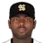

American Baseball League · Eastern Conference
Nashville Stars
16-24 .400 · 9th in Eastern Conference, 7 GB
Run differential -3 (223 RS, 226 RA) · Pythagorean 20-20 · L10 3-7 · Streak L2 · Home 11-13 · Road 5-11
Music City Ballpark (capacity 44,400)
High Minors:  Asheville Tourists · Low Minors:
Asheville Tourists · Low Minors:  Knoxville Smokies
Knoxville Smokies
Depth chart & lineupsPayrollTransactionsLeague financesStaffBallparkRecord bookThe season so far
Season so far games over .500 by date
Recent results
Roster (26)
| # | Player | Pos | B/T | Age |
|---|---|---|---|---|
| 43 | SP | R/R | 31 | |
| 12 | SP | R/R | 27 | |
| 45 | SP | R/R | 23 | |
| 14 | SP | R/R | 27 | |
| 20 | Tim Redding | SP | R/R | 24 |
| 86 | Francisco Campos | RP | R/R | 29 |
| 27 | RP | R/R | 27 | |
| 39 | RP | L/L | 35 | |
| 4 | Scott Randall | RP | R/R | 26 |
| 11 | RP | R/R | 35 | |
| 7 | RP | R/R | 31 | |
| 48 | CL | R/R | 26 | |
| 16 | C | L/R | 32 | |
| 3 | C | L/R | 25 | |
| 2 | 1B | L/L | 23 | |
| 58 | 2B | R/R | 30 | |
| 24 | 2B | L/R | 30 | |
| 15 | 3B | L/R | 29 | |
| 67 | Luis Borges | SS | L/R | 21 |
| 9 | SS | R/R | 30 | |
| 53 | LF | L/R | 28 | |
| 13 | LF | L/R | 24 | |
| 54 | CF | L/L | 29 | |
| 8 | CF | L/R | 26 | |
| 26 |  Milton Bradley | RF | S/R | 24 |
| 23 | RF | S/R | 25 |
2002 batting
| Player | G | PA | AB | R | H | 2B | 3B | HR | RBI | BB | K | SB | AVG | OBP | SLG | OPS |
|---|---|---|---|---|---|---|---|---|---|---|---|---|---|---|---|---|
| Michael Tucker | 37 | 184 | 156 | 34 | 48 | 13 | 1 | 5 | 16 | 25 | 31 | 5 | .308 | .404 | .500 | .904 |
| Bobby Kielty | 40 | 183 | 159 | 32 | 50 | 10 | 1 | 8 | 29 | 21 | 37 | 5 | .314 | .404 | .541 | .945 |
| Carlos Pena | 38 | 179 | 157 | 33 | 45 | 12 | 0 | 10 | 27 | 20 | 49 | 5 | .287 | .374 | .554 | .928 |
| Bobby Abreu | 38 | 166 | 144 | 18 | 41 | 7 | 0 | 5 | 22 | 22 | 28 | 5 | .285 | .380 | .438 | .817 |
| Milton Bradley | 38 | 165 | 155 | 22 | 46 | 12 | 2 | 3 | 28 | 10 | 31 | 6 | .297 | .339 | .458 | .797 |
| Russell Branyan | 37 | 156 | 140 | 23 | 39 | 6 | 1 | 7 | 22 | 15 | 55 | 0 | .279 | .353 | .486 | .838 |
| Aaron Guiel | 37 | 153 | 137 | 19 | 41 | 12 | 1 | 4 | 28 | 13 | 34 | 0 | .299 | .359 | .489 | .849 |
| Chris Gomez | 37 | 146 | 137 | 16 | 44 | 8 | 1 | 2 | 15 | 5 | 15 | 1 | .321 | .342 | .438 | .780 |
| Jorge Fabregas | 29 | 115 | 112 | 12 | 30 | 3 | 0 | 3 | 12 | 1 | 9 | 0 | .268 | .274 | .375 | .649 |
| Jason Grabowski | 20 | 83 | 75 | 7 | 21 | 9 | 1 | 1 | 10 | 6 | 17 | 1 | .280 | .329 | .467 | .796 |
| Larry Bigbie | 11 | 24 | 21 | 4 | 6 | 2 | 0 | 0 | 0 | 3 | 7 | 1 | .286 | .375 | .381 | .756 |
| George Lombard | 4 | 13 | 10 | 0 | 1 | 1 | 0 | 0 | 0 | 2 | 2 | 1 | .100 | .308 | .200 | .508 |
| Andy Abad | 5 | 13 | 12 | 3 | 4 | 1 | 1 | 1 | 7 | 1 | 1 | 0 | .333 | .385 | .833 | 1.218 |
| Luis Borges | 8 | 12 | 12 | 0 | 4 | 0 | 0 | 0 | 1 | 0 | 2 | 0 | .333 | .333 | .333 | .667 |
| Team | 40 | 1592 | 1427 | 223 | 420 | 96 | 9 | 49 | 217 | 144 | 318 | 30 | .294 | .361 | .477 | .839 |
2002 batting, advanced
| Player | PA | AVG | OBP | SLG | OPS+ | ISO | BABIP | BB% | K% | WPA | UBR | WAR |
|---|---|---|---|---|---|---|---|---|---|---|---|---|
| Michael Tucker | 184 | .308 | .404 | .500 | 123 | .192 | .355 | 13.6% | 16.8% | 0.43 | 0.9 | 0.6 |
| Bobby Kielty | 183 | .314 | .404 | .541 | 132 | .226 | .368 | 11.5% | 20.2% | 2.17 | -1.0 | 0.8 |
| Carlos Pena | 179 | .287 | .374 | .554 | 127 | .268 | .357 | 11.2% | 27.4% | 0.49 | -0.8 | 0.7 |
| Bobby Abreu | 166 | .285 | .380 | .438 | 102 | .153 | .324 | 13.3% | 16.9% | -0.33 | -0.4 | -0.2 |
| Milton Bradley | 165 | .297 | .339 | .458 | 96 | .161 | .355 | 6.1% | 18.8% | 0.16 | 0.1 | 0.6 |
| Russell Branyan | 156 | .279 | .353 | .486 | 105 | .207 | .410 | 9.6% | 35.3% | 0.11 | 0.0 | 0.5 |
| Aaron Guiel | 153 | .299 | .359 | .489 | 108 | .190 | .366 | 8.5% | 22.2% | 0.51 | -0.7 | 0.5 |
| Chris Gomez | 146 | .321 | .342 | .438 | 92 | .117 | .341 | 3.4% | 10.3% | -0.18 | -0.2 | 0.0 |
| Jorge Fabregas | 115 | .268 | .274 | .375 | 59 | .107 | .270 | 0.9% | 7.8% | -0.86 | -0.5 | -0.2 |
| Jason Grabowski | 83 | .280 | .329 | .467 | 95 | .187 | .345 | 7.2% | 20.5% | -0.25 | 0.6 | 0.0 |
| Larry Bigbie | 24 | .286 | .375 | .381 | 89 | .095 | .429 | 12.5% | 29.2% | -0.09 | -0.3 | 0.0 |
| George Lombard | 13 | .100 | .308 | .200 | 30 | .100 | .125 | 15.4% | 15.4% | -0.09 | 0.0 | 0.0 |
| Andy Abad | 13 | .333 | .385 | .833 | 191 | .500 | .300 | 7.7% | 7.7% | 0.41 | 0.0 | 0.2 |
| Luis Borges | 12 | .333 | .333 | .333 | 66 | .000 | .400 | 0.0% | 16.7% | 0.09 | -0.4 | -0.1 |
| Team | 1592 | .294 | .361 | .477 | 106 | .183 | .348 | 9.0% | 20.0% | 2.56 | -2.6 | 3.4 |
2002 pitching
| Pitcher | G | GS | W | L | SV | IP | H | R | ER | BB | K | HR | ERA | WHIP |
|---|---|---|---|---|---|---|---|---|---|---|---|---|---|---|
| Matt Clement | 9 | 9 | 1 | 5 | 0 | 52.1 | 73 | 42 | 39 | 23 | 55 | 6 | 6.71 | 1.83 |
| Miguel Batista | 8 | 8 | 3 | 1 | 0 | 51.0 | 45 | 20 | 17 | 24 | 41 | 3 | 3.00 | 1.35 |
| Russ Ortiz | 8 | 8 | 3 | 4 | 0 | 43.1 | 41 | 30 | 30 | 35 | 31 | 6 | 6.23 | 1.75 |
| Tim Redding | 8 | 8 | 2 | 3 | 0 | 40.1 | 58 | 34 | 32 | 18 | 34 | 7 | 7.14 | 1.88 |
| Trey Hodges | 7 | 7 | 1 | 4 | 0 | 36.0 | 42 | 31 | 28 | 14 | 30 | 8 | 7.00 | 1.56 |
| Scott Randall | 11 | 0 | 1 | 1 | 0 | 26.1 | 28 | 12 | 12 | 16 | 16 | 3 | 4.10 | 1.67 |
| Francisco Campos | 7 | 0 | 1 | 0 | 0 | 22.1 | 29 | 21 | 20 | 16 | 11 | 3 | 8.06 | 2.01 |
| Lance Carter | 10 | 0 | 2 | 1 | 0 | 19.0 | 12 | 5 | 5 | 5 | 15 | 1 | 2.37 | 0.89 |
| Mike Trombley | 11 | 0 | 0 | 1 | 0 | 19.0 | 21 | 10 | 10 | 7 | 22 | 2 | 4.74 | 1.47 |
| Rheal Cormier | 13 | 0 | 1 | 3 | 2 | 15.0 | 17 | 8 | 5 | 7 | 12 | 0 | 3.00 | 1.60 |
| Scott Williamson | 10 | 0 | 1 | 1 | 6 | 13.2 | 11 | 7 | 7 | 8 | 20 | 1 | 4.61 | 1.39 |
| Marc Wilkins | 5 | 0 | 0 | 0 | 0 | 11.0 | 18 | 6 | 6 | 4 | 8 | 1 | 4.91 | 2.00 |
| Team | 40 | 40 | 16 | 24 | 8 | 349.1 | 395 | 226 | 211 | 177 | 295 | 41 | 5.44 | 1.64 |
2002 pitching, advanced
| Pitcher | IP | ERA | WHIP | K/9 | BB/9 | HR/9 | K% | BB% | K-BB% | FIP | ERA+ | GB% | WPA | WAR |
|---|---|---|---|---|---|---|---|---|---|---|---|---|---|---|
| Matt Clement | 52.1 | 6.71 | 1.83 | 9.5 | 4.0 | 1.0 | 21.7% | 9.1% | 12.6% | 4.62 | 76 | 47.9% | -1.81 | 1.1 |
| Miguel Batista | 51.0 | 3.00 | 1.35 | 7.2 | 4.2 | 0.5 | 18.9% | 11.1% | 7.8% | 4.37 | 171 | 50.0% | 0.31 | 1.2 |
| Russ Ortiz | 43.1 | 6.23 | 1.75 | 6.4 | 7.3 | 1.2 | 15.7% | 17.7% | -2.0% | 6.54 | 82 | 55.1% | -0.67 | 0.0 |
| Tim Redding | 40.1 | 7.14 | 1.88 | 7.6 | 4.0 | 1.6 | 17.9% | 9.5% | 8.4% | 5.66 | 72 | 53.3% | -1.55 | 0.4 |
| Trey Hodges | 36.0 | 7.00 | 1.56 | 7.5 | 3.5 | 2.0 | 18.2% | 8.5% | 9.7% | 6.15 | 73 | 49.3% | -1.14 | 0.2 |
| Scott Randall | 26.1 | 4.10 | 1.67 | 5.5 | 5.5 | 1.0 | 13.1% | 13.1% | 0.0% | 5.77 | 125 | 56.5% | -0.65 | -0.1 |
| Francisco Campos | 22.1 | 8.06 | 2.01 | 4.4 | 6.4 | 1.2 | 9.8% | 14.3% | -4.5% | 6.86 | 64 | 63.5% | -0.16 | -0.3 |
| Lance Carter | 19.0 | 2.37 | 0.89 | 7.1 | 2.4 | 0.5 | 21.1% | 7.0% | 14.1% | 3.57 | 217 | 63.2% | 0.39 | 0.4 |
| Mike Trombley | 19.0 | 4.74 | 1.47 | 10.4 | 3.3 | 0.9 | 25.9% | 8.2% | 17.6% | 3.99 | 108 | 58.8% | -0.81 | 0.4 |
| Rheal Cormier | 15.0 | 3.00 | 1.60 | 7.2 | 4.2 | 0.0 | 17.4% | 10.1% | 7.2% | 3.88 | 171 | 57.1% | -0.80 | 0.5 |
| Scott Williamson | 13.2 | 4.61 | 1.39 | 13.2 | 5.3 | 0.7 | 32.8% | 13.1% | 19.7% | 3.46 | 111 | 33.3% | -0.16 | 0.5 |
| Marc Wilkins | 11.0 | 4.91 | 2.00 | 6.5 | 3.3 | 0.8 | 14.8% | 7.4% | 7.4% | 4.77 | 105 | 56.5% | 0.03 | 0.1 |
| Team | 349.1 | 5.44 | 1.64 | 7.6 | 4.6 | 1.1 | 18.5% | 11.1% | 7.4% | 5.16 | 94 | 53.4% | -7.02 | 4.3 |
2002 fielding
| Player | Pos | G | GS | Inn | TC | PO | A | E | DP | FPct | ZR | Arm | Framing |
|---|---|---|---|---|---|---|---|---|---|---|---|---|---|
| Geoff Combe | P | 66 | 0 | 528.0 | 23 | 9 | 13 | 1 | 0 | .957 | 0.0 | - | - |
| Rich Sauveur | P | 61 | 3 | 488.0 | 22 | 7 | 13 | 2 | 0 | .909 | 0.0 | - | - |
| Steve Mintz | P | 56 | 0 | 448.0 | 16 | 4 | 10 | 2 | 1 | .875 | 0.0 | - | - |
| Cory Bailey | P | 55 | 0 | 440.0 | 20 | 9 | 9 | 2 | 4 | .900 | 0.0 | - | - |
| Brian Drahman | P | 54 | 0 | 432.0 | 32 | 8 | 22 | 2 | 2 | .938 | 0.0 | - | - |
| Geoff Combe | P | 54 | 0 | 432.0 | 22 | 6 | 15 | 1 | 0 | .955 | 0.0 | - | - |
| Todd Rizzo | P | 54 | 0 | 432.0 | 32 | 8 | 22 | 2 | 2 | .938 | 0.0 | - | - |
| Milt Hill | P | 53 | 0 | 424.0 | 11 | 5 | 6 | 0 | 0 | 1.000 | 0.0 | - | - |
| Rich Sauveur | P | 53 | 3 | 424.0 | 10 | 5 | 5 | 0 | 0 | 1.000 | 0.0 | - | - |
| Carl Willis | P | 53 | 0 | 424.0 | 14 | 1 | 12 | 1 | 2 | .929 | 0.0 | - | - |
| Jim Dougherty | P | 53 | 0 | 424.0 | 13 | 4 | 8 | 1 | 1 | .923 | 0.0 | - | - |
| Jeff Gray | P | 53 | 0 | 424.0 | 17 | 3 | 13 | 1 | 0 | .941 | 0.0 | - | - |
| Tony Menendez | P | 50 | 2 | 400.0 | 29 | 7 | 21 | 1 | 1 | .966 | 0.0 | - | - |
| German Boris | P | 49 | 2 | 392.0 | 15 | 8 | 7 | 0 | 0 | 1.000 | 0.0 | - | - |
| Jason Boyd | P | 49 | 0 | 392.0 | 20 | 5 | 12 | 3 | 1 | .850 | 0.0 | - | - |
| Steve Gajkowski | P | 49 | 8 | 392.0 | 37 | 6 | 30 | 1 | 3 | .973 | 0.0 | - | - |
| Milt Hill | P | 48 | 0 | 384.0 | 12 | 2 | 10 | 0 | 2 | 1.000 | 0.0 | - | - |
| Chuck Cary | P | 48 | 0 | 384.0 | 19 | 6 | 12 | 1 | 2 | .947 | 0.0 | - | - |
| Jeff Darwin | P | 47 | 0 | 376.0 | 9 | 3 | 6 | 0 | 0 | 1.000 | 0.0 | - | - |
| Keith Brown | P | 47 | 1 | 376.0 | 13 | 4 | 9 | 0 | 1 | 1.000 | 0.0 | - | - |
| Isidro Marquez | P | 46 | 0 | 368.0 | 13 | 2 | 11 | 0 | 1 | 1.000 | 0.0 | - | - |
| Rich Sauveur | P | 46 | 0 | 368.0 | 12 | 3 | 9 | 0 | 1 | 1.000 | 0.0 | - | - |
| Dane Johnson | P | 46 | 0 | 368.0 | 28 | 7 | 19 | 2 | 2 | .929 | 0.0 | - | - |
| Dave Pavlas | P | 45 | 0 | 360.0 | 13 | 1 | 9 | 3 | 0 | .769 | 0.0 | - | - |
| Mike Villano | P | 45 | 1 | 360.0 | 28 | 8 | 16 | 4 | 2 | .857 | 0.0 | - | - |
| McPherson High Minors | P | 44 | 1 | 352.0 | 12 | 4 | 7 | 1 | 0 | .917 | 0.0 | - | - |
| Cooper Keyser | P | 44 | 9 | 352.0 | 41 | 8 | 30 | 3 | 1 | .927 | 0.0 | - | - |
| George Cappuzzello | P | 44 | 3 | 352.0 | 25 | 5 | 18 | 2 | 0 | .920 | 0.0 | - | - |
| Donn Pall | P | 44 | 0 | 352.0 | 19 | 5 | 14 | 0 | 0 | 1.000 | 0.0 | - | - |
| Jeff Gray | P | 44 | 0 | 352.0 | 24 | 11 | 13 | 0 | 1 | 1.000 | 0.0 | - | - |
| Larry Thomas | P | 44 | 1 | 352.0 | 8 | 0 | 7 | 1 | 0 | .875 | 0.0 | - | - |
| Rob Dibble | P | 44 | 0 | 352.0 | 26 | 6 | 18 | 2 | 2 | .923 | 0.0 | - | - |
| Alan Levine | P | 43 | 0 | 344.0 | 14 | 3 | 11 | 0 | 1 | 1.000 | 0.0 | - | - |
| Chris Howard | P | 43 | 0 | 344.0 | 9 | 2 | 5 | 2 | 0 | .778 | 0.0 | - | - |
| John Pacella | P | 43 | 0 | 344.0 | 11 | 4 | 7 | 0 | 1 | 1.000 | 0.0 | - | - |
| Eric Moody | P | 42 | 8 | 336.0 | 18 | 8 | 10 | 0 | 2 | 1.000 | 0.0 | - | - |
| Jeff Gray | P | 42 | 0 | 336.0 | 22 | 6 | 16 | 0 | 0 | 1.000 | 0.0 | - | - |
| Trevor Hoffman | P | 42 | 5 | 336.0 | 9 | 0 | 9 | 0 | 2 | 1.000 | 0.0 | - | - |
| Mike Griffin | P | 41 | 0 | 328.0 | 35 | 5 | 29 | 1 | 3 | .971 | 0.0 | - | - |
| Steve Foster | P | 41 | 0 | 328.0 | 15 | 4 | 9 | 2 | 0 | .867 | 0.0 | - | - |
| Dave Pavlas | P | 41 | 1 | 328.0 | 9 | 1 | 7 | 1 | 0 | .889 | 0.0 | - | - |
| Kip Gross | P | 40 | 11 | 320.0 | 42 | 7 | 32 | 3 | 3 | .929 | 0.0 | - | - |
| Jeff McCurry | P | 40 | 0 | 320.0 | 14 | 5 | 8 | 1 | 0 | .929 | 0.0 | - | - |
| Charlie Mitchell | P | 40 | 0 | 320.0 | 24 | 5 | 19 | 0 | 2 | 1.000 | 0.0 | - | - |
| Mike Roesler | P | 40 | 0 | 320.0 | 6 | 2 | 2 | 2 | 0 | .667 | 0.0 | - | - |
| Isidro Marquez | P | 39 | 0 | 312.0 | 13 | 6 | 7 | 0 | 0 | 1.000 | 0.0 | - | - |
| Keith Brown | P | 39 | 9 | 312.0 | 25 | 6 | 17 | 2 | 0 | .920 | 0.0 | - | - |
| Dane Johnson | P | 39 | 0 | 312.0 | 23 | 6 | 16 | 1 | 1 | .957 | 0.0 | - | - |
| Charlie Mitchell | P | 39 | 1 | 312.0 | 31 | 10 | 21 | 0 | 0 | 1.000 | 0.0 | - | - |
| Gary Wilson | P | 39 | 5 | 312.0 | 19 | 8 | 10 | 1 | 2 | .947 | 0.0 | - | - |
| Cooper Keyser | P | 37 | 10 | 296.0 | 42 | 16 | 24 | 2 | 2 | .952 | 0.0 | - | - |
| Milt Hill | P | 37 | 0 | 296.0 | 9 | 2 | 7 | 0 | 0 | 1.000 | 0.0 | - | - |
| John Pacella | P | 37 | 12 | 296.0 | 32 | 11 | 17 | 4 | 0 | .875 | 0.0 | - | - |
| Brian O'Connor | P | 37 | 16 | 296.0 | 16 | 1 | 15 | 0 | 1 | 1.000 | 0.0 | - | - |
| Brian Smith | P | 36 | 0 | 288.0 | 5 | 4 | 1 | 0 | 1 | 1.000 | 0.0 | - | - |
| Jimmy Anderson | P | 35 | 17 | 280.0 | 7 | 2 | 5 | 0 | 0 | 1.000 | 0.0 | - | - |
| Mike Jones | P | 35 | 4 | 280.0 | 14 | 4 | 10 | 0 | 0 | 1.000 | 0.0 | - | - |
| Charlie Mitchell | P | 35 | 12 | 280.0 | 20 | 5 | 14 | 1 | 1 | .950 | 0.0 | - | - |
| Joey Long | P | 35 | 0 | 280.0 | 7 | 2 | 5 | 0 | 1 | 1.000 | 0.0 | - | - |
| Travis Baptist | P | 34 | 16 | 272.0 | 40 | 11 | 29 | 0 | 3 | 1.000 | 0.0 | - | - |
| Jeff Sparks | P | 34 | 0 | 272.0 | 7 | 3 | 4 | 0 | 0 | 1.000 | 0.0 | - | - |
| Bill Scherrer | P | 33 | 0 | 264.0 | 11 | 4 | 7 | 0 | 0 | 1.000 | 0.0 | - | - |
| Yankosky High Minors | P | 32 | 0 | 256.0 | 10 | 2 | 6 | 2 | 0 | .800 | 0.0 | - | - |
| Busbin Callahan | P | 32 | 16 | 256.0 | 23 | 6 | 14 | 3 | 2 | .870 | 0.0 | - | - |
| Marc Wilkins | P | 32 | 0 | 256.0 | 5 | 0 | 5 | 0 | 0 | 1.000 | 0.0 | - | - |
| Mike Roesler | P | 32 | 0 | 256.0 | 19 | 5 | 13 | 1 | 1 | .947 | 0.0 | - | - |
| Don Cooper | P | 32 | 0 | 256.0 | 13 | 4 | 9 | 0 | 2 | 1.000 | 0.0 | - | - |
| Brian Denman | P | 31 | 23 | 248.0 | 6 | 2 | 4 | 0 | 1 | 1.000 | 0.0 | - | - |
| Andy McGaffigan | P | 31 | 20 | 248.0 | 40 | 8 | 24 | 8 | 0 | .800 | 0.0 | - | - |
| Steve Sparks | P | 31 | 10 | 248.0 | 11 | 2 | 7 | 2 | 0 | .818 | 0.0 | - | - |
| Bill Scherrer | P | 31 | 1 | 248.0 | 12 | 3 | 8 | 1 | 1 | .917 | 0.0 | - | - |
| Mike Henneman | P | 31 | 0 | 248.0 | 18 | 3 | 13 | 2 | 0 | .889 | 0.0 | - | - |
| Sid Monge | P | 31 | 0 | 248.0 | 11 | 2 | 8 | 1 | 1 | .909 | 0.0 | - | - |
| Victor Cruz | P | 31 | 0 | 248.0 | 19 | 5 | 13 | 1 | 1 | .947 | 0.0 | - | - |
| Rob Dibble | P | 31 | 0 | 248.0 | 5 | 2 | 3 | 0 | 0 | 1.000 | 0.0 | - | - |
| Cooper Keyser | P | 30 | 18 | 240.0 | 5 | 2 | 3 | 0 | 0 | 1.000 | 0.0 | - | - |
| Paul Gibson | P | 30 | 14 | 240.0 | 13 | 3 | 10 | 0 | 1 | 1.000 | 0.0 | - | - |
| Ordorica Lazorko | P | 29 | 18 | 232.0 | 37 | 15 | 21 | 1 | 3 | .973 | 0.0 | - | - |
| Busbin Callahan | P | 29 | 29 | 232.0 | 30 | 9 | 21 | 0 | 1 | 1.000 | 0.0 | - | - |
| Clay Christiansen | P | 29 | 29 | 232.0 | 5 | 1 | 4 | 0 | 0 | 1.000 | 0.0 | - | - |
| Brian Fisher | P | 29 | 0 | 232.0 | 11 | 5 | 6 | 0 | 0 | 1.000 | 0.0 | - | - |
| Gino Minutelli | P | 29 | 29 | 232.0 | 30 | 6 | 22 | 2 | 2 | .933 | 0.0 | - | - |
| Steve Schrenk | P | 29 | 28 | 232.0 | 17 | 4 | 12 | 1 | 1 | .941 | 0.0 | - | - |
| Keith Brown | P | 29 | 27 | 232.0 | 6 | 2 | 4 | 0 | 0 | 1.000 | 0.0 | - | - |
| Ed Olwine | P | 29 | 6 | 232.0 | 15 | 5 | 8 | 2 | 1 | .867 | 0.0 | - | - |
| Stefan Wever | P | 29 | 29 | 232.0 | 14 | 3 | 10 | 1 | 1 | .929 | 0.0 | - | - |
| Mike Bertotti | P | 28 | 9 | 224.0 | 17 | 4 | 13 | 0 | 1 | 1.000 | 0.0 | - | - |
| Matt Karchner | P | 28 | 0 | 224.0 | 12 | 4 | 6 | 2 | 3 | .833 | 0.0 | - | - |
| Jay Howell | P | 28 | 25 | 224.0 | 7 | 2 | 4 | 1 | 0 | .857 | 0.0 | - | - |
| Stacy Jones | P | 28 | 0 | 224.0 | 4 | 3 | 1 | 0 | 0 | 1.000 | 0.0 | - | - |
| Kris Benson | P | 28 | 28 | 224.0 | 32 | 15 | 16 | 1 | 0 | .969 | 0.0 | - | - |
| Norm Charlton | P | 27 | 27 | 216.0 | 19 | 6 | 12 | 1 | 1 | .947 | 0.0 | - | - |
| Brian Denman | P | 27 | 26 | 216.0 | 8 | 3 | 5 | 0 | 0 | 1.000 | 0.0 | - | - |
| Bryan Kelly | P | 27 | 18 | 216.0 | 34 | 8 | 25 | 1 | 3 | .971 | 0.0 | - | - |
| Tim Pugh | P | 27 | 27 | 216.0 | 30 | 13 | 17 | 0 | 0 | 1.000 | 0.0 | - | - |
| Todd Van Poppel | P | 27 | 27 | 216.0 | 31 | 13 | 18 | 0 | 2 | 1.000 | 0.0 | - | - |
| Scott Terry | P | 27 | 27 | 216.0 | 16 | 4 | 11 | 1 | 1 | .938 | 0.0 | - | - |
| Scott Brown | P | 27 | 19 | 216.0 | 18 | 2 | 15 | 1 | 0 | .944 | 0.0 | - | - |
| Tom Filer | P | 27 | 26 | 216.0 | 4 | 1 | 3 | 0 | 0 | 1.000 | 0.0 | - | - |
| Bill Dawley | P | 27 | 25 | 216.0 | 5 | 2 | 2 | 1 | 0 | .800 | 0.0 | - | - |
| Rich Monteleone | P | 27 | 26 | 216.0 | 33 | 13 | 19 | 1 | 2 | .970 | 0.0 | - | - |
| James Baldwin | P | 26 | 26 | 208.0 | 27 | 9 | 16 | 2 | 0 | .926 | 0.0 | - | - |
| Alan Levine | P | 26 | 0 | 208.0 | 10 | 1 | 8 | 1 | 0 | .900 | 0.0 | - | - |
| Rich Loiselle | P | 26 | 1 | 208.0 | 6 | 2 | 4 | 0 | 0 | 1.000 | 0.0 | - | - |
| Sean Lawrence | P | 26 | 26 | 208.0 | 17 | 3 | 12 | 2 | 0 | .882 | 0.0 | - | - |
| Tim Layana | P | 26 | 2 | 208.0 | 22 | 5 | 15 | 2 | 1 | .909 | 0.0 | - | - |
| Keith Brown | P | 26 | 23 | 208.0 | 4 | 1 | 3 | 0 | 0 | 1.000 | 0.0 | - | - |
| Mike Morgan | P | 26 | 26 | 208.0 | 10 | 2 | 8 | 0 | 0 | 1.000 | 0.0 | - | - |
| Bob Tewksbury | P | 26 | 26 | 208.0 | 7 | 1 | 6 | 0 | 0 | 1.000 | 0.0 | - | - |
| Sam McConnell | P | 26 | 23 | 208.0 | 27 | 3 | 21 | 3 | 0 | .889 | 0.0 | - | - |
| Mateo Armstrong | P | 25 | 24 | 200.0 | 25 | 6 | 17 | 2 | 0 | .920 | 0.0 | - | - |
| Jeff Darwin | P | 25 | 6 | 200.0 | 10 | 1 | 9 | 0 | 1 | 1.000 | 0.0 | - | - |
| Jeff Robinson | P | 25 | 24 | 200.0 | 9 | 4 | 5 | 0 | 0 | 1.000 | 0.0 | - | - |
| Ross Powell | P | 25 | 12 | 200.0 | 10 | 2 | 8 | 0 | 1 | 1.000 | 0.0 | - | - |
| Bill Dawley | P | 25 | 24 | 200.0 | 29 | 6 | 22 | 1 | 2 | .966 | 0.0 | - | - |
| Mo Sanford | P | 25 | 25 | 200.0 | 21 | 5 | 16 | 0 | 0 | 1.000 | 0.0 | - | - |
| Dennis Powell | P | 25 | 0 | 200.0 | 7 | 2 | 5 | 0 | 2 | 1.000 | 0.0 | - | - |
| Mike Garcia | P | 24 | 0 | 192.0 | 6 | 3 | 2 | 1 | 1 | .833 | 0.0 | - | - |
| Chris Hammond | P | 24 | 24 | 192.0 | 4 | 1 | 3 | 0 | 0 | 1.000 | 0.0 | - | - |
| Chris Hammond | P | 24 | 24 | 192.0 | 26 | 4 | 21 | 1 | 3 | .962 | 0.0 | - | - |
| Scott Ruffcorn | P | 24 | 24 | 192.0 | 30 | 16 | 11 | 3 | 1 | .900 | 0.0 | - | - |
| Scott Ruffcorn | P | 24 | 24 | 192.0 | 13 | 4 | 8 | 1 | 1 | .923 | 0.0 | - | - |
| Ross Powell | P | 24 | 24 | 192.0 | 18 | 3 | 13 | 2 | 1 | .889 | 0.0 | - | - |
| Jeff Montgomery | P | 24 | 21 | 192.0 | 28 | 11 | 16 | 1 | 1 | .964 | 0.0 | - | - |
| Bruce Berenyi | P | 23 | 23 | 184.0 | 8 | 3 | 5 | 0 | 1 | 1.000 | 0.0 | - | - |
| Mike Garcia | P | 23 | 0 | 184.0 | 13 | 3 | 9 | 1 | 1 | .923 | 0.0 | - | - |
| Tim Pugh | P | 23 | 23 | 184.0 | 28 | 10 | 16 | 2 | 3 | .929 | 0.0 | - | - |
| Drew Hall | P | 23 | 1 | 184.0 | 6 | 1 | 5 | 0 | 1 | 1.000 | 0.0 | - | - |
| Charlie Mitchell | P | 23 | 6 | 184.0 | 27 | 6 | 19 | 2 | 2 | .926 | 0.0 | - | - |
| Jose Parra | P | 23 | 21 | 184.0 | 13 | 7 | 5 | 1 | 1 | .923 | 0.0 | - | - |
| Bob Sykes | P | 23 | 0 | 184.0 | 6 | 1 | 5 | 0 | 2 | 1.000 | 0.0 | - | - |
| Chris Clemons | P | 22 | 21 | 176.0 | 24 | 7 | 17 | 0 | 0 | 1.000 | 0.0 | - | - |
| Greg Hansell | P | 22 | 0 | 176.0 | 13 | 3 | 9 | 1 | 1 | .923 | 0.0 | - | - |
| Will McEnaney | P | 22 | 0 | 176.0 | 4 | 1 | 3 | 0 | 1 | 1.000 | 0.0 | - | - |
| Frank Pastore | P | 22 | 20 | 176.0 | 23 | 6 | 16 | 1 | 1 | .957 | 0.0 | - | - |
| Joe Price | P | 22 | 20 | 176.0 | 22 | 3 | 19 | 0 | 0 | 1.000 | 0.0 | - | - |
| Jose Segura | P | 22 | 0 | 176.0 | 4 | 1 | 3 | 0 | 0 | 1.000 | 0.0 | - | - |
| Chuck Cary | P | 22 | 0 | 176.0 | 6 | 2 | 4 | 0 | 0 | 1.000 | 0.0 | - | - |
| Bob Milacki | P | 22 | 20 | 176.0 | 13 | 3 | 9 | 1 | 1 | .923 | 0.0 | - | - |
| Tom Fordham | P | 22 | 22 | 176.0 | 16 | 4 | 12 | 0 | 1 | 1.000 | 0.0 | - | - |
| Bob Stoddard | P | 22 | 0 | 176.0 | 8 | 1 | 6 | 1 | 1 | .875 | 0.0 | - | - |
| Brad Guy | P | 22 | 2 | 176.0 | 13 | 5 | 7 | 1 | 2 | .923 | 0.0 | - | - |
| Jimmy Anderson | P | 21 | 21 | 168.0 | 3 | 1 | 2 | 0 | 0 | 1.000 | 0.0 | - | - |
| Mike Bertotti | P | 21 | 20 | 168.0 | 19 | 4 | 15 | 0 | 0 | 1.000 | 0.0 | - | - |
| Nelson Cruz | P | 21 | 20 | 168.0 | 25 | 6 | 19 | 0 | 0 | 1.000 | 0.0 | - | - |
| Bryan Kelly | P | 21 | 18 | 168.0 | 5 | 2 | 3 | 0 | 0 | 1.000 | 0.0 | - | - |
| Steve Schrenk | P | 21 | 20 | 168.0 | 27 | 9 | 17 | 1 | 1 | .963 | 0.0 | - | - |
| Tom Fordham | P | 21 | 20 | 168.0 | 24 | 4 | 18 | 2 | 1 | .917 | 0.0 | - | - |
| Atlee Hammaker | P | 21 | 0 | 168.0 | 11 | 1 | 8 | 2 | 0 | .818 | 0.0 | - | - |
| Joe Magrane | P | 21 | 1 | 168.0 | 4 | 1 | 3 | 0 | 0 | 1.000 | 0.0 | - | - |
| Steve Shirley | P | 21 | 0 | 168.0 | 4 | 0 | 4 | 0 | 0 | 1.000 | 0.0 | - | - |
| Tim Burke | P | 20 | 20 | 160.0 | 23 | 5 | 17 | 1 | 3 | .957 | 0.0 | - | - |
| Rodney Bolton | P | 20 | 20 | 160.0 | 3 | 1 | 2 | 0 | 1 | 1.000 | 0.0 | - | - |
| Billy Taylor | P | 20 | 0 | 160.0 | 12 | 3 | 8 | 1 | 1 | .917 | 0.0 | - | - |
| Chuck Smith | P | 20 | 1 | 160.0 | 10 | 2 | 7 | 1 | 0 | .900 | 0.0 | - | - |
| Steve Wilson | P | 20 | 7 | 160.0 | 10 | 3 | 6 | 1 | 0 | .900 | 0.0 | - | - |
| Wise Sutko | P | 19 | 0 | 152.0 | 11 | 5 | 6 | 0 | 0 | 1.000 | 0.0 | - | - |
| Tom Bolton | P | 19 | 17 | 152.0 | 18 | 3 | 14 | 1 | 0 | .944 | 0.0 | - | - |
| Robert Ellis | P | 19 | 19 | 152.0 | 12 | 3 | 8 | 1 | 1 | .917 | 0.0 | - | - |
| Robert Ellis | P | 19 | 13 | 152.0 | 23 | 3 | 20 | 0 | 2 | 1.000 | 0.0 | - | - |
| Tim Scott | P | 19 | 0 | 152.0 | 7 | 4 | 3 | 0 | 1 | 1.000 | 0.0 | - | - |
| Frank Castillo | P | 19 | 19 | 152.0 | 12 | 3 | 8 | 1 | 1 | .917 | 0.0 | - | - |
| Mike Sirotka | P | 19 | 19 | 152.0 | 10 | 3 | 7 | 0 | 0 | 1.000 | 0.0 | - | - |
| Bill Landrum | P | 19 | 2 | 152.0 | 7 | 2 | 4 | 1 | 0 | .857 | 0.0 | - | - |
| Bo Donaldson | P | 19 | 2 | 152.0 | 4 | 0 | 4 | 0 | 1 | 1.000 | 0.0 | - | - |
| Gooris Slagle | P | 18 | 18 | 144.0 | 5 | 1 | 4 | 0 | 0 | 1.000 | 0.0 | - | - |
| James Baldwin | P | 18 | 18 | 144.0 | 19 | 3 | 15 | 1 | 0 | .947 | 0.0 | - | - |
| Rodney Bolton | P | 18 | 16 | 144.0 | 11 | 3 | 7 | 1 | 1 | .909 | 0.0 | - | - |
| Norm Charlton | P | 18 | 17 | 144.0 | 22 | 6 | 15 | 1 | 0 | .955 | 0.0 | - | - |
| Don Wengert | P | 18 | 18 | 144.0 | 11 | 3 | 7 | 1 | 1 | .909 | 0.0 | - | - |
| Mike Lincoln | P | 18 | 13 | 144.0 | 19 | 8 | 10 | 1 | 3 | .947 | 0.0 | - | - |
| Larry Thomas | P | 18 | 18 | 144.0 | 20 | 5 | 14 | 1 | 0 | .950 | 0.0 | - | - |
| Mateo Armstrong | P | 17 | 17 | 136.0 | 8 | 3 | 4 | 1 | 1 | .875 | 0.0 | - | - |
| Rodney Bolton | P | 17 | 17 | 136.0 | 10 | 2 | 7 | 1 | 1 | .900 | 0.0 | - | - |
| Steve Foster | P | 17 | 7 | 136.0 | 9 | 3 | 5 | 1 | 1 | .889 | 0.0 | - | - |
| Matt Karchner | P | 17 | 0 | 136.0 | 8 | 1 | 7 | 0 | 1 | 1.000 | 0.0 | - | - |
| Marc Wilkins | P | 17 | 4 | 136.0 | 9 | 1 | 6 | 2 | 1 | .778 | 0.0 | - | - |
| Mike Heathcott | P | 17 | 0 | 136.0 | 10 | 2 | 7 | 1 | 1 | .900 | 0.0 | - | - |
| Shorsher Low Minors | P | 16 | 1 | 128.0 | 11 | 3 | 8 | 0 | 0 | 1.000 | 0.0 | - | - |
| Pat Pacillo | P | 16 | 16 | 128.0 | 9 | 2 | 6 | 1 | 1 | .889 | 0.0 | - | - |
| Steve Schrenk | P | 16 | 15 | 128.0 | 9 | 3 | 6 | 0 | 0 | 1.000 | 0.0 | - | - |
| Mike Williams | P | 16 | 4 | 128.0 | 6 | 0 | 6 | 0 | 0 | 1.000 | 0.0 | - | - |
| Dave Righetti | P | 16 | 15 | 128.0 | 16 | 1 | 11 | 4 | 0 | .750 | 0.0 | - | - |
| Harris High Minors | P | 15 | 0 | 120.0 | 6 | 3 | 2 | 1 | 0 | .833 | 0.0 | - | - |
| Steve Gajkowski | P | 15 | 0 | 120.0 | 6 | 4 | 2 | 0 | 0 | 1.000 | 0.0 | - | - |
| Josias Manzanillo | P | 15 | 0 | 120.0 | 3 | 2 | 1 | 0 | 0 | 1.000 | 0.0 | - | - |
| Jeff Wallace | P | 15 | 0 | 120.0 | 4 | 0 | 3 | 1 | 0 | .750 | 0.0 | - | - |
| Atlee Hammaker | P | 15 | 0 | 120.0 | 8 | 3 | 5 | 0 | 0 | 1.000 | 0.0 | - | - |
| Tavo Alvarez | P | 15 | 15 | 120.0 | 9 | 2 | 6 | 1 | 1 | .889 | 0.0 | - | - |
| Mike Sirotka | P | 15 | 15 | 120.0 | 16 | 2 | 14 | 0 | 1 | 1.000 | 0.0 | - | - |
| Shawn Camp | P | 15 | 1 | 120.0 | 7 | 3 | 4 | 0 | 1 | 1.000 | 0.0 | - | - |
| Kip Gross | P | 14 | 6 | 112.0 | 9 | 2 | 6 | 1 | 1 | .889 | 0.0 | - | - |
| Mickey Mahler | P | 14 | 13 | 112.0 | 16 | 5 | 11 | 0 | 1 | 1.000 | 0.0 | - | - |
| John Barfield | P | 14 | 4 | 112.0 | 17 | 5 | 12 | 0 | 1 | 1.000 | 0.0 | - | - |
| Pete Filson | P | 14 | 13 | 112.0 | 18 | 3 | 14 | 1 | 1 | .944 | 0.0 | - | - |
| Ray Fontenot | P | 14 | 14 | 112.0 | 17 | 1 | 15 | 1 | 0 | .941 | 0.0 | - | - |
| Scott Karl | P | 14 | 14 | 112.0 | 15 | 2 | 11 | 2 | 0 | .867 | 0.0 | - | - |
| Jeff Schwarz | P | 14 | 0 | 112.0 | 2 | 2 | 0 | 0 | 0 | 1.000 | 0.0 | - | - |
| Gavin Osteen | P | 14 | 0 | 112.0 | 2 | 1 | 1 | 0 | 0 | 1.000 | 0.0 | - | - |
| Merricks Snell | P | 13 | 4 | 104.0 | 12 | 4 | 8 | 0 | 1 | 1.000 | 0.0 | - | - |
| Bronson Arroyo | P | 13 | 13 | 104.0 | 2 | 1 | 1 | 0 | 0 | 1.000 | 0.0 | - | - |
| Matt Karchner | P | 13 | 0 | 104.0 | 3 | 1 | 2 | 0 | 0 | 1.000 | 0.0 | - | - |
| Gino Minutelli | P | 13 | 13 | 104.0 | 17 | 2 | 13 | 2 | 0 | .882 | 0.0 | - | - |
| Bobby Moore | P | 13 | 0 | 104.0 | 3 | 0 | 2 | 1 | 0 | .667 | 0.0 | - | - |
| Jeff Wallace | P | 13 | 0 | 104.0 | 3 | 0 | 3 | 0 | 0 | 1.000 | 0.0 | - | - |
| Kevin Pickford | P | 13 | 12 | 104.0 | 15 | 4 | 11 | 0 | 0 | 1.000 | 0.0 | - | - |
| Scott Brown | P | 13 | 13 | 104.0 | 7 | 2 | 4 | 1 | 0 | .857 | 0.0 | - | - |
| Candy Sierra | P | 13 | 13 | 104.0 | 7 | 2 | 5 | 0 | 0 | 1.000 | 0.0 | - | - |
| Gooris Slagle | P | 12 | 11 | 96.0 | 3 | 1 | 2 | 0 | 0 | 1.000 | 0.0 | - | - |
| Kane Davis | P | 12 | 9 | 96.0 | 7 | 3 | 3 | 1 | 0 | .857 | 0.0 | - | - |
| Brad Clontz | P | 12 | 0 | 96.0 | 3 | 1 | 1 | 1 | 0 | .667 | 0.0 | - | - |
| Keith Brown | P | 12 | 12 | 96.0 | 7 | 2 | 5 | 0 | 0 | 1.000 | 0.0 | - | - |
| Scott Scudder | P | 12 | 12 | 96.0 | 13 | 3 | 10 | 0 | 1 | 1.000 | 0.0 | - | - |
| Neil Allen | P | 12 | 0 | 96.0 | 8 | 2 | 6 | 0 | 0 | 1.000 | 0.0 | - | - |
| McPherson High Minors | P | 11 | 7 | 88.0 | 5 | 1 | 4 | 0 | 0 | 1.000 | 0.0 | - | - |
| Maybin Breining | P | 11 | 7 | 88.0 | 6 | 1 | 5 | 0 | 0 | 1.000 | 0.0 | - | - |
| Jeff Carter | P | 11 | 6 | 88.0 | 10 | 1 | 9 | 0 | 1 | 1.000 | 0.0 | - | - |
| Matt Dunbar | P | 11 | 0 | 88.0 | 3 | 0 | 3 | 0 | 0 | 1.000 | 0.0 | - | - |
| Mark Dewey | P | 11 | 0 | 88.0 | 5 | 1 | 4 | 0 | 0 | 1.000 | 0.0 | - | - |
| Gino Minutelli | P | 11 | 11 | 88.0 | 6 | 2 | 4 | 0 | 0 | 1.000 | 0.0 | - | - |
| Chris Peters | P | 11 | 9 | 88.0 | 8 | 0 | 8 | 0 | 0 | 1.000 | 0.0 | - | - |
| Chris Peters | P | 11 | 11 | 88.0 | 10 | 4 | 6 | 0 | 0 | 1.000 | 0.0 | - | - |
| Scott Scudder | P | 11 | 11 | 88.0 | 8 | 3 | 4 | 1 | 0 | .875 | 0.0 | - | - |
| Bob Sebra | P | 11 | 0 | 88.0 | 4 | 2 | 2 | 0 | 0 | 1.000 | 0.0 | - | - |
| Cooper Keyser | P | 10 | 10 | 80.0 | 5 | 1 | 4 | 0 | 0 | 1.000 | 0.0 | - | - |
| Keelin Serum | P | 10 | 0 | 80.0 | 10 | 3 | 7 | 0 | 0 | 1.000 | 0.0 | - | - |
| James Baldwin | P | 10 | 10 | 80.0 | 13 | 6 | 7 | 0 | 0 | 1.000 | 0.0 | - | - |
| Rich Robertson | P | 10 | 6 | 80.0 | 10 | 3 | 7 | 0 | 0 | 1.000 | 0.0 | - | - |
| Randy O'Neal | P | 10 | 10 | 80.0 | 5 | 1 | 4 | 0 | 0 | 1.000 | 0.0 | - | - |
| Bob Buchanan | P | 10 | 9 | 80.0 | 13 | 2 | 11 | 0 | 2 | 1.000 | 0.0 | - | - |
| Scott Nielsen | P | 10 | 10 | 80.0 | 5 | 1 | 4 | 0 | 0 | 1.000 | 0.0 | - | - |
| Dave Stieb | P | 10 | 9 | 80.0 | 3 | 1 | 2 | 0 | 0 | 1.000 | 0.0 | - | - |
| Gooris Slagle | P | 9 | 7 | 72.0 | 6 | 3 | 3 | 0 | 0 | 1.000 | 0.0 | - | - |
| Culp Bushing | P | 9 | 0 | 72.0 | 2 | 0 | 2 | 0 | 0 | 1.000 | 0.0 | - | - |
| Bronson Arroyo | P | 9 | 9 | 72.0 | 4 | 1 | 3 | 0 | 0 | 1.000 | 0.0 | - | - |
| Don Heinkel | P | 9 | 8 | 72.0 | 5 | 1 | 4 | 0 | 0 | 1.000 | 0.0 | - | - |
| Stefan Wever | P | 9 | 9 | 72.0 | 5 | 1 | 4 | 0 | 0 | 1.000 | 0.0 | - | - |
| Baez Birtsas | P | 8 | 8 | 64.0 | 4 | 1 | 3 | 0 | 0 | 1.000 | 0.0 | - | - |
| Baez Birtsas | P | 8 | 5 | 64.0 | 7 | 1 | 3 | 3 | 1 | .571 | 0.0 | - | - |
| Jason Bere | P | 8 | 8 | 64.0 | 4 | 1 | 3 | 0 | 0 | 1.000 | 0.0 | - | - |
| Carlos Crawford | P | 8 | 5 | 64.0 | 4 | 2 | 2 | 0 | 0 | 1.000 | 0.0 | - | - |
| Alan Levine | P | 8 | 4 | 64.0 | 6 | 4 | 1 | 1 | 0 | .833 | 0.0 | - | - |
| Don Heinkel | P | 8 | 7 | 64.0 | 4 | 1 | 3 | 0 | 0 | 1.000 | 0.0 | - | - |
| Marc Wilkins | P | 8 | 0 | 64.0 | 4 | 1 | 3 | 0 | 0 | 1.000 | 0.0 | - | - |
| Bill Risley | P | 8 | 8 | 64.0 | 9 | 2 | 6 | 1 | 0 | .889 | 0.0 | - | - |
| Mike Sirotka | P | 8 | 8 | 64.0 | 4 | 1 | 3 | 0 | 0 | 1.000 | 0.0 | - | - |
| Luis Andujar | P | 8 | 7 | 64.0 | 9 | 2 | 5 | 2 | 0 | .778 | 0.0 | - | - |
| Neal McDade | P | 8 | 0 | 64.0 | 3 | 0 | 3 | 0 | 1 | 1.000 | 0.0 | - | - |
| Sam McConnell | P | 8 | 8 | 64.0 | 4 | 1 | 3 | 0 | 0 | 1.000 | 0.0 | - | - |
| Maybin Breining | P | 7 | 4 | 56.0 | 6 | 2 | 4 | 0 | 0 | 1.000 | 0.0 | - | - |
| Mike Bertotti | P | 7 | 6 | 56.0 | 2 | 1 | 1 | 0 | 0 | 1.000 | 0.0 | - | - |
| Ramon Garcia | P | 7 | 7 | 56.0 | 4 | 1 | 3 | 0 | 0 | 1.000 | 0.0 | - | - |
| Matt Keough | P | 7 | 7 | 56.0 | 7 | 2 | 5 | 0 | 0 | 1.000 | 0.0 | - | - |
| Barry Jones | P | 7 | 0 | 56.0 | 5 | 3 | 2 | 0 | 0 | 1.000 | 0.0 | - | - |
| Jesus Hernaiz | P | 7 | 4 | 56.0 | 4 | 1 | 3 | 0 | 0 | 1.000 | 0.0 | - | - |
| Andrew Lorraine | P | 7 | 7 | 56.0 | 2 | 0 | 2 | 0 | 0 | 1.000 | 0.0 | - | - |
| Scott Ruffcorn | P | 7 | 6 | 56.0 | 4 | 1 | 3 | 0 | 0 | 1.000 | 0.0 | - | - |
| Matt Skrmetta | P | 7 | 0 | 56.0 | 1 | 0 | 1 | 0 | 0 | 1.000 | 0.0 | - | - |
| Jim Deshaies | P | 7 | 7 | 56.0 | 7 | 1 | 6 | 0 | 0 | 1.000 | 0.0 | - | - |
| Jeff Schwarz | P | 7 | 0 | 56.0 | 3 | 0 | 3 | 0 | 0 | 1.000 | 0.0 | - | - |
| Bill Simas | P | 7 | 0 | 56.0 | 2 | 0 | 2 | 0 | 0 | 1.000 | 0.0 | - | - |
| Bob Tewksbury | P | 7 | 7 | 56.0 | 4 | 1 | 3 | 0 | 0 | 1.000 | 0.0 | - | - |
| Clint Chrysler | P | 7 | 0 | 56.0 | 1 | 0 | 0 | 1 | 0 | .000 | 0.0 | - | - |
| Dave Evans | P | 7 | 1 | 56.0 | 3 | 0 | 3 | 0 | 0 | 1.000 | 0.0 | - | - |
| Matt Clement | P | 9 | 9 | 52.1 | 5 | 2 | 3 | 0 | 0 | 1.000 | 1.3 | - | - |
| Miguel Batista | P | 8 | 8 | 51.0 | 6 | 3 | 3 | 0 | 0 | 1.000 | 0.4 | - | - |
| Wall American Baseball League | P | 6 | 0 | 48.0 | 2 | 1 | 1 | 0 | 0 | 1.000 | 0.0 | - | - |
| Wall American Baseball League | P | 6 | 0 | 48.0 | 2 | 1 | 1 | 0 | 0 | 1.000 | 0.0 | - | - |
| Cooper Keyser | P | 6 | 6 | 48.0 | 3 | 1 | 2 | 0 | 0 | 1.000 | 0.0 | - | - |
| Mateo Armstrong | P | 6 | 6 | 48.0 | 1 | 0 | 1 | 0 | 0 | 1.000 | 0.0 | - | - |
| Elmer Dessens | P | 6 | 5 | 48.0 | 3 | 1 | 2 | 0 | 0 | 1.000 | 0.0 | - | - |
| Scott Klingenbeck | P | 6 | 6 | 48.0 | 3 | 1 | 2 | 0 | 0 | 1.000 | 0.0 | - | - |
| Jason Phillips | P | 6 | 6 | 48.0 | 5 | 4 | 1 | 0 | 0 | 1.000 | 0.0 | - | - |
| Ken Ryan | P | 6 | 0 | 48.0 | 3 | 0 | 3 | 0 | 0 | 1.000 | 0.0 | - | - |
| Eric King | P | 6 | 6 | 48.0 | 3 | 1 | 2 | 0 | 0 | 1.000 | 0.0 | - | - |
| Wayne Garland | P | 6 | 6 | 48.0 | 3 | 1 | 2 | 0 | 0 | 1.000 | 0.0 | - | - |
| Jeff Lahti | P | 6 | 0 | 48.0 | 7 | 1 | 2 | 4 | 0 | .429 | 0.0 | - | - |
| Derek Hasselhoff | P | 6 | 0 | 48.0 | 2 | 0 | 2 | 0 | 0 | 1.000 | 0.0 | - | - |
| Russ Ortiz | P | 8 | 8 | 43.1 | 7 | 4 | 2 | 1 | 0 | .857 | -0.2 | - | - |
| Akens Jones | P | 5 | 0 | 40.0 | 1 | 1 | 0 | 0 | 0 | 1.000 | 0.0 | - | - |
| Culp Bushing | P | 5 | 0 | 40.0 | 2 | 1 | 1 | 0 | 1 | 1.000 | 0.0 | - | - |
| Terry Leach | P | 5 | 0 | 40.0 | 4 | 3 | 1 | 0 | 0 | 1.000 | 0.0 | - | - |
| Jason Phillips | P | 5 | 5 | 40.0 | 3 | 1 | 2 | 0 | 0 | 1.000 | 0.0 | - | - |
| Jose Rijo | P | 5 | 5 | 40.0 | 3 | 1 | 2 | 0 | 0 | 1.000 | 0.0 | - | - |
| Brian O'Connor | P | 5 | 5 | 40.0 | 3 | 1 | 2 | 0 | 0 | 1.000 | 0.0 | - | - |
| Rosario Rodriguez | P | 5 | 0 | 40.0 | 2 | 0 | 2 | 0 | 0 | 1.000 | 0.0 | - | - |
| Marc Wilkins | P | 5 | 0 | 40.0 | 1 | 0 | 1 | 0 | 0 | 1.000 | 0.0 | - | - |
| Gene Roof | P | 5 | 0 | 40.0 | 1 | 0 | 1 | 0 | 0 | 1.000 | 0.0 | - | - |
| Larry Rothschild | P | 5 | 0 | 40.0 | 2 | 0 | 2 | 0 | 0 | 1.000 | 0.0 | - | - |
| Mo Sanford | P | 5 | 5 | 40.0 | 3 | 1 | 2 | 0 | 0 | 1.000 | 0.0 | - | - |
| Bob Fallon | P | 5 | 5 | 40.0 | 5 | 1 | 4 | 0 | 0 | 1.000 | 0.0 | - | - |
| Tim Redding | P | 8 | 8 | 40.1 | 6 | 2 | 3 | 1 | 0 | .833 | -0.2 | - | - |
| Tom Browning | P | 5 | 5 | 40.0 | 3 | 1 | 2 | 0 | 0 | 1.000 | 0.0 | - | - |
| Trey Hodges | P | 7 | 7 | 36.0 | 4 | 2 | 2 | 0 | 0 | 1.000 | -0.2 | - | - |
| Lowry American Baseball League | P | 4 | 0 | 32.0 | 3 | 1 | 2 | 0 | 0 | 1.000 | 0.0 | - | - |
| Caston Heflin | P | 4 | 0 | 32.0 | 2 | 1 | 1 | 0 | 0 | 1.000 | 0.0 | - | - |
| Chris Tremie | P | 4 | 0 | 32.0 | 3 | 1 | 2 | 0 | 0 | 1.000 | 0.0 | - | - |
| Silva Wrona | P | 4 | 0 | 32.0 | 3 | 1 | 2 | 0 | 0 | 1.000 | 0.0 | - | - |
| Silva Wrona | P | 4 | 0 | 32.0 | 3 | 1 | 2 | 0 | 0 | 1.000 | 0.0 | - | - |
| Jason Bere | P | 4 | 4 | 32.0 | 2 | 0 | 2 | 0 | 0 | 1.000 | 0.0 | - | - |
| Doug Drabek | P | 4 | 4 | 32.0 | 3 | 1 | 2 | 0 | 0 | 1.000 | 0.0 | - | - |
| Carlos Castillo | P | 4 | 0 | 32.0 | 4 | 1 | 3 | 0 | 0 | 1.000 | 0.0 | - | - |
| Robert Ellis | P | 4 | 4 | 32.0 | 4 | 1 | 3 | 0 | 0 | 1.000 | 0.0 | - | - |
| Rich Loiselle | P | 4 | 0 | 32.0 | 1 | 0 | 1 | 0 | 0 | 1.000 | 0.0 | - | - |
| Rich Loiselle | P | 4 | 0 | 32.0 | 1 | 0 | 1 | 0 | 0 | 1.000 | 0.0 | - | - |
| Damaso Marte | P | 4 | 0 | 32.0 | 3 | 1 | 2 | 0 | 0 | 1.000 | 0.0 | - | - |
| Scott Pose | P | 4 | 0 | 32.0 | 1 | 1 | 0 | 0 | 0 | 1.000 | 0.0 | - | - |
| Randy O'Neal | P | 4 | 4 | 32.0 | 3 | 1 | 2 | 0 | 0 | 1.000 | 0.0 | - | - |
| Jeff Tabaka | P | 4 | 0 | 32.0 | 1 | 0 | 1 | 0 | 0 | 1.000 | 0.0 | - | - |
| Brad Clontz | P | 4 | 0 | 32.0 | 1 | 0 | 1 | 0 | 0 | 1.000 | 0.0 | - | - |
| Bobby Thigpen | P | 4 | 0 | 32.0 | 1 | 0 | 1 | 0 | 0 | 1.000 | 0.0 | - | - |
| Larry Wimberly | P | 4 | 3 | 32.0 | 1 | 0 | 1 | 0 | 0 | 1.000 | 0.0 | - | - |
| Reed Secrist | P | 4 | 0 | 32.0 | 1 | 1 | 0 | 0 | 0 | 1.000 | 0.0 | - | - |
| Scott Randall | P | 11 | 0 | 26.1 | 2 | 0 | 2 | 0 | 0 | 1.000 | -0.5 | - | - |
| Shorsher Low Minors | P | 3 | 0 | 24.0 | 2 | 1 | 1 | 0 | 0 | 1.000 | 0.0 | - | - |
| Jacquez American Baseball League | P | 3 | 0 | 24.0 | 1 | 0 | 0 | 1 | 0 | .000 | 0.0 | - | - |
| Bronson Arroyo | P | 3 | 3 | 24.0 | 2 | 0 | 2 | 0 | 0 | 1.000 | 0.0 | - | - |
| Jason Bere | P | 3 | 3 | 24.0 | 3 | 1 | 1 | 1 | 0 | .667 | 0.0 | - | - |
| Tom Bolton | P | 3 | 1 | 24.0 | 3 | 1 | 2 | 0 | 0 | 1.000 | 0.0 | - | - |
| Danilo Leon | P | 3 | 3 | 24.0 | 1 | 0 | 1 | 0 | 0 | 1.000 | 0.0 | - | - |
| Alan Levine | P | 3 | 3 | 24.0 | 1 | 1 | 0 | 0 | 0 | 1.000 | 0.0 | - | - |
| Rafael Novoa | P | 3 | 3 | 24.0 | 2 | 1 | 1 | 0 | 0 | 1.000 | 0.0 | - | - |
| Ross Powell | P | 3 | 0 | 24.0 | 1 | 0 | 1 | 0 | 0 | 1.000 | 0.0 | - | - |
| Ron Robinson | P | 3 | 3 | 24.0 | 1 | 0 | 1 | 0 | 0 | 1.000 | 0.0 | - | - |
| Jose Silva | P | 3 | 3 | 24.0 | 2 | 1 | 1 | 0 | 0 | 1.000 | 0.0 | - | - |
| Francisco Campos | P | 7 | 0 | 22.1 | 2 | 0 | 2 | 0 | 0 | 1.000 | -0.5 | - | - |
| Lance Carter | P | 10 | 0 | 19.0 | 0 | 0 | 0 | 0 | 0 | - | 0.4 | - | - |
| Mike Trombley | P | 11 | 0 | 19.0 | 0 | 0 | 0 | 0 | 0 | - | -0.2 | - | - |
| Smith High Minors | P | 2 | 0 | 16.0 | 1 | 0 | 1 | 0 | 0 | 1.000 | 0.0 | - | - |
| Boyer High Minors | P | 2 | 0 | 16.0 | 2 | 1 | 1 | 0 | 0 | 1.000 | 0.0 | - | - |
| Chris Tremie | P | 2 | 0 | 16.0 | 1 | 0 | 1 | 0 | 0 | 1.000 | 0.0 | - | - |
| Chris Tremie | P | 2 | 0 | 16.0 | 1 | 0 | 1 | 0 | 0 | 1.000 | 0.0 | - | - |
| King Wehner | P | 2 | 0 | 16.0 | 1 | 0 | 1 | 0 | 1 | 1.000 | 0.0 | - | - |
| Cherry Smith | P | 2 | 0 | 16.0 | 1 | 1 | 0 | 0 | 0 | 1.000 | 0.0 | - | - |
| Cherry Smith | P | 2 | 0 | 16.0 | 1 | 1 | 0 | 0 | 0 | 1.000 | 0.0 | - | - |
| Cherry Smith | P | 2 | 0 | 16.0 | 1 | 1 | 0 | 0 | 0 | 1.000 | 0.0 | - | - |
| Korneev Baker | P | 2 | 0 | 16.0 | 1 | 0 | 1 | 0 | 0 | 1.000 | 0.0 | - | - |
| Korneev Baker | P | 2 | 0 | 16.0 | 1 | 0 | 1 | 0 | 0 | 1.000 | 0.0 | - | - |
| Jimmy Anderson | P | 2 | 2 | 16.0 | 1 | 0 | 1 | 0 | 0 | 1.000 | 0.0 | - | - |
| James Baldwin | P | 2 | 2 | 16.0 | 2 | 2 | 0 | 0 | 0 | 1.000 | 0.0 | - | - |
| Busbin Callahan | P | 2 | 2 | 16.0 | 1 | 0 | 1 | 0 | 0 | 1.000 | 0.0 | - | - |
| Francisco Cordova | P | 2 | 2 | 16.0 | 1 | 0 | 1 | 0 | 0 | 1.000 | 0.0 | - | - |
| Jason Christiansen | P | 2 | 0 | 16.0 | 1 | 0 | 1 | 0 | 0 | 1.000 | 0.0 | - | - |
| Matt Howard | P | 2 | 0 | 16.0 | 1 | 0 | 1 | 0 | 0 | 1.000 | 0.0 | - | - |
| Scott Ruffcorn | P | 2 | 2 | 16.0 | 2 | 1 | 1 | 0 | 0 | 1.000 | 0.0 | - | - |
| Scott Sauerbeck | P | 2 | 0 | 16.0 | 1 | 0 | 1 | 0 | 0 | 1.000 | 0.0 | - | - |
| Joe Price | P | 2 | 2 | 16.0 | 1 | 1 | 0 | 0 | 0 | 1.000 | 0.0 | - | - |
| Mario Soto | P | 2 | 2 | 16.0 | 2 | 0 | 2 | 0 | 0 | 1.000 | 0.0 | - | - |
| Craig Wilson | P | 2 | 0 | 16.0 | 1 | 1 | 0 | 0 | 0 | 1.000 | 0.0 | - | - |
| Craig Wilson | P | 2 | 0 | 16.0 | 1 | 1 | 0 | 0 | 0 | 1.000 | 0.0 | - | - |
| Danny Jackson | P | 2 | 2 | 16.0 | 1 | 0 | 1 | 0 | 0 | 1.000 | 0.0 | - | - |
| Domingo Martinez | P | 2 | 0 | 16.0 | 1 | 0 | 1 | 0 | 1 | 1.000 | 0.0 | - | - |
| Bob MacDonald | P | 2 | 0 | 16.0 | 1 | 0 | 1 | 0 | 0 | 1.000 | 0.0 | - | - |
| Ron Robinson | P | 2 | 2 | 16.0 | 1 | 1 | 0 | 0 | 0 | 1.000 | 0.0 | - | - |
| Jose Silva | P | 2 | 2 | 16.0 | 2 | 1 | 1 | 0 | 0 | 1.000 | 0.0 | - | - |
| Frank Williams | P | 2 | 0 | 16.0 | 1 | 1 | 0 | 0 | 0 | 1.000 | 0.0 | - | - |
| Dave Williams | P | 2 | 2 | 16.0 | 1 | 0 | 1 | 0 | 0 | 1.000 | 0.0 | - | - |
| Jerry Reuss | P | 2 | 2 | 16.0 | 1 | 0 | 1 | 0 | 0 | 1.000 | 0.0 | - | - |
| Jim Parque | P | 2 | 2 | 16.0 | 1 | 0 | 1 | 0 | 0 | 1.000 | 0.0 | - | - |
| Rheal Cormier | P | 13 | 0 | 15.0 | 2 | 0 | 1 | 1 | 0 | .500 | -0.5 | - | - |
| Scott Williamson | P | 10 | 0 | 13.2 | 2 | 1 | 1 | 0 | 0 | 1.000 | 0.1 | - | - |
| Marc Wilkins | P | 5 | 0 | 11.0 | 1 | 1 | 0 | 0 | 0 | 1.000 | -0.3 | - | - |
| Whittaker High Minors | P | 1 | 0 | 8.0 | 0 | 0 | 0 | 0 | 0 | - | 0.0 | - | - |
| Abernathy High Minors | P | 1 | 0 | 8.0 | 1 | 0 | 1 | 0 | 0 | 1.000 | 0.0 | - | - |
| Sansom Low Minors | P | 1 | 0 | 8.0 | 1 | 0 | 1 | 0 | 0 | 1.000 | 0.0 | - | - |
| Murray American Baseball League | P | 1 | 0 | 8.0 | 0 | 0 | 0 | 0 | 0 | - | 0.0 | - | - |
| Murray American Baseball League | P | 1 | 0 | 8.0 | 0 | 0 | 0 | 0 | 0 | - | 0.0 | - | - |
| Ron Coomer | P | 1 | 0 | 8.0 | 0 | 0 | 0 | 0 | 0 | - | 0.0 | - | - |
| Yamid Haad | P | 1 | 0 | 8.0 | 0 | 0 | 0 | 0 | 0 | - | 0.0 | - | - |
| Williams American Baseball League | P | 1 | 0 | 8.0 | 0 | 0 | 0 | 0 | 0 | - | 0.0 | - | - |
| Williams American Baseball League | P | 1 | 0 | 8.0 | 0 | 0 | 0 | 0 | 0 | - | 0.0 | - | - |
| Francisco High Minors | P | 1 | 0 | 8.0 | 0 | 0 | 0 | 0 | 0 | - | 0.0 | - | - |
| Tim Laker | P | 1 | 0 | 8.0 | 0 | 0 | 0 | 0 | 0 | - | 0.0 | - | - |
| Tim Laker | P | 1 | 0 | 8.0 | 0 | 0 | 0 | 0 | 0 | - | 0.0 | - | - |
| Prince Howitt | P | 1 | 0 | 8.0 | 0 | 0 | 0 | 0 | 0 | - | 0.0 | - | - |
| Sanchez Morman | P | 1 | 0 | 8.0 | 0 | 0 | 0 | 0 | 0 | - | 0.0 | - | - |
| Spataro Richardson | P | 1 | 0 | 8.0 | 0 | 0 | 0 | 0 | 0 | - | 0.0 | - | - |
| Leu Sveum | P | 1 | 0 | 8.0 | 0 | 0 | 0 | 0 | 0 | - | 0.0 | - | - |
| King Wehner | P | 1 | 0 | 8.0 | 0 | 0 | 0 | 0 | 0 | - | 0.0 | - | - |
| Sanchez Van Gorder | P | 1 | 0 | 8.0 | 0 | 0 | 0 | 0 | 0 | - | 0.0 | - | - |
| Sanchez Van Gorder | P | 1 | 0 | 8.0 | 0 | 0 | 0 | 0 | 0 | - | 0.0 | - | - |
| Morla Werner | P | 1 | 0 | 8.0 | 1 | 1 | 0 | 0 | 0 | 1.000 | 0.0 | - | - |
| Dowdy Tingley | P | 1 | 0 | 8.0 | 0 | 0 | 0 | 0 | 0 | - | 0.0 | - | - |
| Silva Wrona | P | 1 | 0 | 8.0 | 0 | 0 | 0 | 0 | 0 | - | 0.0 | - | - |
| Francisco Candaele | P | 1 | 0 | 8.0 | 0 | 0 | 0 | 0 | 0 | - | 0.0 | - | - |
| Jason Bere | P | 1 | 1 | 8.0 | 0 | 0 | 0 | 0 | 0 | - | 0.0 | - | - |
| Scott Bradley | P | 1 | 0 | 8.0 | 0 | 0 | 0 | 0 | 0 | - | 0.0 | - | - |
| Scott Bradley | P | 1 | 0 | 8.0 | 0 | 0 | 0 | 0 | 0 | - | 0.0 | - | - |
| Scott Bradley | P | 1 | 0 | 8.0 | 0 | 0 | 0 | 0 | 0 | - | 0.0 | - | - |
| George Cappuzzello | P | 1 | 1 | 8.0 | 1 | 1 | 0 | 0 | 0 | 1.000 | 0.0 | - | - |
| Scott Coolbaugh | P | 1 | 0 | 8.0 | 0 | 0 | 0 | 0 | 0 | - | 0.0 | - | - |
| Francisco Cordova | P | 1 | 1 | 8.0 | 0 | 0 | 0 | 0 | 0 | - | 0.0 | - | - |
| Brian Harper | P | 1 | 0 | 8.0 | 0 | 0 | 0 | 0 | 0 | - | 0.0 | - | - |
| Keith Foulke | P | 1 | 1 | 8.0 | 1 | 0 | 1 | 0 | 1 | 1.000 | 0.0 | - | - |
| Matt Karchner | P | 1 | 0 | 8.0 | 1 | 1 | 0 | 0 | 0 | 1.000 | 0.0 | - | - |
| Rick Mahler | P | 1 | 1 | 8.0 | 0 | 0 | 0 | 0 | 0 | - | 0.0 | - | - |
| Keith Lockhart | P | 1 | 0 | 8.0 | 0 | 0 | 0 | 0 | 0 | - | 0.0 | - | - |
| Keith Lockhart | P | 1 | 0 | 8.0 | 0 | 0 | 0 | 0 | 0 | - | 0.0 | - | - |
| Keith Lockhart | P | 1 | 0 | 8.0 | 0 | 0 | 0 | 0 | 0 | - | 0.0 | - | - |
| Keith Hughes | P | 1 | 0 | 8.0 | 0 | 0 | 0 | 0 | 0 | - | 0.0 | - | - |
| Adam Hyzdu | P | 1 | 0 | 8.0 | 0 | 0 | 0 | 0 | 0 | - | 0.0 | - | - |
| Jason Phillips | P | 1 | 1 | 8.0 | 1 | 0 | 1 | 0 | 0 | 1.000 | 0.0 | - | - |
| Jose Rijo | P | 1 | 1 | 8.0 | 1 | 1 | 0 | 0 | 0 | 1.000 | 0.0 | - | - |
| Todd Ritchie | P | 1 | 1 | 8.0 | 1 | 0 | 1 | 0 | 0 | 1.000 | 0.0 | - | - |
| Rolando Roomes | P | 1 | 0 | 8.0 | 0 | 0 | 0 | 0 | 0 | - | 0.0 | - | - |
| Dick Scott | P | 1 | 0 | 8.0 | 0 | 0 | 0 | 0 | 0 | - | 0.0 | - | - |
| Jeff Sellers | P | 1 | 1 | 8.0 | 0 | 0 | 0 | 0 | 0 | - | 0.0 | - | - |
| Kevin Tolar | P | 1 | 0 | 8.0 | 1 | 1 | 0 | 0 | 0 | 1.000 | 0.0 | - | - |
| Dwight Taylor | P | 1 | 0 | 8.0 | 0 | 0 | 0 | 0 | 0 | - | 0.0 | - | - |
| Chuck Cary | P | 1 | 0 | 8.0 | 1 | 0 | 1 | 0 | 0 | 1.000 | 0.0 | - | - |
| Scott Earl | P | 1 | 0 | 8.0 | 0 | 0 | 0 | 0 | 0 | - | 0.0 | - | - |
| Scott Earl | P | 1 | 0 | 8.0 | 0 | 0 | 0 | 0 | 0 | - | 0.0 | - | - |
| Scott Earl | P | 1 | 0 | 8.0 | 0 | 0 | 0 | 0 | 0 | - | 0.0 | - | - |
| Shawn Gilbert | P | 1 | 0 | 8.0 | 0 | 0 | 0 | 0 | 0 | - | 0.0 | - | - |
| Tom Dodd | P | 1 | 0 | 8.0 | 0 | 0 | 0 | 0 | 0 | - | 0.0 | - | - |
| Stacy Jones | P | 1 | 0 | 8.0 | 0 | 0 | 0 | 0 | 0 | - | 0.0 | - | - |
| John Harris | P | 1 | 0 | 8.0 | 0 | 0 | 0 | 0 | 0 | - | 0.0 | - | - |
| Bill Lindsey | P | 1 | 0 | 8.0 | 0 | 0 | 0 | 0 | 0 | - | 0.0 | - | - |
| Bill Lindsey | P | 1 | 0 | 8.0 | 0 | 0 | 0 | 0 | 0 | - | 0.0 | - | - |
| Manny Martinez | P | 1 | 0 | 8.0 | 0 | 0 | 0 | 0 | 0 | - | 0.0 | - | - |
| Gene Schall | P | 1 | 0 | 8.0 | 0 | 0 | 0 | 0 | 0 | - | 0.0 | - | - |
| Jason Schmidt | P | 1 | 1 | 8.0 | 1 | 1 | 0 | 0 | 0 | 1.000 | 0.0 | - | - |
| Donnie Scott | P | 1 | 0 | 8.0 | 0 | 0 | 0 | 0 | 0 | - | 0.0 | - | - |
| Donnie Scott | P | 1 | 0 | 8.0 | 0 | 0 | 0 | 0 | 0 | - | 0.0 | - | - |
| Chuck Smith | P | 1 | 0 | 8.0 | 1 | 0 | 1 | 0 | 0 | 1.000 | 0.0 | - | - |
| Eddie Zosky | P | 1 | 0 | 8.0 | 0 | 0 | 0 | 0 | 0 | - | 0.0 | - | - |
| Wilson Alvarez | P | 1 | 1 | 8.0 | 1 | 0 | 1 | 0 | 0 | 1.000 | 0.0 | - | - |
| Skeeter Barnes | P | 1 | 0 | 8.0 | 0 | 0 | 0 | 0 | 0 | - | 0.0 | - | - |
| Skeeter Barnes | P | 1 | 0 | 8.0 | 0 | 0 | 0 | 0 | 0 | - | 0.0 | - | - |
| Skeeter Barnes | P | 1 | 0 | 8.0 | 0 | 0 | 0 | 0 | 0 | - | 0.0 | - | - |
| Keith Osik | P | 1 | 0 | 8.0 | 0 | 0 | 0 | 0 | 0 | - | 0.0 | - | - |
| Andy Barkett | P | 1 | 0 | 8.0 | 0 | 0 | 0 | 0 | 0 | - | 0.0 | - | - |
| Ricardo Rincon | P | 1 | 0 | 8.0 | 1 | 0 | 1 | 0 | 0 | 1.000 | 0.0 | - | - |
| Josh Hall | P | 1 | 0 | 8.0 | 1 | 0 | 1 | 0 | 0 | 1.000 | 0.0 | - | - |
| Josh Hall | P | 1 | 0 | 8.0 | 0 | 0 | 0 | 0 | 0 | - | 0.0 | - | - |
| Tim Howard | P | 1 | 0 | 8.0 | 0 | 0 | 0 | 0 | 0 | - | 0.0 | - | - |
| Kevin Grijak | P | 1 | 0 | 8.0 | 0 | 0 | 0 | 0 | 0 | - | 0.0 | - | - |
| Sanchez Van Gorder | C | 131 | 115 | 1048.0 | 806 | 726 | 74 | 6 | 7 | .993 | 0.5 | 0.0 | 0.0 |
| Dan Wilson | C | 104 | 98 | 832.0 | 810 | 733 | 69 | 8 | 7 | .990 | 1.1 | 0.0 | 0.0 |
| Tim Laker | C | 95 | 87 | 760.0 | 736 | 660 | 64 | 12 | 2 | .984 | -0.3 | 0.0 | 0.0 |
| Scott Bradley | C | 93 | 72 | 744.0 | 521 | 463 | 50 | 8 | 7 | .985 | -1.6 | 0.0 | 0.0 |
| Humberto Cota | C | 91 | 64 | 728.0 | 558 | 523 | 27 | 8 | 0 | .986 | 0.1 | 0.0 | 0.0 |
| Terry McGriff | C | 88 | 81 | 704.0 | 617 | 534 | 74 | 9 | 10 | .985 | -0.7 | 0.0 | 0.0 |
| Terry McGriff | C | 88 | 80 | 704.0 | 632 | 564 | 59 | 9 | 11 | .986 | -0.7 | 0.0 | 0.0 |
| Selby American Baseball League | C | 87 | 75 | 696.0 | 602 | 555 | 46 | 1 | 7 | .998 | 0.1 | 0.0 | 0.0 |
| Brad Gulden | C | 84 | 79 | 672.0 | 632 | 540 | 80 | 12 | 9 | .981 | -1.2 | 0.0 | 0.0 |
| Sangeado Merullo | C | 83 | 64 | 664.0 | 474 | 427 | 40 | 7 | 3 | .985 | -1.3 | 0.0 | 0.0 |
| Randy Knorr | C | 76 | 58 | 608.0 | 485 | 435 | 43 | 7 | 9 | .986 | -0.4 | 0.0 | 0.0 |
| Silva Wrona | C | 72 | 62 | 576.0 | 457 | 400 | 52 | 5 | 7 | .989 | 0.3 | 0.0 | 0.0 |
| Robert Machado | C | 72 | 60 | 576.0 | 516 | 461 | 49 | 6 | 7 | .988 | -1.2 | 0.0 | 0.0 |
| Craig Wilson | C | 71 | 53 | 568.0 | 445 | 398 | 37 | 10 | 2 | .978 | -2.7 | 0.0 | 0.0 |
| Sanchez Van Gorder | C | 71 | 67 | 568.0 | 439 | 396 | 38 | 5 | 4 | .989 | -0.4 | 0.0 | 0.0 |
| Chris Tremie | C | 70 | 60 | 560.0 | 487 | 433 | 52 | 2 | 6 | .996 | -0.2 | 0.0 | 0.0 |
| Donnie Scott | C | 70 | 61 | 560.0 | 462 | 409 | 42 | 11 | 5 | .976 | -1.7 | 0.0 | 0.0 |
| Tim Laker | C | 67 | 56 | 536.0 | 466 | 409 | 46 | 11 | 2 | .976 | -1.0 | 0.0 | 0.0 |
| Chris Tremie | C | 67 | 51 | 536.0 | 425 | 394 | 30 | 1 | 5 | .998 | -0.2 | 0.0 | 0.0 |
| Tisdale Lowry | C | 66 | 50 | 528.0 | 375 | 318 | 45 | 12 | 6 | .968 | 0.7 | 0.0 | 0.0 |
| Joe Oliver | C | 65 | 61 | 520.0 | 457 | 413 | 37 | 7 | 6 | .985 | -0.8 | 0.0 | 0.0 |
| Matt Nokes | C | 63 | 47 | 504.0 | 369 | 327 | 29 | 13 | 4 | .965 | -0.1 | 0.0 | 0.0 |
| Joe Oliver | C | 62 | 57 | 496.0 | 434 | 384 | 37 | 13 | 5 | .970 | -0.6 | 0.0 | 0.0 |
| Doug Lindsey | C | 57 | 51 | 456.0 | 407 | 364 | 36 | 7 | 3 | .983 | -0.4 | 0.0 | 0.0 |
| Junior Ortiz | C | 56 | 40 | 448.0 | 337 | 301 | 31 | 5 | 4 | .985 | -1.2 | 0.0 | 0.0 |
| Donnie Scott | C | 56 | 46 | 448.0 | 358 | 306 | 46 | 6 | 10 | .983 | -1.2 | 0.0 | 0.0 |
| Brian Harper | C | 55 | 43 | 440.0 | 332 | 273 | 46 | 13 | 2 | .961 | -0.9 | 0.0 | 0.0 |
| Whittaker High Minors | C | 54 | 34 | 432.0 | 307 | 284 | 21 | 2 | 0 | .993 | 0.1 | 0.0 | 0.0 |
| Terry McGriff | C | 54 | 49 | 432.0 | 382 | 343 | 36 | 3 | 2 | .992 | -0.2 | 0.0 | 0.0 |
| Bob Melvin | C | 47 | 39 | 376.0 | 294 | 266 | 26 | 2 | 2 | .993 | 0.2 | 0.0 | 0.0 |
| Silva Wrona | C | 44 | 32 | 352.0 | 277 | 243 | 30 | 4 | 1 | .986 | 0.2 | 0.0 | 0.0 |
| Wise Sutko | C | 42 | 36 | 336.0 | 271 | 228 | 39 | 4 | 4 | .985 | -0.9 | 0.0 | 0.0 |
| Chris Tremie | C | 42 | 38 | 336.0 | 325 | 292 | 29 | 4 | 2 | .988 | 0.6 | 0.0 | 0.0 |
| Mark Salas | C | 40 | 38 | 320.0 | 298 | 267 | 24 | 7 | 0 | .977 | -1.6 | 0.0 | 0.0 |
| Scotti Madison | C | 38 | 36 | 304.0 | 270 | 233 | 28 | 9 | 3 | .967 | 0.3 | 0.0 | 0.0 |
| Yamid Haad | C | 37 | 28 | 296.0 | 247 | 222 | 22 | 3 | 4 | .988 | -0.9 | 0.0 | 0.0 |
| Terry McGriff | C | 33 | 26 | 264.0 | 189 | 175 | 10 | 4 | 0 | .979 | -0.3 | 0.0 | 0.0 |
| Jorge Fabregas | C | 29 | 29 | 253.0 | 237 | 222 | 15 | 0 | 1 | 1.000 | 1.1 | 0.0 | 0.7 |
| Norrell Lyons | C | 31 | 22 | 248.0 | 187 | 172 | 15 | 0 | 3 | 1.000 | 0.2 | 0.0 | 0.0 |
| Tim Laker | C | 30 | 20 | 240.0 | 178 | 163 | 13 | 2 | 4 | .989 | -0.6 | 0.0 | 0.0 |
| Silva Wrona | C | 27 | 23 | 216.0 | 177 | 162 | 11 | 4 | 1 | .977 | -0.6 | 0.0 | 0.0 |
| Feliz American Baseball League | C | 24 | 23 | 192.0 | 180 | 156 | 19 | 5 | 1 | .972 | 0.1 | 0.0 | 0.0 |
| Reed Secrist | C | 21 | 13 | 168.0 | 112 | 101 | 6 | 5 | 1 | .955 | 0.1 | 0.0 | 0.0 |
| Scotti Madison | C | 20 | 15 | 160.0 | 113 | 93 | 15 | 5 | 3 | .956 | -0.7 | 0.0 | 0.0 |
| Scotti Madison | C | 20 | 17 | 160.0 | 130 | 112 | 15 | 3 | 1 | .977 | -0.5 | 0.0 | 0.0 |
| Reed Secrist | C | 20 | 10 | 160.0 | 89 | 83 | 6 | 0 | 0 | 1.000 | -0.7 | 0.0 | 0.0 |
| Pressley High Minors | C | 18 | 15 | 144.0 | 115 | 103 | 11 | 1 | 1 | .991 | -0.5 | 0.0 | 0.0 |
| Steve Decker | C | 18 | 14 | 144.0 | 129 | 119 | 10 | 0 | 2 | 1.000 | 0.0 | 0.0 | 0.0 |
| Tisdale Lowry | C | 17 | 12 | 136.0 | 93 | 87 | 5 | 1 | 0 | .989 | -0.2 | 0.0 | 0.0 |
| Fagan High Minors | C | 16 | 15 | 128.0 | 123 | 115 | 6 | 2 | 0 | .984 | -0.3 | 0.0 | 0.0 |
| Brian Dayett | C | 16 | 15 | 128.0 | 121 | 105 | 9 | 7 | 1 | .942 | -2.5 | 0.0 | 0.0 |
| Brian Dayett | C | 16 | 15 | 128.0 | 121 | 105 | 9 | 7 | 1 | .942 | -2.5 | 0.0 | 0.0 |
| Brian Dayett | C | 16 | 15 | 128.0 | 121 | 105 | 9 | 7 | 1 | .942 | -2.5 | 0.0 | 0.0 |
| Robert Machado | C | 15 | 13 | 120.0 | 107 | 87 | 17 | 3 | 1 | .972 | -0.3 | 0.0 | 0.0 |
| Jason Grabowski | C | 11 | 11 | 96.1 | 98 | 88 | 10 | 0 | 1 | 1.000 | 0.1 | 0.0 | -0.7 |
| Morla Werner | C | 12 | 9 | 96.0 | 65 | 59 | 4 | 2 | 2 | .969 | 0.2 | 0.0 | 0.0 |
| Buscher Werth | C | 12 | 11 | 96.0 | 80 | 75 | 5 | 0 | 0 | 1.000 | -1.1 | 0.0 | 0.0 |
| Selby American Baseball League | C | 11 | 10 | 88.0 | 75 | 75 | 0 | 0 | 0 | 1.000 | -0.1 | 0.0 | 0.0 |
| Feliz American Baseball League | C | 11 | 4 | 88.0 | 31 | 23 | 6 | 2 | 1 | .935 | 0.2 | 0.0 | 0.0 |
| Bill Lindsey | C | 11 | 10 | 88.0 | 74 | 63 | 9 | 2 | 1 | .973 | -0.3 | 0.0 | 0.0 |
| Jeff Reed | C | 7 | 7 | 56.0 | 51 | 47 | 4 | 0 | 0 | 1.000 | 0.1 | 0.0 | 0.0 |
| Dowdy Tingley | C | 6 | 5 | 48.0 | 37 | 34 | 3 | 0 | 0 | 1.000 | 0.1 | 0.0 | 0.0 |
| Brunner Johnson | C | 5 | 3 | 40.0 | 23 | 20 | 2 | 1 | 0 | .957 | 0.1 | 0.0 | 0.0 |
| Scott Bradley | C | 5 | 5 | 40.0 | 48 | 44 | 2 | 2 | 0 | .958 | -0.2 | 0.0 | 0.0 |
| Scott Bradley | C | 5 | 3 | 40.0 | 21 | 20 | 0 | 1 | 0 | .952 | 0.1 | 0.0 | 0.0 |
| Josh Hall | C | 5 | 2 | 40.0 | 17 | 15 | 2 | 0 | 0 | 1.000 | -0.2 | 0.0 | 0.0 |
| Josh Hall | C | 5 | 3 | 40.0 | 25 | 19 | 6 | 0 | 1 | 1.000 | 0.1 | 0.0 | 0.0 |
| Murray American Baseball League | C | 4 | 2 | 32.0 | 12 | 11 | 1 | 0 | 0 | 1.000 | 0.1 | 0.0 | 0.0 |
| Murray American Baseball League | C | 4 | 2 | 32.0 | 12 | 11 | 1 | 0 | 0 | 1.000 | 0.1 | 0.0 | 0.0 |
| Craig Wilson | C | 4 | 3 | 32.0 | 30 | 27 | 3 | 0 | 0 | 1.000 | 0.1 | 0.0 | 0.0 |
| Keith Osik | C | 4 | 3 | 32.0 | 27 | 24 | 3 | 0 | 0 | 1.000 | 0.1 | 0.0 | 0.0 |
| Shane Monahan | C | 3 | 1 | 24.0 | 12 | 12 | 0 | 0 | 0 | 1.000 | 0.0 | 0.0 | 0.0 |
| Luis Rosado | C | 3 | 1 | 24.0 | 5 | 5 | 0 | 0 | 0 | 1.000 | 0.0 | 0.0 | 0.0 |
| Bill Lindsey | C | 3 | 3 | 24.0 | 20 | 13 | 7 | 0 | 0 | 1.000 | -0.5 | 0.0 | 0.0 |
| Mike Villano | C | 3 | 1 | 24.0 | 5 | 5 | 0 | 0 | 0 | 1.000 | -0.2 | 0.0 | 0.0 |
| Kevin Grijak | C | 3 | 1 | 24.0 | 7 | 4 | 2 | 1 | 0 | .857 | -0.2 | 0.0 | 0.0 |
| Armas Noce | C | 2 | 1 | 16.0 | 10 | 9 | 1 | 0 | 0 | 1.000 | 0.0 | 0.0 | 0.0 |
| Francisco Candaele | C | 2 | 1 | 16.0 | 10 | 9 | 1 | 0 | 0 | 1.000 | 0.0 | 0.0 | 0.0 |
| Tom Dodd | C | 2 | 2 | 16.0 | 12 | 12 | 0 | 0 | 1 | 1.000 | 0.0 | 0.0 | 0.0 |
| Rob Mackowiak | C | 1 | 1 | 8.0 | 0 | 0 | 0 | 0 | 0 | - | 0.0 | 0.0 | 0.0 |
| Jarrod Patterson | C | 1 | 1 | 8.0 | 0 | 0 | 0 | 0 | 0 | - | 0.0 | 0.0 | 0.0 |
| Jason Wood | C | 1 | 1 | 8.0 | 6 | 5 | 1 | 0 | 0 | 1.000 | 0.0 | 0.0 | 0.0 |
| Jason Wood | C | 1 | 1 | 8.0 | 0 | 0 | 0 | 0 | 0 | - | 0.0 | 0.0 | 0.0 |
| Matt Howard | C | 1 | 1 | 8.0 | 0 | 0 | 0 | 0 | 0 | - | 0.0 | 0.0 | 0.0 |
| Lloyd McClendon | C | 1 | 1 | 8.0 | 0 | 0 | 0 | 0 | 0 | - | 0.0 | 0.0 | 0.0 |
| Lloyd McClendon | C | 1 | 1 | 8.0 | 0 | 0 | 0 | 0 | 0 | - | 0.0 | 0.0 | 0.0 |
| Keith Lockhart | C | 1 | 1 | 8.0 | 0 | 0 | 0 | 0 | 0 | - | 0.0 | 0.0 | 0.0 |
| Keith Lockhart | C | 1 | 1 | 8.0 | 0 | 0 | 0 | 0 | 0 | - | 0.0 | 0.0 | 0.0 |
| Keith Lockhart | C | 1 | 1 | 8.0 | 0 | 0 | 0 | 0 | 0 | - | 0.0 | 0.0 | 0.0 |
| Adam Hyzdu | C | 1 | 1 | 8.0 | 0 | 0 | 0 | 0 | 0 | - | 0.0 | 0.0 | 0.0 |
| Adam Hyzdu | C | 1 | 1 | 8.0 | 0 | 0 | 0 | 0 | 0 | - | 0.0 | 0.0 | 0.0 |
| Steve Mintz | C | 1 | 1 | 8.0 | 0 | 0 | 0 | 0 | 0 | - | 0.0 | 0.0 | 0.0 |
| Dave Engle | C | 1 | 1 | 8.0 | 0 | 0 | 0 | 0 | 0 | - | 0.0 | 0.0 | 0.0 |
| Gene Roof | C | 1 | 1 | 8.0 | 0 | 0 | 0 | 0 | 0 | - | 0.0 | 0.0 | 0.0 |
| Clark Low Minors | 1B | 140 | 83 | 1120.0 | 1307 | 1218 | 76 | 13 | 125 | .990 | 0.0 | - | - |
| Mike Robertson | 1B | 137 | 81 | 1096.0 | 1257 | 1172 | 75 | 10 | 111 | .992 | 0.0 | - | - |
| Mike Robertson | 1B | 137 | 75 | 1096.0 | 1132 | 1074 | 54 | 4 | 89 | .996 | 0.0 | - | - |
| Domingo Martinez | 1B | 128 | 74 | 1024.0 | 1107 | 992 | 100 | 15 | 100 | .986 | 0.0 | - | - |
| Wall American Baseball League | 1B | 125 | 86 | 1000.0 | 1258 | 1162 | 79 | 17 | 109 | .986 | 0.0 | - | - |
| Mike Laga | 1B | 114 | 77 | 912.0 | 1146 | 1024 | 111 | 11 | 101 | .990 | 0.0 | - | - |
| Terry Lee | 1B | 110 | 74 | 880.0 | 1019 | 936 | 74 | 9 | 95 | .991 | 0.0 | - | - |
| Sanchez Morman | 1B | 97 | 60 | 776.0 | 833 | 771 | 54 | 8 | 80 | .990 | 0.0 | - | - |
| Williams American Baseball League | 1B | 91 | 58 | 728.0 | 835 | 766 | 63 | 6 | 67 | .993 | 0.0 | - | - |
| Don Mattingly | 1B | 90 | 52 | 720.0 | 830 | 758 | 64 | 8 | 69 | .990 | 0.0 | - | - |
| Wall American Baseball League | 1B | 88 | 61 | 704.0 | 886 | 823 | 56 | 7 | 67 | .992 | 0.0 | - | - |
| Mario Valdez | 1B | 75 | 46 | 600.0 | 666 | 616 | 44 | 6 | 48 | .991 | 0.0 | - | - |
| Andy Barkett | 1B | 70 | 44 | 560.0 | 609 | 560 | 43 | 6 | 58 | .990 | 0.0 | - | - |
| Terry Lee | 1B | 68 | 45 | 544.0 | 644 | 592 | 47 | 5 | 62 | .992 | 0.0 | - | - |
| Ivan Cruz | 1B | 65 | 43 | 520.0 | 612 | 571 | 37 | 4 | 51 | .993 | 0.0 | - | - |
| Murray American Baseball League | 1B | 64 | 38 | 512.0 | 572 | 522 | 40 | 10 | 53 | .983 | 0.0 | - | - |
| Rafael Santo Domingo | 1B | 60 | 39 | 480.0 | 564 | 520 | 35 | 9 | 41 | .984 | 0.0 | - | - |
| Scotti Madison | 1B | 60 | 37 | 480.0 | 548 | 491 | 53 | 4 | 38 | .993 | 0.0 | - | - |
| Drew Denson | 1B | 56 | 41 | 448.0 | 593 | 534 | 48 | 11 | 38 | .981 | 0.0 | - | - |
| Pat Tabler | 1B | 55 | 35 | 440.0 | 549 | 504 | 37 | 8 | 33 | .985 | 0.0 | - | - |
| Mike Robertson | 1B | 55 | 29 | 440.0 | 415 | 384 | 28 | 3 | 40 | .993 | 0.0 | - | - |
| Kevin Grijak | 1B | 55 | 33 | 440.0 | 500 | 458 | 37 | 5 | 46 | .990 | 0.0 | - | - |
| Alex Hernandez | 1B | 49 | 31 | 392.0 | 417 | 388 | 25 | 4 | 47 | .990 | 0.0 | - | - |
| Alex Hernandez | 1B | 48 | 32 | 384.0 | 440 | 415 | 18 | 7 | 42 | .984 | 0.0 | - | - |
| Skeeter Barnes | 1B | 47 | 26 | 376.0 | 371 | 340 | 29 | 2 | 34 | .995 | 0.0 | - | - |
| Carlos Pena | 1B | 38 | 38 | 329.1 | 329 | 293 | 34 | 2 | 24 | .994 | -0.6 | - | - |
| Scotti Madison | 1B | 38 | 22 | 304.0 | 310 | 286 | 20 | 4 | 29 | .987 | 0.0 | - | - |
| Eddie Pearson | 1B | 37 | 21 | 296.0 | 299 | 281 | 16 | 2 | 33 | .993 | 0.0 | - | - |
| Reggie Jefferson | 1B | 35 | 23 | 280.0 | 338 | 314 | 20 | 4 | 30 | .988 | 0.0 | - | - |
| Mike Robertson | 1B | 33 | 9 | 264.0 | 135 | 125 | 10 | 0 | 13 | 1.000 | 0.0 | - | - |
| Tim Laker | 1B | 31 | 20 | 248.0 | 274 | 249 | 24 | 1 | 20 | .996 | 0.0 | - | - |
| Silva Wrona | 1B | 31 | 14 | 248.0 | 205 | 183 | 21 | 1 | 18 | .995 | 0.0 | - | - |
| Humberto Cota | 1B | 31 | 19 | 248.0 | 259 | 240 | 16 | 3 | 28 | .988 | 0.0 | - | - |
| Craig Wilson | 1B | 30 | 20 | 240.0 | 265 | 240 | 22 | 3 | 21 | .989 | 0.0 | - | - |
| Bell Snider | 1B | 30 | 17 | 240.0 | 262 | 248 | 10 | 4 | 23 | .985 | 0.0 | - | - |
| Bell Snider | 1B | 30 | 18 | 240.0 | 262 | 248 | 10 | 4 | 23 | .985 | 0.0 | - | - |
| Abernathy High Minors | 1B | 28 | 15 | 224.0 | 230 | 213 | 15 | 2 | 18 | .991 | 0.0 | - | - |
| Ivan Cruz | 1B | 28 | 19 | 224.0 | 259 | 232 | 25 | 2 | 26 | .992 | 0.0 | - | - |
| Matt Nokes | 1B | 25 | 14 | 200.0 | 195 | 169 | 21 | 5 | 20 | .974 | 0.0 | - | - |
| Figueroa Tolman | 1B | 24 | 14 | 192.0 | 200 | 182 | 17 | 1 | 19 | .995 | 0.0 | - | - |
| Reggie Jefferson | 1B | 23 | 15 | 184.0 | 211 | 196 | 13 | 2 | 20 | .991 | 0.0 | - | - |
| Freddy Adrian Garcia | 1B | 21 | 11 | 168.0 | 167 | 147 | 16 | 4 | 15 | .976 | 0.0 | - | - |
| Ron Coomer | 1B | 19 | 12 | 152.0 | 171 | 158 | 10 | 3 | 19 | .982 | 0.0 | - | - |
| Chris Snopek | 1B | 19 | 9 | 152.0 | 133 | 123 | 10 | 0 | 15 | 1.000 | 0.0 | - | - |
| Reed Secrist | 1B | 19 | 12 | 152.0 | 162 | 150 | 11 | 1 | 24 | .994 | 0.0 | - | - |
| Eddie Vargas | 1B | 18 | 11 | 144.0 | 163 | 145 | 17 | 1 | 6 | .994 | 0.0 | - | - |
| Alvarez High Minors | 1B | 17 | 8 | 136.0 | 109 | 101 | 8 | 0 | 13 | 1.000 | 0.0 | - | - |
| Murray American Baseball League | 1B | 17 | 9 | 136.0 | 127 | 111 | 11 | 5 | 14 | .961 | 0.0 | - | - |
| Norrell Lyons | 1B | 17 | 9 | 136.0 | 136 | 128 | 7 | 1 | 10 | .993 | 0.0 | - | - |
| Villegas Simmons | 1B | 16 | 10 | 128.0 | 144 | 133 | 8 | 3 | 11 | .979 | 0.0 | - | - |
| Javier Ortiz | 1B | 16 | 9 | 128.0 | 135 | 127 | 6 | 2 | 8 | .985 | 0.0 | - | - |
| Ron Wright | 1B | 16 | 9 | 128.0 | 138 | 125 | 11 | 2 | 9 | .986 | 0.0 | - | - |
| Tim Laker | 1B | 15 | 5 | 120.0 | 72 | 65 | 5 | 2 | 5 | .972 | 0.0 | - | - |
| Pete Rose | 1B | 15 | 7 | 120.0 | 101 | 95 | 5 | 1 | 11 | .990 | 0.0 | - | - |
| Brian Harper | 1B | 15 | 5 | 120.0 | 74 | 66 | 7 | 1 | 6 | .986 | 0.0 | - | - |
| Joe Oliver | 1B | 15 | 6 | 120.0 | 90 | 80 | 8 | 2 | 10 | .978 | 0.0 | - | - |
| Tim Laker | 1B | 14 | 9 | 112.0 | 129 | 114 | 13 | 2 | 11 | .984 | 0.0 | - | - |
| Esparza Montgomery | 1B | 14 | 8 | 112.0 | 109 | 100 | 7 | 2 | 7 | .982 | 0.0 | - | - |
| Chris Tremie | 1B | 14 | 7 | 112.0 | 108 | 97 | 9 | 2 | 11 | .981 | 0.0 | - | - |
| Chris Tremie | 1B | 14 | 7 | 112.0 | 108 | 97 | 9 | 2 | 11 | .981 | 0.0 | - | - |
| Geronimo Berroa | 1B | 13 | 6 | 104.0 | 89 | 82 | 4 | 3 | 8 | .966 | 0.0 | - | - |
| Tisdale Lowry | 1B | 13 | 6 | 104.0 | 91 | 80 | 9 | 2 | 8 | .978 | 0.0 | - | - |
| Terry Lee | 1B | 13 | 9 | 104.0 | 133 | 118 | 13 | 2 | 12 | .985 | 0.0 | - | - |
| Smith High Minors | 1B | 12 | 7 | 96.0 | 109 | 102 | 7 | 0 | 11 | 1.000 | 0.0 | - | - |
| Leu Sveum | 1B | 12 | 5 | 96.0 | 69 | 62 | 4 | 3 | 13 | .957 | 0.0 | - | - |
| Silva Wrona | 1B | 12 | 5 | 96.0 | 72 | 64 | 8 | 0 | 11 | 1.000 | 0.0 | - | - |
| Mike Laga | 1B | 12 | 9 | 96.0 | 127 | 109 | 16 | 2 | 10 | .984 | 0.0 | - | - |
| Scotti Madison | 1B | 11 | 6 | 88.0 | 92 | 86 | 5 | 1 | 4 | .989 | 0.0 | - | - |
| Gary Redus | 1B | 11 | 6 | 88.0 | 89 | 83 | 4 | 2 | 6 | .978 | 0.0 | - | - |
| Skeeter Barnes | 1B | 11 | 7 | 88.0 | 105 | 95 | 9 | 1 | 11 | .990 | 0.0 | - | - |
| Armas Noce | 1B | 10 | 3 | 80.0 | 49 | 45 | 4 | 0 | 4 | 1.000 | 0.0 | - | - |
| Hall Sabo | 1B | 10 | 4 | 80.0 | 59 | 53 | 6 | 0 | 4 | 1.000 | 0.0 | - | - |
| King Wehner | 1B | 10 | 2 | 80.0 | 30 | 29 | 1 | 0 | 5 | 1.000 | 0.0 | - | - |
| Hampton Winters | 1B | 10 | 6 | 80.0 | 83 | 77 | 5 | 1 | 8 | .988 | 0.0 | - | - |
| Sanchez Van Gorder | 1B | 10 | 3 | 80.0 | 51 | 45 | 5 | 1 | 3 | .980 | 0.0 | - | - |
| Shawn Jeter | 1B | 10 | 4 | 80.0 | 64 | 59 | 4 | 1 | 5 | .984 | 0.0 | - | - |
| Pressley High Minors | 1B | 9 | 4 | 72.0 | 50 | 47 | 1 | 2 | 4 | .960 | 0.0 | - | - |
| Chris Jones | 1B | 9 | 7 | 72.0 | 109 | 104 | 5 | 0 | 4 | 1.000 | 0.0 | - | - |
| Chris Jones | 1B | 9 | 8 | 72.0 | 109 | 104 | 5 | 0 | 4 | 1.000 | 0.0 | - | - |
| Chris Jones | 1B | 9 | 8 | 72.0 | 109 | 104 | 5 | 0 | 4 | 1.000 | 0.0 | - | - |
| Morris O'Malley | 1B | 9 | 5 | 72.0 | 72 | 68 | 3 | 1 | 5 | .986 | 0.0 | - | - |
| Sanchez Van Gorder | 1B | 9 | 4 | 72.0 | 59 | 55 | 4 | 0 | 4 | 1.000 | 0.0 | - | - |
| Dave Bergman | 1B | 9 | 6 | 72.0 | 96 | 87 | 8 | 1 | 11 | .990 | 0.0 | - | - |
| Lloyd McClendon | 1B | 9 | 5 | 72.0 | 72 | 69 | 3 | 0 | 14 | 1.000 | 0.0 | - | - |
| Skeeter Barnes | 1B | 9 | 3 | 72.0 | 42 | 41 | 1 | 0 | 3 | 1.000 | 0.0 | - | - |
| Josh Hall | 1B | 9 | 4 | 72.0 | 62 | 57 | 5 | 0 | 4 | 1.000 | 0.0 | - | - |
| Scott Bradley | 1B | 8 | 5 | 64.0 | 66 | 59 | 5 | 2 | 3 | .970 | 0.0 | - | - |
| Brad Gulden | 1B | 8 | 4 | 64.0 | 69 | 62 | 6 | 1 | 8 | .986 | 0.0 | - | - |
| Chris Howard | 1B | 8 | 3 | 64.0 | 44 | 41 | 3 | 0 | 2 | 1.000 | 0.0 | - | - |
| John Harris | 1B | 8 | 6 | 64.0 | 84 | 74 | 7 | 3 | 5 | .964 | 0.0 | - | - |
| Gene Schall | 1B | 8 | 3 | 64.0 | 50 | 45 | 5 | 0 | 9 | 1.000 | 0.0 | - | - |
| Ron Roenicke | 1B | 8 | 2 | 64.0 | 36 | 35 | 1 | 0 | 1 | 1.000 | 0.0 | - | - |
| Mark Smith | 1B | 7 | 4 | 56.0 | 67 | 62 | 5 | 0 | 6 | 1.000 | 0.0 | - | - |
| Drew Denson | 1B | 7 | 5 | 56.0 | 69 | 64 | 5 | 0 | 6 | 1.000 | 0.0 | - | - |
| Donnie Scott | 1B | 7 | 4 | 56.0 | 59 | 50 | 9 | 0 | 4 | 1.000 | 0.0 | - | - |
| Reed Secrist | 1B | 7 | 3 | 56.0 | 38 | 34 | 1 | 3 | 6 | .921 | 0.0 | - | - |
| Palacios Low Minors | 1B | 6 | 4 | 48.0 | 58 | 52 | 5 | 1 | 7 | .983 | 0.0 | - | - |
| Craig Wilson | 1B | 6 | 4 | 48.0 | 54 | 50 | 2 | 2 | 3 | .963 | 0.0 | - | - |
| Scott Bradley | 1B | 6 | 3 | 48.0 | 40 | 36 | 3 | 1 | 2 | .975 | 0.0 | - | - |
| Steve Decker | 1B | 6 | 4 | 48.0 | 56 | 52 | 3 | 1 | 6 | .982 | 0.0 | - | - |
| Scott Leius | 1B | 6 | 4 | 48.0 | 51 | 49 | 1 | 1 | 4 | .980 | 0.0 | - | - |
| Lytle Pittaro | 1B | 5 | 3 | 40.0 | 39 | 37 | 2 | 0 | 5 | 1.000 | 0.0 | - | - |
| Keith Hughes | 1B | 5 | 3 | 40.0 | 42 | 38 | 3 | 1 | 4 | .976 | 0.0 | - | - |
| Dick Scott | 1B | 5 | 2 | 40.0 | 36 | 32 | 3 | 1 | 2 | .972 | 0.0 | - | - |
| Hal Morris | 1B | 5 | 3 | 40.0 | 46 | 42 | 3 | 1 | 4 | .978 | 0.0 | - | - |
| DePaula American Baseball League | 1B | 4 | 2 | 32.0 | 33 | 31 | 1 | 1 | 3 | .970 | 0.0 | - | - |
| Villegas Simmons | 1B | 4 | 3 | 32.0 | 36 | 33 | 2 | 1 | 3 | .972 | 0.0 | - | - |
| Chris Tremie | 1B | 4 | 2 | 32.0 | 32 | 28 | 3 | 1 | 3 | .969 | 0.0 | - | - |
| Cherry Smith | 1B | 4 | 3 | 32.0 | 40 | 37 | 3 | 0 | 3 | 1.000 | 0.0 | - | - |
| Busbin Callahan | 1B | 4 | 2 | 32.0 | 28 | 25 | 2 | 1 | 1 | .964 | 0.0 | - | - |
| Busbin Callahan | 1B | 4 | 2 | 32.0 | 28 | 25 | 2 | 1 | 1 | .964 | 0.0 | - | - |
| Brian Dayett | 1B | 4 | 1 | 32.0 | 11 | 9 | 1 | 1 | 0 | .909 | 0.0 | - | - |
| Brian Dayett | 1B | 4 | 1 | 32.0 | 11 | 9 | 1 | 1 | 0 | .909 | 0.0 | - | - |
| Brian Dayett | 1B | 4 | 1 | 32.0 | 11 | 9 | 1 | 1 | 0 | .909 | 0.0 | - | - |
| Adam Hyzdu | 1B | 4 | 3 | 32.0 | 36 | 36 | 0 | 0 | 4 | 1.000 | 0.0 | - | - |
| Darrell Brown | 1B | 4 | 2 | 32.0 | 29 | 26 | 1 | 2 | 2 | .931 | 0.0 | - | - |
| Bill Lindsey | 1B | 4 | 2 | 32.0 | 29 | 26 | 2 | 1 | 2 | .966 | 0.0 | - | - |
| Kevin Haverbusch | 1B | 4 | 1 | 32.0 | 20 | 19 | 0 | 1 | 3 | .950 | 0.0 | - | - |
| Charles Peterson | 1B | 4 | 3 | 32.0 | 38 | 34 | 3 | 1 | 3 | .974 | 0.0 | - | - |
| Feliz American Baseball League | 1B | 3 | 2 | 24.0 | 23 | 22 | 1 | 0 | 2 | 1.000 | 0.0 | - | - |
| Feliz American Baseball League | 1B | 3 | 2 | 24.0 | 23 | 22 | 1 | 0 | 2 | 1.000 | 0.0 | - | - |
| Rob Mackowiak | 1B | 3 | 2 | 24.0 | 25 | 24 | 1 | 0 | 2 | 1.000 | 0.0 | - | - |
| Shane Monahan | 1B | 3 | 2 | 24.0 | 25 | 23 | 2 | 0 | 2 | 1.000 | 0.0 | - | - |
| Olmedo Saenz | 1B | 3 | 1 | 24.0 | 17 | 17 | 0 | 0 | 0 | 1.000 | 0.0 | - | - |
| Olmedo Saenz | 1B | 3 | 1 | 24.0 | 17 | 17 | 0 | 0 | 0 | 1.000 | 0.0 | - | - |
| Olmedo Saenz | 1B | 3 | 1 | 24.0 | 17 | 17 | 0 | 0 | 0 | 1.000 | 0.0 | - | - |
| Rafael Santo Domingo | 1B | 3 | 2 | 24.0 | 29 | 26 | 2 | 1 | 2 | .966 | 0.0 | - | - |
| Craig Wilson | 1B | 3 | 1 | 24.0 | 21 | 20 | 1 | 0 | 2 | 1.000 | 0.0 | - | - |
| Mike Huff | 1B | 3 | 1 | 24.0 | 20 | 17 | 2 | 1 | 3 | .950 | 0.0 | - | - |
| Edwin Rodriguez | 1B | 3 | 2 | 24.0 | 26 | 24 | 1 | 1 | 3 | .962 | 0.0 | - | - |
| Leon Roberts | 1B | 3 | 2 | 24.0 | 29 | 27 | 1 | 1 | 1 | .966 | 0.0 | - | - |
| Denny Gonzalez | 1B | 3 | 1 | 24.0 | 19 | 17 | 1 | 1 | 2 | .947 | 0.0 | - | - |
| Andy Abad | 1B | 3 | 2 | 20.0 | 15 | 13 | 2 | 0 | 1 | 1.000 | 0.0 | - | - |
| Martinez High Minors | 1B | 2 | 1 | 16.0 | 18 | 16 | 2 | 0 | 4 | 1.000 | 0.0 | - | - |
| Greg Norton | 1B | 2 | 1 | 16.0 | 17 | 16 | 1 | 0 | 2 | 1.000 | 0.0 | - | - |
| Yamid Haad | 1B | 2 | 1 | 16.0 | 11 | 10 | 1 | 0 | 0 | 1.000 | 0.0 | - | - |
| Williams American Baseball League | 1B | 2 | 1 | 16.0 | 9 | 9 | 0 | 0 | 2 | 1.000 | 0.0 | - | - |
| Nicholson Javier | 1B | 2 | 1 | 16.0 | 13 | 11 | 2 | 0 | 0 | 1.000 | 0.0 | - | - |
| Brunner Johnson | 1B | 2 | 1 | 16.0 | 16 | 15 | 1 | 0 | 1 | 1.000 | 0.0 | - | - |
| Prince Howitt | 1B | 2 | 1 | 16.0 | 9 | 7 | 2 | 0 | 0 | 1.000 | 0.0 | - | - |
| Piersoll Komminsk | 1B | 2 | 2 | 16.0 | 24 | 19 | 4 | 1 | 2 | .958 | 0.0 | - | - |
| Hall Sabo | 1B | 2 | 1 | 16.0 | 12 | 11 | 1 | 0 | 1 | 1.000 | 0.0 | - | - |
| Bittner O'Neill | 1B | 2 | 1 | 16.0 | 11 | 10 | 1 | 0 | 1 | 1.000 | 0.0 | - | - |
| Bittner O'Neill | 1B | 2 | 1 | 16.0 | 11 | 10 | 1 | 0 | 1 | 1.000 | 0.0 | - | - |
| Wise Sutko | 1B | 2 | 1 | 16.0 | 10 | 10 | 0 | 0 | 1 | 1.000 | 0.0 | - | - |
| Blanton Ward | 1B | 2 | 2 | 16.0 | 4 | 4 | 0 | 0 | 0 | 1.000 | 0.0 | - | - |
| Buscher Werth | 1B | 2 | 1 | 16.0 | 15 | 14 | 1 | 0 | 3 | 1.000 | 0.0 | - | - |
| Chris Snopek | 1B | 2 | 1 | 16.0 | 14 | 13 | 1 | 0 | 2 | 1.000 | 0.0 | - | - |
| Jason Wood | 1B | 2 | 1 | 16.0 | 8 | 8 | 0 | 0 | 0 | 1.000 | 0.0 | - | - |
| Dowdy Tingley | 1B | 2 | 1 | 16.0 | 17 | 16 | 1 | 0 | 2 | 1.000 | 0.0 | - | - |
| Silva Wrona | 1B | 2 | 1 | 16.0 | 16 | 16 | 0 | 0 | 2 | 1.000 | 0.0 | - | - |
| Korneev Baker | 1B | 2 | 1 | 16.0 | 10 | 10 | 0 | 0 | 0 | 1.000 | 0.0 | - | - |
| Korneev Baker | 1B | 2 | 1 | 16.0 | 10 | 10 | 0 | 0 | 0 | 1.000 | 0.0 | - | - |
| Scott Bradley | 1B | 2 | 1 | 16.0 | 13 | 12 | 1 | 0 | 1 | 1.000 | 0.0 | - | - |
| Keith Lockhart | 1B | 2 | 1 | 16.0 | 16 | 15 | 1 | 0 | 1 | 1.000 | 0.0 | - | - |
| Keith Lockhart | 1B | 2 | 1 | 16.0 | 16 | 15 | 1 | 0 | 1 | 1.000 | 0.0 | - | - |
| Keith Lockhart | 1B | 2 | 1 | 16.0 | 16 | 15 | 1 | 0 | 1 | 1.000 | 0.0 | - | - |
| Adam Hyzdu | 1B | 2 | 1 | 16.0 | 17 | 16 | 1 | 0 | 2 | 1.000 | 0.0 | - | - |
| Javier Ortiz | 1B | 2 | 1 | 16.0 | 17 | 16 | 1 | 0 | 1 | 1.000 | 0.0 | - | - |
| German Rivera | 1B | 2 | 1 | 16.0 | 12 | 10 | 1 | 1 | 2 | .917 | 0.0 | - | - |
| Alejandro Sanchez | 1B | 2 | 1 | 16.0 | 18 | 16 | 2 | 0 | 2 | 1.000 | 0.0 | - | - |
| Joe Pittman | 1B | 2 | 1 | 16.0 | 15 | 14 | 1 | 0 | 1 | 1.000 | 0.0 | - | - |
| Craig Wilson | 1B | 2 | 1 | 16.0 | 14 | 13 | 1 | 0 | 1 | 1.000 | 0.0 | - | - |
| Shawn Gilbert | 1B | 2 | 2 | 16.0 | 4 | 4 | 0 | 0 | 0 | 1.000 | 0.0 | - | - |
| Lenny Harris | 1B | 2 | 1 | 16.0 | 21 | 20 | 1 | 0 | 1 | 1.000 | 0.0 | - | - |
| Lenny Harris | 1B | 2 | 1 | 16.0 | 21 | 20 | 1 | 0 | 1 | 1.000 | 0.0 | - | - |
| Lenny Harris | 1B | 2 | 1 | 16.0 | 21 | 20 | 1 | 0 | 1 | 1.000 | 0.0 | - | - |
| Doug Lindsey | 1B | 2 | 1 | 16.0 | 12 | 12 | 0 | 0 | 1 | 1.000 | 0.0 | - | - |
| Dan Meyer | 1B | 2 | 2 | 16.0 | 4 | 4 | 0 | 0 | 1 | 1.000 | 0.0 | - | - |
| Hal Morris | 1B | 2 | 1 | 16.0 | 16 | 13 | 3 | 0 | 3 | 1.000 | 0.0 | - | - |
| Gene Roof | 1B | 2 | 1 | 16.0 | 17 | 16 | 0 | 1 | 0 | .941 | 0.0 | - | - |
| Joe Oliver | 1B | 2 | 2 | 16.0 | 4 | 4 | 0 | 0 | 0 | 1.000 | 0.0 | - | - |
| Junior Ortiz | 1B | 2 | 2 | 16.0 | 4 | 4 | 0 | 0 | 0 | 1.000 | 0.0 | - | - |
| Rafael Santana | 1B | 2 | 1 | 16.0 | 10 | 10 | 0 | 0 | 2 | 1.000 | 0.0 | - | - |
| Bob Zupcic | 1B | 2 | 1 | 16.0 | 10 | 10 | 0 | 0 | 0 | 1.000 | 0.0 | - | - |
| Bob Zupcic | 1B | 2 | 1 | 16.0 | 10 | 10 | 0 | 0 | 0 | 1.000 | 0.0 | - | - |
| Denny Gonzalez | 1B | 2 | 1 | 16.0 | 13 | 11 | 1 | 1 | 1 | .923 | 0.0 | - | - |
| Denny Gonzalez | 1B | 2 | 1 | 16.0 | 13 | 11 | 1 | 1 | 1 | .923 | 0.0 | - | - |
| Josh Hall | 1B | 2 | 1 | 16.0 | 19 | 17 | 2 | 0 | 1 | 1.000 | 0.0 | - | - |
| Whittaker High Minors | 1B | 1 | 1 | 8.0 | 0 | 0 | 0 | 0 | 0 | - | 0.0 | - | - |
| Sansom Low Minors | 1B | 1 | 1 | 8.0 | 0 | 0 | 0 | 0 | 0 | - | 0.0 | - | - |
| Greg Norton | 1B | 1 | 1 | 8.0 | 0 | 0 | 0 | 0 | 0 | - | 0.0 | - | - |
| Carrow Kuntz | 1B | 1 | 1 | 8.0 | 0 | 0 | 0 | 0 | 0 | - | 0.0 | - | - |
| Tisdale Lowry | 1B | 1 | 1 | 8.0 | 0 | 0 | 0 | 0 | 0 | - | 0.0 | - | - |
| Randy Knorr | 1B | 1 | 1 | 8.0 | 0 | 0 | 0 | 0 | 0 | - | 0.0 | - | - |
| Sangeado Merullo | 1B | 1 | 1 | 8.0 | 0 | 0 | 0 | 0 | 0 | - | 0.0 | - | - |
| Hall Sabo | 1B | 1 | 1 | 8.0 | 0 | 0 | 0 | 0 | 0 | - | 0.0 | - | - |
| Spataro Richardson | 1B | 1 | 1 | 8.0 | 0 | 0 | 0 | 0 | 0 | - | 0.0 | - | - |
| Jarrod Patterson | 1B | 1 | 1 | 8.0 | 0 | 0 | 0 | 0 | 0 | - | 0.0 | - | - |
| Esparza Montgomery | 1B | 1 | 1 | 8.0 | 0 | 0 | 0 | 0 | 0 | - | 0.0 | - | - |
| King Wehner | 1B | 1 | 1 | 8.0 | 0 | 0 | 0 | 0 | 0 | - | 0.0 | - | - |
| Cherry Smith | 1B | 1 | 1 | 8.0 | 0 | 0 | 0 | 0 | 0 | - | 0.0 | - | - |
| Cherry Smith | 1B | 1 | 1 | 8.0 | 0 | 0 | 0 | 0 | 0 | - | 0.0 | - | - |
| Bryant Nelson | 1B | 1 | 1 | 8.0 | 0 | 0 | 0 | 0 | 0 | - | 0.0 | - | - |
| Morla Werner | 1B | 1 | 1 | 8.0 | 14 | 13 | 0 | 1 | 1 | .929 | 0.0 | - | - |
| Chris Snopek | 1B | 1 | 1 | 8.0 | 0 | 0 | 0 | 0 | 0 | - | 0.0 | - | - |
| Jason Wood | 1B | 1 | 1 | 8.0 | 10 | 10 | 0 | 0 | 0 | 1.000 | 0.0 | - | - |
| Adrian Brown | 1B | 1 | 1 | 8.0 | 0 | 0 | 0 | 0 | 0 | - | 0.0 | - | - |
| Adrian Brown | 1B | 1 | 1 | 8.0 | 0 | 0 | 0 | 0 | 0 | - | 0.0 | - | - |
| Adrian Brown | 1B | 1 | 1 | 8.0 | 0 | 0 | 0 | 0 | 0 | - | 0.0 | - | - |
| Emil Brown | 1B | 1 | 1 | 8.0 | 0 | 0 | 0 | 0 | 0 | - | 0.0 | - | - |
| Emil Brown | 1B | 1 | 1 | 8.0 | 0 | 0 | 0 | 0 | 0 | - | 0.0 | - | - |
| Busbin Callahan | 1B | 1 | 1 | 8.0 | 0 | 0 | 0 | 0 | 0 | - | 0.0 | - | - |
| Francisco Candaele | 1B | 1 | 1 | 8.0 | 0 | 0 | 0 | 0 | 0 | - | 0.0 | - | - |
| Jeff Branson | 1B | 1 | 1 | 8.0 | 0 | 0 | 0 | 0 | 0 | - | 0.0 | - | - |
| Jeff Branson | 1B | 1 | 1 | 8.0 | 0 | 0 | 0 | 0 | 0 | - | 0.0 | - | - |
| Scott Coolbaugh | 1B | 1 | 1 | 8.0 | 0 | 0 | 0 | 0 | 0 | - | 0.0 | - | - |
| Orestes Destrade | 1B | 1 | 1 | 8.0 | 0 | 0 | 0 | 0 | 0 | - | 0.0 | - | - |
| Don Heinkel | 1B | 1 | 1 | 8.0 | 0 | 0 | 0 | 0 | 0 | - | 0.0 | - | - |
| Don Heinkel | 1B | 1 | 1 | 8.0 | 0 | 0 | 0 | 0 | 0 | - | 0.0 | - | - |
| Matt Keough | 1B | 1 | 1 | 8.0 | 0 | 0 | 0 | 0 | 0 | - | 0.0 | - | - |
| Lloyd McClendon | 1B | 1 | 1 | 8.0 | 0 | 0 | 0 | 0 | 0 | - | 0.0 | - | - |
| Rex Hudler | 1B | 1 | 1 | 8.0 | 0 | 0 | 0 | 0 | 0 | - | 0.0 | - | - |
| Terry McGriff | 1B | 1 | 1 | 8.0 | 0 | 0 | 0 | 0 | 0 | - | 0.0 | - | - |
| Terry McGriff | 1B | 1 | 1 | 8.0 | 0 | 0 | 0 | 0 | 0 | - | 0.0 | - | - |
| Terry McGriff | 1B | 1 | 1 | 8.0 | 0 | 0 | 0 | 0 | 0 | - | 0.0 | - | - |
| Terry McGriff | 1B | 1 | 1 | 8.0 | 0 | 0 | 0 | 0 | 0 | - | 0.0 | - | - |
| Victor Mata | 1B | 1 | 1 | 8.0 | 0 | 0 | 0 | 0 | 0 | - | 0.0 | - | - |
| Mark Salas | 1B | 1 | 1 | 8.0 | 0 | 0 | 0 | 0 | 0 | - | 0.0 | - | - |
| Scott Pose | 1B | 1 | 1 | 8.0 | 0 | 0 | 0 | 0 | 0 | - | 0.0 | - | - |
| Rich Sauveur | 1B | 1 | 1 | 8.0 | 0 | 0 | 0 | 0 | 0 | - | 0.0 | - | - |
| Rich Sauveur | 1B | 1 | 1 | 8.0 | 0 | 0 | 0 | 0 | 0 | - | 0.0 | - | - |
| Rich Sauveur | 1B | 1 | 1 | 8.0 | 0 | 0 | 0 | 0 | 0 | - | 0.0 | - | - |
| Luis Rosado | 1B | 1 | 1 | 8.0 | 0 | 0 | 0 | 0 | 0 | - | 0.0 | - | - |
| Tim Scott | 1B | 1 | 1 | 8.0 | 0 | 0 | 0 | 0 | 0 | - | 0.0 | - | - |
| Scott Earl | 1B | 1 | 1 | 8.0 | 0 | 0 | 0 | 0 | 0 | - | 0.0 | - | - |
| Scott Earl | 1B | 1 | 1 | 8.0 | 0 | 0 | 0 | 0 | 0 | - | 0.0 | - | - |
| Scott Earl | 1B | 1 | 1 | 8.0 | 0 | 0 | 0 | 0 | 0 | - | 0.0 | - | - |
| Bill Scherrer | 1B | 1 | 1 | 8.0 | 0 | 0 | 0 | 0 | 0 | - | 0.0 | - | - |
| Bill Scherrer | 1B | 1 | 1 | 8.0 | 0 | 0 | 0 | 0 | 0 | - | 0.0 | - | - |
| Dave Engle | 1B | 1 | 1 | 8.0 | 0 | 0 | 0 | 0 | 0 | - | 0.0 | - | - |
| Tom Dodd | 1B | 1 | 1 | 8.0 | 0 | 0 | 0 | 0 | 0 | - | 0.0 | - | - |
| Fernando Gonzalez | 1B | 1 | 1 | 8.0 | 0 | 0 | 0 | 0 | 0 | - | 0.0 | - | - |
| Chad Hermansen | 1B | 1 | 1 | 8.0 | 0 | 0 | 0 | 0 | 0 | - | 0.0 | - | - |
| Chad Hermansen | 1B | 1 | 1 | 8.0 | 0 | 0 | 0 | 0 | 0 | - | 0.0 | - | - |
| Chad Hermansen | 1B | 1 | 1 | 8.0 | 0 | 0 | 0 | 0 | 0 | - | 0.0 | - | - |
| Chad Hermansen | 1B | 1 | 1 | 8.0 | 0 | 0 | 0 | 0 | 0 | - | 0.0 | - | - |
| Johnny Grubb | 1B | 1 | 1 | 8.0 | 0 | 0 | 0 | 0 | 0 | - | 0.0 | - | - |
| Bill Lindsey | 1B | 1 | 1 | 8.0 | 0 | 0 | 0 | 0 | 0 | - | 0.0 | - | - |
| Bob Melvin | 1B | 1 | 1 | 8.0 | 0 | 0 | 0 | 0 | 0 | - | 0.0 | - | - |
| Tike Redman | 1B | 1 | 1 | 8.0 | 0 | 0 | 0 | 0 | 0 | - | 0.0 | - | - |
| Tike Redman | 1B | 1 | 1 | 8.0 | 0 | 0 | 0 | 0 | 0 | - | 0.0 | - | - |
| Luis Quinones | 1B | 1 | 1 | 8.0 | 0 | 0 | 0 | 0 | 0 | - | 0.0 | - | - |
| Luis Quinones | 1B | 1 | 1 | 8.0 | 0 | 0 | 0 | 0 | 0 | - | 0.0 | - | - |
| Donnie Scott | 1B | 1 | 1 | 8.0 | 0 | 0 | 0 | 0 | 0 | - | 0.0 | - | - |
| Doug Strange | 1B | 1 | 1 | 8.0 | 0 | 0 | 0 | 0 | 0 | - | 0.0 | - | - |
| Robin Ventura | 1B | 1 | 1 | 8.0 | 0 | 0 | 0 | 0 | 0 | - | 0.0 | - | - |
| Warren Morris | 1B | 1 | 1 | 8.0 | 0 | 0 | 0 | 0 | 0 | - | 0.0 | - | - |
| Keith Osik | 1B | 1 | 1 | 8.0 | 0 | 0 | 0 | 0 | 0 | - | 0.0 | - | - |
| Lyle Mouton | 1B | 1 | 1 | 8.0 | 0 | 0 | 0 | 0 | 0 | - | 0.0 | - | - |
| Freddy Adrian Garcia | 1B | 1 | 1 | 8.0 | 0 | 0 | 0 | 0 | 0 | - | 0.0 | - | - |
| Norberto Martin | 2B | 137 | 108 | 1096.0 | 747 | 291 | 438 | 18 | 86 | .976 | 0.0 | - | - |
| Pat Tabler | 2B | 135 | 86 | 1080.0 | 650 | 262 | 361 | 27 | 89 | .958 | 0.0 | - | - |
| Boyer High Minors | 2B | 132 | 99 | 1056.0 | 720 | 325 | 365 | 30 | 89 | .958 | 0.0 | - | - |
| Ray Durham | 2B | 132 | 97 | 1056.0 | 702 | 254 | 429 | 19 | 92 | .973 | 0.0 | - | - |
| Keith Lockhart | 2B | 127 | 88 | 1016.0 | 631 | 279 | 335 | 17 | 63 | .973 | 0.0 | - | - |
| Scott Earl | 2B | 118 | 86 | 944.0 | 599 | 263 | 325 | 11 | 78 | .982 | 0.0 | - | - |
| Klahs Brady | 2B | 116 | 82 | 928.0 | 556 | 238 | 304 | 14 | 88 | .975 | 0.0 | - | - |
| Jeff Treadway | 2B | 116 | 84 | 928.0 | 610 | 236 | 362 | 12 | 72 | .980 | 0.0 | - | - |
| Klahs Brady | 2B | 109 | 74 | 872.0 | 515 | 227 | 273 | 15 | 65 | .971 | 0.0 | - | - |
| Luis Quinones | 2B | 107 | 66 | 856.0 | 466 | 207 | 240 | 19 | 51 | .959 | 0.0 | - | - |
| Matt Howard | 2B | 100 | 70 | 800.0 | 456 | 189 | 259 | 8 | 68 | .982 | 0.0 | - | - |
| King Wehner | 2B | 98 | 73 | 784.0 | 486 | 218 | 260 | 8 | 69 | .984 | 0.0 | - | - |
| Scott Earl | 2B | 98 | 68 | 784.0 | 462 | 190 | 260 | 12 | 64 | .974 | 0.0 | - | - |
| Lenny Harris | 2B | 96 | 65 | 768.0 | 462 | 199 | 240 | 23 | 55 | .950 | 0.0 | - | - |
| Klahs Brady | 2B | 90 | 60 | 720.0 | 418 | 211 | 200 | 7 | 66 | .983 | 0.0 | - | - |
| Spataro Richardson | 2B | 88 | 43 | 704.0 | 310 | 134 | 168 | 8 | 48 | .974 | 0.0 | - | - |
| Rex Hudler | 2B | 73 | 52 | 584.0 | 365 | 131 | 214 | 20 | 50 | .945 | 0.0 | - | - |
| Bryant Nelson | 2B | 57 | 47 | 456.0 | 308 | 131 | 170 | 7 | 37 | .977 | 0.0 | - | - |
| Victor Mata | 2B | 56 | 39 | 448.0 | 281 | 109 | 152 | 20 | 34 | .929 | 0.0 | - | - |
| Keith Lockhart | 2B | 55 | 40 | 440.0 | 272 | 101 | 168 | 3 | 26 | .989 | 0.0 | - | - |
| McClanahan Nixon | 2B | 51 | 36 | 408.0 | 264 | 101 | 156 | 7 | 28 | .973 | 0.0 | - | - |
| Rafael Santana | 2B | 49 | 29 | 392.0 | 216 | 88 | 124 | 4 | 31 | .981 | 0.0 | - | - |
| Keith Lockhart | 2B | 47 | 35 | 376.0 | 236 | 96 | 133 | 7 | 32 | .970 | 0.0 | - | - |
| Warren Morris | 2B | 47 | 37 | 376.0 | 242 | 103 | 131 | 8 | 32 | .967 | 0.0 | - | - |
| Cherry Smith | 2B | 46 | 24 | 368.0 | 171 | 64 | 98 | 9 | 24 | .947 | 0.0 | - | - |
| Scott Earl | 2B | 46 | 25 | 368.0 | 174 | 74 | 96 | 4 | 13 | .977 | 0.0 | - | - |
| Ted Wilborn | 2B | 42 | 22 | 336.0 | 169 | 76 | 83 | 10 | 22 | .941 | 0.0 | - | - |
| Martinez High Minors | 2B | 37 | 26 | 296.0 | 171 | 60 | 107 | 4 | 28 | .977 | 0.0 | - | - |
| McClanahan Nixon | 2B | 34 | 26 | 272.0 | 182 | 74 | 105 | 3 | 22 | .984 | 0.0 | - | - |
| Frank Menechino | 2B | 32 | 23 | 256.0 | 156 | 74 | 74 | 8 | 19 | .949 | 0.0 | - | - |
| Abraham Nunez | 2B | 31 | 21 | 248.0 | 144 | 56 | 85 | 3 | 21 | .979 | 0.0 | - | - |
| Chris Petersen | 2B | 30 | 20 | 240.0 | 129 | 55 | 74 | 0 | 18 | 1.000 | 0.0 | - | - |
| Spaulding Bates | 2B | 28 | 20 | 224.0 | 133 | 52 | 77 | 4 | 16 | .970 | 0.0 | - | - |
| Eddie Zosky | 2B | 28 | 17 | 224.0 | 114 | 47 | 66 | 1 | 15 | .991 | 0.0 | - | - |
| Francisco Candaele | 2B | 27 | 19 | 216.0 | 127 | 53 | 69 | 5 | 16 | .961 | 0.0 | - | - |
| Ted Wilborn | 2B | 26 | 14 | 208.0 | 103 | 41 | 56 | 6 | 14 | .942 | 0.0 | - | - |
| Murray American Baseball League | 2B | 25 | 15 | 200.0 | 108 | 43 | 59 | 6 | 11 | .944 | 0.0 | - | - |
| Luis Figueroa | 2B | 25 | 17 | 200.0 | 113 | 44 | 65 | 4 | 13 | .965 | 0.0 | - | - |
| Jose Munoz | 2B | 25 | 17 | 200.0 | 115 | 49 | 63 | 3 | 12 | .974 | 0.0 | - | - |
| Michael Tucker | 2B | 20 | 20 | 178.1 | 102 | 32 | 66 | 4 | 10 | .961 | -3.6 | - | - |
| Denny Gonzalez | 2B | 22 | 17 | 176.0 | 113 | 50 | 58 | 5 | 13 | .956 | 0.0 | - | - |
| Aaron Guiel | 2B | 20 | 20 | 171.0 | 106 | 46 | 59 | 1 | 12 | .991 | -0.2 | - | - |
| Smith High Minors | 2B | 19 | 15 | 152.0 | 103 | 44 | 55 | 4 | 19 | .961 | 0.0 | - | - |
| Chris Snopek | 2B | 19 | 12 | 152.0 | 83 | 32 | 49 | 2 | 13 | .976 | 0.0 | - | - |
| Jason Wood | 2B | 18 | 12 | 144.0 | 78 | 43 | 35 | 0 | 12 | 1.000 | 0.0 | - | - |
| Ron Coomer | 2B | 17 | 9 | 136.0 | 65 | 24 | 39 | 2 | 5 | .969 | 0.0 | - | - |
| Fernando Gonzalez | 2B | 17 | 10 | 136.0 | 73 | 25 | 46 | 2 | 7 | .973 | 0.0 | - | - |
| Chad Hermansen | 2B | 17 | 12 | 136.0 | 76 | 33 | 35 | 8 | 8 | .895 | 0.0 | - | - |
| Chad Hermansen | 2B | 17 | 11 | 136.0 | 76 | 33 | 35 | 8 | 8 | .895 | 0.0 | - | - |
| Chad Hermansen | 2B | 17 | 12 | 136.0 | 76 | 33 | 35 | 8 | 8 | .895 | 0.0 | - | - |
| Lytle Pittaro | 2B | 15 | 8 | 120.0 | 55 | 23 | 30 | 2 | 6 | .964 | 0.0 | - | - |
| Korneev Baker | 2B | 13 | 7 | 104.0 | 51 | 20 | 30 | 1 | 4 | .980 | 0.0 | - | - |
| Korneev Baker | 2B | 13 | 7 | 104.0 | 51 | 20 | 30 | 1 | 4 | .980 | 0.0 | - | - |
| Norberto Martin | 2B | 12 | 5 | 96.0 | 39 | 17 | 20 | 2 | 3 | .949 | 0.0 | - | - |
| Armas Noce | 2B | 12 | 6 | 96.0 | 40 | 14 | 25 | 1 | 5 | .975 | 0.0 | - | - |
| Jarrod Patterson | 2B | 12 | 7 | 96.0 | 46 | 17 | 27 | 2 | 6 | .957 | 0.0 | - | - |
| Tim Howard | 2B | 12 | 9 | 96.0 | 61 | 32 | 28 | 1 | 8 | .984 | 0.0 | - | - |
| Jeff Branson | 2B | 11 | 5 | 88.0 | 35 | 17 | 18 | 0 | 9 | 1.000 | 0.0 | - | - |
| Ted Wilborn | 2B | 11 | 6 | 88.0 | 45 | 20 | 22 | 3 | 6 | .933 | 0.0 | - | - |
| Gary Redus | 2B | 11 | 9 | 88.0 | 55 | 22 | 29 | 4 | 6 | .927 | 0.0 | - | - |
| Rob Mackowiak | 2B | 10 | 8 | 80.0 | 53 | 27 | 25 | 1 | 9 | .981 | 0.0 | - | - |
| Abraham Nunez | 2B | 10 | 7 | 80.0 | 45 | 18 | 27 | 0 | 6 | 1.000 | 0.0 | - | - |
| Stringham Sanford | 2B | 10 | 6 | 80.0 | 39 | 15 | 23 | 1 | 5 | .974 | 0.0 | - | - |
| McAdam Benavides | 2B | 10 | 5 | 80.0 | 32 | 13 | 19 | 0 | 7 | 1.000 | 0.0 | - | - |
| Ron Oester | 2B | 10 | 7 | 80.0 | 47 | 15 | 28 | 4 | 7 | .915 | 0.0 | - | - |
| Craig Wilson | 2B | 10 | 8 | 80.0 | 57 | 32 | 24 | 1 | 8 | .982 | 0.0 | - | - |
| Norberto Martin | 2B | 9 | 7 | 72.0 | 47 | 19 | 26 | 2 | 7 | .957 | 0.0 | - | - |
| Leu Sveum | 2B | 9 | 4 | 72.0 | 27 | 15 | 11 | 1 | 2 | .963 | 0.0 | - | - |
| Morris O'Malley | 2B | 8 | 4 | 64.0 | 29 | 14 | 13 | 2 | 1 | .931 | 0.0 | - | - |
| Figueroa Tolman | 2B | 8 | 6 | 64.0 | 39 | 16 | 21 | 2 | 5 | .949 | 0.0 | - | - |
| Lenny Harris | 2B | 8 | 6 | 64.0 | 43 | 23 | 20 | 0 | 6 | 1.000 | 0.0 | - | - |
| McAdam Benavides | 2B | 7 | 3 | 56.0 | 25 | 10 | 15 | 0 | 6 | 1.000 | 0.0 | - | - |
| McAdam Benavides | 2B | 7 | 4 | 56.0 | 25 | 10 | 15 | 0 | 6 | 1.000 | 0.0 | - | - |
| Shawn Gilbert | 2B | 7 | 5 | 56.0 | 34 | 12 | 22 | 0 | 4 | 1.000 | 0.0 | - | - |
| Chad Hermansen | 2B | 7 | 6 | 56.0 | 38 | 17 | 15 | 6 | 3 | .842 | 0.0 | - | - |
| Lenny Harris | 2B | 7 | 5 | 56.0 | 35 | 15 | 18 | 2 | 4 | .943 | 0.0 | - | - |
| Denny Gonzalez | 2B | 7 | 5 | 56.0 | 36 | 16 | 18 | 2 | 4 | .944 | 0.0 | - | - |
| Kevin Haverbusch | 2B | 7 | 5 | 56.0 | 32 | 12 | 14 | 6 | 2 | .812 | 0.0 | - | - |
| Murray American Baseball League | 2B | 6 | 3 | 48.0 | 25 | 10 | 14 | 1 | 3 | .960 | 0.0 | - | - |
| Greg Norton | 2B | 6 | 2 | 48.0 | 16 | 7 | 9 | 0 | 1 | 1.000 | 0.0 | - | - |
| Hall Sabo | 2B | 6 | 4 | 48.0 | 28 | 10 | 14 | 4 | 3 | .857 | 0.0 | - | - |
| Jeff Branson | 2B | 6 | 5 | 48.0 | 35 | 20 | 15 | 0 | 4 | 1.000 | 0.0 | - | - |
| Luis Figueroa | 2B | 6 | 2 | 48.0 | 13 | 10 | 3 | 0 | 3 | 1.000 | 0.0 | - | - |
| Dick Scott | 2B | 6 | 4 | 48.0 | 28 | 11 | 16 | 1 | 4 | .964 | 0.0 | - | - |
| Scotti Madison | 2B | 6 | 2 | 48.0 | 16 | 10 | 6 | 0 | 3 | 1.000 | 0.0 | - | - |
| Scotti Madison | 2B | 6 | 2 | 48.0 | 16 | 10 | 6 | 0 | 3 | 1.000 | 0.0 | - | - |
| Scotti Madison | 2B | 6 | 2 | 48.0 | 16 | 10 | 6 | 0 | 3 | 1.000 | 0.0 | - | - |
| Shaun Skrehot | 2B | 6 | 4 | 48.0 | 23 | 10 | 12 | 1 | 3 | .957 | 0.0 | - | - |
| Sansom Low Minors | 2B | 5 | 1 | 40.0 | 8 | 4 | 4 | 0 | 0 | 1.000 | 0.0 | - | - |
| Cortez Low Minors | 2B | 5 | 3 | 40.0 | 23 | 9 | 13 | 1 | 3 | .957 | 0.0 | - | - |
| Abraham Nunez | 2B | 5 | 4 | 40.0 | 24 | 9 | 14 | 1 | 3 | .958 | 0.0 | - | - |
| Scott Pose | 2B | 5 | 2 | 40.0 | 13 | 4 | 7 | 2 | 1 | .846 | 0.0 | - | - |
| Joe Pittman | 2B | 5 | 2 | 40.0 | 13 | 4 | 9 | 0 | 3 | 1.000 | 0.0 | - | - |
| Craig Wilson | 2B | 5 | 2 | 40.0 | 15 | 9 | 6 | 0 | 4 | 1.000 | 0.0 | - | - |
| Jim Wohlford | 2B | 5 | 3 | 40.0 | 22 | 9 | 12 | 1 | 2 | .955 | 0.0 | - | - |
| Skeeter Barnes | 2B | 5 | 3 | 40.0 | 17 | 8 | 9 | 0 | 2 | 1.000 | 0.0 | - | - |
| Skeeter Barnes | 2B | 5 | 2 | 40.0 | 17 | 8 | 9 | 0 | 2 | 1.000 | 0.0 | - | - |
| Skeeter Barnes | 2B | 5 | 2 | 40.0 | 17 | 8 | 9 | 0 | 2 | 1.000 | 0.0 | - | - |
| Whittaker High Minors | 2B | 4 | 4 | 32.0 | 25 | 12 | 9 | 4 | 1 | .840 | 0.0 | - | - |
| Kevin Polcovich | 2B | 4 | 2 | 32.0 | 12 | 3 | 9 | 0 | 1 | 1.000 | 0.0 | - | - |
| Cherry Smith | 2B | 4 | 2 | 32.0 | 12 | 7 | 5 | 0 | 3 | 1.000 | 0.0 | - | - |
| Edgar Diaz | 2B | 4 | 2 | 32.0 | 12 | 5 | 6 | 1 | 2 | .917 | 0.0 | - | - |
| Andre Robertson | 2B | 4 | 3 | 32.0 | 19 | 7 | 11 | 1 | 3 | .947 | 0.0 | - | - |
| Pete Rose | 2B | 3 | 2 | 24.0 | 14 | 6 | 7 | 1 | 2 | .929 | 0.0 | - | - |
| Rafael Santo Domingo | 2B | 3 | 2 | 24.0 | 12 | 4 | 7 | 1 | 2 | .917 | 0.0 | - | - |
| Rafael Santo Domingo | 2B | 3 | 1 | 24.0 | 5 | 2 | 3 | 0 | 0 | 1.000 | 0.0 | - | - |
| Edwin Rodriguez | 2B | 3 | 2 | 24.0 | 15 | 6 | 8 | 1 | 2 | .933 | 0.0 | - | - |
| Luis Quinones | 2B | 3 | 2 | 24.0 | 14 | 6 | 8 | 0 | 1 | 1.000 | 0.0 | - | - |
| Bobby Meacham | 2B | 3 | 2 | 24.0 | 12 | 5 | 7 | 0 | 2 | 1.000 | 0.0 | - | - |
| Yamaguchi Meares | 2B | 2 | 2 | 16.0 | 10 | 4 | 6 | 0 | 2 | 1.000 | 0.0 | - | - |
| Hall Sabo | 2B | 2 | 1 | 16.0 | 9 | 3 | 5 | 1 | 1 | .889 | 0.0 | - | - |
| Enrique Wilson | 2B | 2 | 1 | 16.0 | 5 | 3 | 2 | 0 | 1 | 1.000 | 0.0 | - | - |
| Chris Snopek | 2B | 2 | 1 | 16.0 | 8 | 3 | 5 | 0 | 1 | 1.000 | 0.0 | - | - |
| Jason Wood | 2B | 2 | 2 | 16.0 | 13 | 6 | 7 | 0 | 4 | 1.000 | 0.0 | - | - |
| Klahs Brady | 2B | 2 | 1 | 16.0 | 5 | 1 | 3 | 1 | 0 | .800 | 0.0 | - | - |
| Scott Leius | 2B | 2 | 1 | 16.0 | 8 | 3 | 5 | 0 | 2 | 1.000 | 0.0 | - | - |
| Darrell Brown | 2B | 2 | 1 | 16.0 | 7 | 1 | 5 | 1 | 1 | .857 | 0.0 | - | - |
| Donnie Scott | 2B | 2 | 2 | 16.0 | 13 | 6 | 7 | 0 | 1 | 1.000 | 0.0 | - | - |
| Doug Strange | 2B | 2 | 2 | 16.0 | 13 | 7 | 4 | 2 | 1 | .846 | 0.0 | - | - |
| Josh Hall | 2B | 2 | 1 | 16.0 | 7 | 2 | 4 | 1 | 1 | .857 | 0.0 | - | - |
| Greg Norton | 2B | 1 | 1 | 8.0 | 0 | 0 | 0 | 0 | 0 | - | 0.0 | - | - |
| Berrios Low Minors | 2B | 1 | 1 | 8.0 | 0 | 0 | 0 | 0 | 0 | - | 0.0 | - | - |
| Barry Larkin | 2B | 1 | 1 | 8.0 | 0 | 0 | 0 | 0 | 0 | - | 0.0 | - | - |
| Santana Jones | 2B | 1 | 1 | 8.0 | 0 | 0 | 0 | 0 | 0 | - | 0.0 | - | - |
| Hall Sabo | 2B | 1 | 1 | 8.0 | 0 | 0 | 0 | 0 | 0 | - | 0.0 | - | - |
| Shane Monahan | 2B | 1 | 1 | 8.0 | 0 | 0 | 0 | 0 | 0 | - | 0.0 | - | - |
| Blanton Ward | 2B | 1 | 1 | 8.0 | 2 | 0 | 2 | 0 | 0 | 1.000 | 0.0 | - | - |
| Craig Wilson | 2B | 1 | 1 | 8.0 | 4 | 2 | 2 | 0 | 1 | 1.000 | 0.0 | - | - |
| Craig Wilson | 2B | 1 | 1 | 8.0 | 4 | 2 | 2 | 0 | 1 | 1.000 | 0.0 | - | - |
| King Wehner | 2B | 1 | 1 | 8.0 | 7 | 2 | 5 | 0 | 1 | 1.000 | 0.0 | - | - |
| Cherry Smith | 2B | 1 | 1 | 8.0 | 0 | 0 | 0 | 0 | 0 | - | 0.0 | - | - |
| Chris Snopek | 2B | 1 | 1 | 8.0 | 0 | 0 | 0 | 0 | 0 | - | 0.0 | - | - |
| Dowdy Tingley | 2B | 1 | 1 | 8.0 | 0 | 0 | 0 | 0 | 0 | - | 0.0 | - | - |
| Scott Coolbaugh | 2B | 1 | 1 | 8.0 | 0 | 0 | 0 | 0 | 0 | - | 0.0 | - | - |
| Brian Dayett | 2B | 1 | 1 | 8.0 | 0 | 0 | 0 | 0 | 0 | - | 0.0 | - | - |
| Brian Dayett | 2B | 1 | 1 | 8.0 | 0 | 0 | 0 | 0 | 0 | - | 0.0 | - | - |
| Brian Dayett | 2B | 1 | 1 | 8.0 | 0 | 0 | 0 | 0 | 0 | - | 0.0 | - | - |
| Bobby Moore | 2B | 1 | 1 | 8.0 | 0 | 0 | 0 | 0 | 0 | - | 0.0 | - | - |
| Tom Dodd | 2B | 1 | 1 | 8.0 | 0 | 0 | 0 | 0 | 0 | - | 0.0 | - | - |
| Mike Huff | 2B | 1 | 1 | 8.0 | 0 | 0 | 0 | 0 | 0 | - | 0.0 | - | - |
| Johnny Grubb | 2B | 1 | 1 | 8.0 | 0 | 0 | 0 | 0 | 0 | - | 0.0 | - | - |
| Domingo Martinez | 2B | 1 | 1 | 8.0 | 0 | 0 | 0 | 0 | 0 | - | 0.0 | - | - |
| Manny Martinez | 2B | 1 | 1 | 8.0 | 0 | 0 | 0 | 0 | 0 | - | 0.0 | - | - |
| Bob Melvin | 2B | 1 | 1 | 8.0 | 0 | 0 | 0 | 0 | 0 | - | 0.0 | - | - |
| Dan Meyer | 2B | 1 | 1 | 8.0 | 0 | 0 | 0 | 0 | 0 | - | 0.0 | - | - |
| Gene Roof | 2B | 1 | 1 | 8.0 | 0 | 0 | 0 | 0 | 0 | - | 0.0 | - | - |
| Donnie Scott | 2B | 1 | 1 | 8.0 | 0 | 0 | 0 | 0 | 0 | - | 0.0 | - | - |
| Robin Ventura | 2B | 1 | 1 | 8.0 | 0 | 0 | 0 | 0 | 0 | - | 0.0 | - | - |
| Keith Osik | 2B | 1 | 1 | 8.0 | 0 | 0 | 0 | 0 | 0 | - | 0.0 | - | - |
| Tim Raines | 2B | 1 | 1 | 8.0 | 0 | 0 | 0 | 0 | 0 | - | 0.0 | - | - |
| Denny Gonzalez | 2B | 1 | 1 | 8.0 | 0 | 0 | 0 | 0 | 0 | - | 0.0 | - | - |
| Josh Hall | 2B | 1 | 1 | 8.0 | 0 | 0 | 0 | 0 | 0 | - | 0.0 | - | - |
| Reed Secrist | 2B | 1 | 1 | 8.0 | 0 | 0 | 0 | 0 | 0 | - | 0.0 | - | - |
| Reed Secrist | 2B | 1 | 1 | 8.0 | 0 | 0 | 0 | 0 | 0 | - | 0.0 | - | - |
| Skeeter Barnes | 3B | 142 | 98 | 1136.0 | 449 | 123 | 291 | 35 | 21 | .922 | 0.0 | - | - |
| Mike Pagliarulo | 3B | 133 | 102 | 1064.0 | 433 | 98 | 315 | 20 | 17 | .954 | 0.0 | - | - |
| Murray American Baseball League | 3B | 126 | 78 | 1008.0 | 326 | 77 | 227 | 22 | 14 | .933 | 0.0 | - | - |
| Aramis Ramirez | 3B | 124 | 91 | 992.0 | 362 | 70 | 250 | 42 | 19 | .884 | 0.0 | - | - |
| Olmedo Saenz | 3B | 120 | 94 | 960.0 | 363 | 97 | 244 | 22 | 24 | .939 | 0.0 | - | - |
| Olmedo Saenz | 3B | 111 | 102 | 888.0 | 395 | 82 | 289 | 24 | 24 | .939 | 0.0 | - | - |
| Olmedo Saenz | 3B | 101 | 74 | 808.0 | 265 | 76 | 167 | 22 | 10 | .917 | 0.0 | - | - |
| German Rivera | 3B | 97 | 64 | 776.0 | 275 | 80 | 170 | 25 | 12 | .909 | 0.0 | - | - |
| Greg Norton | 3B | 94 | 69 | 752.0 | 280 | 62 | 189 | 29 | 25 | .896 | 0.0 | - | - |
| Brian Dayett | 3B | 80 | 42 | 640.0 | 188 | 48 | 125 | 15 | 8 | .920 | 0.0 | - | - |
| Murray American Baseball League | 3B | 78 | 51 | 624.0 | 206 | 45 | 138 | 23 | 7 | .888 | 0.0 | - | - |
| Jason Wood | 3B | 78 | 56 | 624.0 | 215 | 52 | 151 | 12 | 12 | .944 | 0.0 | - | - |
| Hall Sabo | 3B | 75 | 45 | 600.0 | 192 | 43 | 137 | 12 | 19 | .938 | 0.0 | - | - |
| Freddy Adrian Garcia | 3B | 67 | 49 | 536.0 | 190 | 38 | 137 | 15 | 9 | .921 | 0.0 | - | - |
| Denny Gonzalez | 3B | 65 | 46 | 520.0 | 179 | 51 | 115 | 13 | 12 | .927 | 0.0 | - | - |
| Bryant Nelson | 3B | 64 | 45 | 512.0 | 173 | 45 | 112 | 16 | 11 | .908 | 0.0 | - | - |
| Joe Pittman | 3B | 63 | 38 | 504.0 | 165 | 35 | 113 | 17 | 7 | .897 | 0.0 | - | - |
| Keith Lockhart | 3B | 59 | 40 | 472.0 | 155 | 42 | 107 | 6 | 11 | .961 | 0.0 | - | - |
| Ron Coomer | 3B | 58 | 39 | 464.0 | 153 | 30 | 107 | 16 | 6 | .895 | 0.0 | - | - |
| Jarrod Patterson | 3B | 56 | 36 | 448.0 | 139 | 26 | 105 | 8 | 8 | .942 | 0.0 | - | - |
| Scott Coolbaugh | 3B | 56 | 42 | 448.0 | 164 | 36 | 116 | 12 | 11 | .927 | 0.0 | - | - |
| Jeff Treadway | 3B | 50 | 28 | 400.0 | 120 | 35 | 73 | 12 | 5 | .900 | 0.0 | - | - |
| Brian Dayett | 3B | 47 | 28 | 376.0 | 126 | 32 | 84 | 10 | 8 | .921 | 0.0 | - | - |
| Denny Gonzalez | 3B | 47 | 36 | 376.0 | 149 | 44 | 99 | 6 | 13 | .960 | 0.0 | - | - |
| Aramis Ramirez | 3B | 46 | 30 | 368.0 | 118 | 33 | 77 | 8 | 8 | .932 | 0.0 | - | - |
| Pat Tabler | 3B | 45 | 29 | 360.0 | 127 | 37 | 77 | 13 | 4 | .898 | 0.0 | - | - |
| Reed Secrist | 3B | 45 | 34 | 360.0 | 129 | 21 | 101 | 7 | 9 | .946 | 0.0 | - | - |
| Boyer High Minors | 3B | 44 | 25 | 352.0 | 111 | 29 | 73 | 9 | 7 | .919 | 0.0 | - | - |
| Smith High Minors | 3B | 43 | 27 | 344.0 | 105 | 22 | 75 | 8 | 5 | .924 | 0.0 | - | - |
| Rex Hudler | 3B | 43 | 19 | 344.0 | 85 | 20 | 55 | 10 | 4 | .882 | 0.0 | - | - |
| Keith Lockhart | 3B | 42 | 31 | 336.0 | 124 | 28 | 87 | 9 | 8 | .927 | 0.0 | - | - |
| Aramis Ramirez | 3B | 42 | 33 | 336.0 | 128 | 34 | 85 | 9 | 4 | .930 | 0.0 | - | - |
| Spataro Richardson | 3B | 41 | 25 | 328.0 | 101 | 28 | 69 | 4 | 5 | .960 | 0.0 | - | - |
| Shawn Gilbert | 3B | 41 | 23 | 328.0 | 88 | 12 | 68 | 8 | 7 | .909 | 0.0 | - | - |
| Keith Lockhart | 3B | 38 | 28 | 304.0 | 113 | 29 | 78 | 6 | 9 | .947 | 0.0 | - | - |
| McClanahan Nixon | 3B | 37 | 24 | 296.0 | 109 | 31 | 72 | 6 | 7 | .945 | 0.0 | - | - |
| Piersoll Komminsk | 3B | 36 | 26 | 288.0 | 101 | 29 | 63 | 9 | 6 | .911 | 0.0 | - | - |
| Jason Wood | 3B | 36 | 30 | 288.0 | 115 | 22 | 88 | 5 | 8 | .957 | 0.0 | - | - |
| Luis Quinones | 3B | 36 | 25 | 288.0 | 103 | 28 | 63 | 12 | 8 | .883 | 0.0 | - | - |
| Norberto Martin | 3B | 35 | 24 | 280.0 | 93 | 31 | 54 | 8 | 6 | .914 | 0.0 | - | - |
| Domingo Martinez | 3B | 35 | 30 | 280.0 | 107 | 23 | 65 | 19 | 3 | .822 | 0.0 | - | - |
| Williams American Baseball League | 3B | 32 | 24 | 256.0 | 92 | 24 | 61 | 7 | 6 | .924 | 0.0 | - | - |
| Brian Dayett | 3B | 32 | 19 | 256.0 | 82 | 16 | 60 | 6 | 7 | .927 | 0.0 | - | - |
| Lytle Pittaro | 3B | 31 | 16 | 248.0 | 69 | 12 | 55 | 2 | 4 | .971 | 0.0 | - | - |
| Abraham Nunez | 3B | 31 | 22 | 248.0 | 87 | 18 | 65 | 4 | 4 | .954 | 0.0 | - | - |
| Korneev Baker | 3B | 31 | 15 | 248.0 | 66 | 20 | 44 | 2 | 4 | .970 | 0.0 | - | - |
| Korneev Baker | 3B | 31 | 15 | 248.0 | 66 | 20 | 44 | 2 | 4 | .970 | 0.0 | - | - |
| Francisco High Minors | 3B | 29 | 19 | 232.0 | 72 | 14 | 50 | 8 | 8 | .889 | 0.0 | - | - |
| Scotti Madison | 3B | 29 | 20 | 232.0 | 86 | 25 | 60 | 1 | 6 | .988 | 0.0 | - | - |
| Rafael Santana | 3B | 29 | 18 | 232.0 | 80 | 19 | 57 | 4 | 7 | .950 | 0.0 | - | - |
| Morris O'Malley | 3B | 28 | 20 | 224.0 | 87 | 16 | 62 | 9 | 2 | .897 | 0.0 | - | - |
| Josh Hall | 3B | 28 | 17 | 224.0 | 68 | 7 | 56 | 5 | 4 | .926 | 0.0 | - | - |
| Scotti Madison | 3B | 23 | 15 | 184.0 | 66 | 24 | 41 | 1 | 2 | .985 | 0.0 | - | - |
| Lenny Harris | 3B | 22 | 12 | 176.0 | 53 | 16 | 31 | 6 | 4 | .887 | 0.0 | - | - |
| Denny Gonzalez | 3B | 22 | 16 | 176.0 | 64 | 15 | 46 | 3 | 2 | .953 | 0.0 | - | - |
| King Wehner | 3B | 20 | 16 | 160.0 | 60 | 14 | 42 | 4 | 4 | .933 | 0.0 | - | - |
| Francisco Candaele | 3B | 19 | 14 | 152.0 | 56 | 11 | 43 | 2 | 3 | .964 | 0.0 | - | - |
| Tim Howard | 3B | 19 | 15 | 152.0 | 57 | 10 | 43 | 4 | 5 | .930 | 0.0 | - | - |
| Dick Scott | 3B | 18 | 15 | 144.0 | 65 | 17 | 42 | 6 | 5 | .908 | 0.0 | - | - |
| Aaron Guiel | 3B | 16 | 16 | 144.1 | 43 | 12 | 29 | 2 | 4 | .953 | 0.5 | - | - |
| Palacios Low Minors | 3B | 17 | 13 | 136.0 | 51 | 17 | 30 | 4 | 3 | .922 | 0.0 | - | - |
| Cherry Smith | 3B | 17 | 8 | 136.0 | 33 | 5 | 25 | 3 | 3 | .909 | 0.0 | - | - |
| Scott Bradley | 3B | 17 | 13 | 136.0 | 55 | 12 | 38 | 5 | 4 | .909 | 0.0 | - | - |
| Craig Wilson | 3B | 17 | 12 | 136.0 | 49 | 12 | 37 | 0 | 2 | 1.000 | 0.0 | - | - |
| Darryl Motley | 3B | 17 | 11 | 136.0 | 47 | 15 | 28 | 4 | 2 | .915 | 0.0 | - | - |
| Russell Branyan | 3B | 15 | 15 | 127.0 | 38 | 13 | 24 | 1 | 4 | .974 | 0.0 | - | - |
| Kay High Minors | 3B | 15 | 11 | 120.0 | 41 | 10 | 25 | 6 | 2 | .854 | 0.0 | - | - |
| Norberto Martin | 3B | 14 | 9 | 112.0 | 32 | 9 | 17 | 6 | 2 | .812 | 0.0 | - | - |
| Leu Sveum | 3B | 14 | 12 | 112.0 | 47 | 10 | 32 | 5 | 2 | .894 | 0.0 | - | - |
| Chris Tremie | 3B | 13 | 4 | 104.0 | 17 | 2 | 14 | 1 | 0 | .941 | 0.0 | - | - |
| Chris Tremie | 3B | 13 | 4 | 104.0 | 17 | 2 | 14 | 1 | 0 | .941 | 0.0 | - | - |
| Scott Leius | 3B | 13 | 9 | 104.0 | 38 | 8 | 26 | 4 | 1 | .895 | 0.0 | - | - |
| Chris Petersen | 3B | 13 | 7 | 104.0 | 27 | 10 | 16 | 1 | 2 | .963 | 0.0 | - | - |
| Martinez High Minors | 3B | 12 | 11 | 96.0 | 42 | 15 | 24 | 3 | 1 | .929 | 0.0 | - | - |
| Silva Wrona | 3B | 12 | 7 | 96.0 | 26 | 3 | 20 | 3 | 2 | .885 | 0.0 | - | - |
| Silva Wrona | 3B | 12 | 8 | 96.0 | 32 | 4 | 24 | 4 | 3 | .875 | 0.0 | - | - |
| McClanahan Nixon | 3B | 11 | 7 | 88.0 | 32 | 9 | 21 | 2 | 2 | .938 | 0.0 | - | - |
| Terry Lee | 3B | 11 | 7 | 88.0 | 30 | 7 | 22 | 1 | 5 | .967 | 0.0 | - | - |
| Terry Lee | 3B | 11 | 8 | 88.0 | 30 | 7 | 22 | 1 | 5 | .967 | 0.0 | - | - |
| Gary Redus | 3B | 11 | 6 | 88.0 | 29 | 9 | 17 | 3 | 1 | .897 | 0.0 | - | - |
| Chris Jones | 3B | 10 | 6 | 80.0 | 24 | 4 | 17 | 3 | 3 | .875 | 0.0 | - | - |
| Chris Jones | 3B | 10 | 6 | 80.0 | 24 | 4 | 17 | 3 | 3 | .875 | 0.0 | - | - |
| Chris Jones | 3B | 10 | 6 | 80.0 | 24 | 4 | 17 | 3 | 3 | .875 | 0.0 | - | - |
| Williams American Baseball League | 3B | 10 | 8 | 80.0 | 30 | 8 | 17 | 5 | 1 | .833 | 0.0 | - | - |
| McAdam Benavides | 3B | 10 | 4 | 80.0 | 18 | 4 | 12 | 2 | 2 | .889 | 0.0 | - | - |
| McAdam Benavides | 3B | 10 | 4 | 80.0 | 18 | 4 | 12 | 2 | 2 | .889 | 0.0 | - | - |
| Jeff Branson | 3B | 10 | 4 | 80.0 | 17 | 4 | 11 | 2 | 1 | .882 | 0.0 | - | - |
| Jason Grabowski | 3B | 9 | 9 | 78.0 | 19 | 5 | 13 | 1 | 1 | .947 | -0.9 | - | - |
| Fernando Gonzalez | 3B | 9 | 7 | 72.0 | 31 | 3 | 22 | 6 | 2 | .806 | 0.0 | - | - |
| Rob Mackowiak | 3B | 8 | 8 | 64.0 | 36 | 7 | 25 | 4 | 3 | .889 | 0.0 | - | - |
| Pete Rose | 3B | 8 | 4 | 64.0 | 16 | 3 | 11 | 2 | 0 | .875 | 0.0 | - | - |
| Figueroa Tolman | 3B | 8 | 4 | 64.0 | 19 | 6 | 10 | 3 | 1 | .842 | 0.0 | - | - |
| Warren Morris | 3B | 8 | 6 | 64.0 | 22 | 3 | 18 | 1 | 0 | .955 | 0.0 | - | - |
| Jose Munoz | 3B | 8 | 7 | 64.0 | 29 | 7 | 20 | 2 | 3 | .931 | 0.0 | - | - |
| Reed Secrist | 3B | 8 | 4 | 64.0 | 16 | 3 | 11 | 2 | 1 | .875 | 0.0 | - | - |
| Matt Howard | 3B | 7 | 3 | 56.0 | 13 | 4 | 8 | 1 | 1 | .923 | 0.0 | - | - |
| Stringham Sanford | 3B | 6 | 3 | 48.0 | 13 | 6 | 7 | 0 | 0 | 1.000 | 0.0 | - | - |
| Mario Valdez | 3B | 6 | 2 | 48.0 | 9 | 2 | 6 | 1 | 0 | .889 | 0.0 | - | - |
| Steve Decker | 3B | 6 | 4 | 48.0 | 14 | 3 | 10 | 1 | 0 | .929 | 0.0 | - | - |
| Luis Quinones | 3B | 6 | 4 | 48.0 | 17 | 4 | 11 | 2 | 2 | .882 | 0.0 | - | - |
| Shaun Skrehot | 3B | 6 | 4 | 48.0 | 14 | 3 | 9 | 2 | 1 | .857 | 0.0 | - | - |
| Abraham Nunez | 3B | 5 | 4 | 40.0 | 15 | 3 | 11 | 1 | 1 | .933 | 0.0 | - | - |
| Hall Sabo | 3B | 5 | 3 | 40.0 | 13 | 7 | 5 | 1 | 0 | .923 | 0.0 | - | - |
| Mark Smith | 3B | 5 | 5 | 40.0 | 18 | 4 | 12 | 2 | 0 | .889 | 0.0 | - | - |
| Bell Snider | 3B | 5 | 2 | 40.0 | 10 | 2 | 7 | 1 | 1 | .900 | 0.0 | - | - |
| Bell Snider | 3B | 5 | 2 | 40.0 | 10 | 2 | 7 | 1 | 1 | .900 | 0.0 | - | - |
| Chris Snopek | 3B | 5 | 5 | 40.0 | 20 | 5 | 15 | 0 | 1 | 1.000 | 0.0 | - | - |
| Klahs Brady | 3B | 5 | 2 | 40.0 | 8 | 1 | 4 | 3 | 0 | .625 | 0.0 | - | - |
| Brian Harper | 3B | 5 | 3 | 40.0 | 11 | 3 | 7 | 1 | 0 | .909 | 0.0 | - | - |
| Scott Earl | 3B | 5 | 3 | 40.0 | 15 | 2 | 13 | 0 | 2 | 1.000 | 0.0 | - | - |
| Smith High Minors | 3B | 4 | 3 | 32.0 | 11 | 3 | 7 | 1 | 1 | .909 | 0.0 | - | - |
| Tim Laker | 3B | 4 | 2 | 32.0 | 6 | 2 | 3 | 1 | 0 | .833 | 0.0 | - | - |
| Tim Laker | 3B | 4 | 2 | 32.0 | 7 | 2 | 5 | 0 | 0 | 1.000 | 0.0 | - | - |
| Sanchez Morman | 3B | 4 | 2 | 32.0 | 7 | 2 | 5 | 0 | 0 | 1.000 | 0.0 | - | - |
| Jeff Branson | 3B | 4 | 2 | 32.0 | 9 | 2 | 7 | 0 | 1 | 1.000 | 0.0 | - | - |
| Edgar Diaz | 3B | 4 | 2 | 32.0 | 8 | 3 | 4 | 1 | 1 | .875 | 0.0 | - | - |
| Andre Robertson | 3B | 4 | 3 | 32.0 | 11 | 3 | 7 | 1 | 1 | .909 | 0.0 | - | - |
| Terry Lee | 3B | 4 | 3 | 32.0 | 11 | 3 | 8 | 0 | 2 | 1.000 | 0.0 | - | - |
| Robin Ventura | 3B | 4 | 3 | 32.0 | 13 | 1 | 12 | 0 | 0 | 1.000 | 0.0 | - | - |
| Frank Menechino | 3B | 4 | 4 | 32.0 | 17 | 4 | 12 | 1 | 0 | .941 | 0.0 | - | - |
| Jim Wohlford | 3B | 4 | 2 | 32.0 | 10 | 2 | 5 | 3 | 1 | .700 | 0.0 | - | - |
| Skeeter Barnes | 3B | 4 | 1 | 32.0 | 6 | 2 | 3 | 1 | 0 | .833 | 0.0 | - | - |
| Eddie Pearson | 3B | 4 | 3 | 32.0 | 12 | 2 | 5 | 5 | 0 | .583 | 0.0 | - | - |
| Greg Norton | 3B | 3 | 2 | 24.0 | 9 | 1 | 7 | 1 | 1 | .889 | 0.0 | - | - |
| Armas Noce | 3B | 3 | 1 | 24.0 | 3 | 1 | 2 | 0 | 0 | 1.000 | 0.0 | - | - |
| Abraham Nunez | 3B | 3 | 2 | 24.0 | 8 | 2 | 6 | 0 | 0 | 1.000 | 0.0 | - | - |
| Hall Sabo | 3B | 3 | 2 | 24.0 | 7 | 2 | 5 | 0 | 0 | 1.000 | 0.0 | - | - |
| Shane Monahan | 3B | 3 | 2 | 24.0 | 8 | 2 | 5 | 1 | 0 | .875 | 0.0 | - | - |
| Chris Snopek | 3B | 3 | 2 | 24.0 | 7 | 0 | 5 | 2 | 0 | .714 | 0.0 | - | - |
| Klahs Brady | 3B | 3 | 1 | 24.0 | 5 | 1 | 2 | 2 | 0 | .600 | 0.0 | - | - |
| Klahs Brady | 3B | 3 | 1 | 24.0 | 5 | 1 | 2 | 2 | 0 | .600 | 0.0 | - | - |
| McAdam Benavides | 3B | 3 | 2 | 24.0 | 6 | 1 | 4 | 1 | 1 | .833 | 0.0 | - | - |
| Scott Bradley | 3B | 3 | 2 | 24.0 | 9 | 2 | 6 | 1 | 0 | .889 | 0.0 | - | - |
| Lloyd McClendon | 3B | 3 | 2 | 24.0 | 7 | 2 | 4 | 1 | 0 | .857 | 0.0 | - | - |
| Scott Earl | 3B | 3 | 3 | 24.0 | 2 | 1 | 1 | 0 | 1 | 1.000 | 0.0 | - | - |
| Mike Huff | 3B | 3 | 2 | 24.0 | 7 | 1 | 6 | 0 | 0 | 1.000 | 0.0 | - | - |
| Lenny Harris | 3B | 3 | 2 | 24.0 | 8 | 2 | 5 | 1 | 1 | .875 | 0.0 | - | - |
| Scotti Madison | 3B | 3 | 1 | 24.0 | 4 | 1 | 3 | 0 | 0 | 1.000 | 0.0 | - | - |
| Gene Schall | 3B | 3 | 3 | 24.0 | 11 | 2 | 5 | 4 | 0 | .636 | 0.0 | - | - |
| Edwin Rodriguez | 3B | 3 | 2 | 24.0 | 10 | 2 | 7 | 1 | 1 | .900 | 0.0 | - | - |
| Eddie Zosky | 3B | 3 | 2 | 24.0 | 6 | 1 | 5 | 0 | 1 | 1.000 | 0.0 | - | - |
| Bobby Meacham | 3B | 3 | 2 | 24.0 | 7 | 1 | 5 | 1 | 1 | .857 | 0.0 | - | - |
| Skeeter Barnes | 3B | 3 | 2 | 24.0 | 7 | 2 | 5 | 0 | 1 | 1.000 | 0.0 | - | - |
| Sansom Low Minors | 3B | 2 | 1 | 16.0 | 5 | 1 | 4 | 0 | 0 | 1.000 | 0.0 | - | - |
| Cortez Low Minors | 3B | 2 | 2 | 16.0 | 6 | 2 | 4 | 0 | 0 | 1.000 | 0.0 | - | - |
| Wall American Baseball League | 3B | 2 | 1 | 16.0 | 5 | 1 | 3 | 1 | 0 | .800 | 0.0 | - | - |
| Wall American Baseball League | 3B | 2 | 1 | 16.0 | 5 | 1 | 3 | 1 | 0 | .800 | 0.0 | - | - |
| Tim Laker | 3B | 2 | 1 | 16.0 | 2 | 1 | 0 | 1 | 0 | .500 | 0.0 | - | - |
| Lepine Householder | 3B | 2 | 1 | 16.0 | 4 | 1 | 2 | 1 | 0 | .750 | 0.0 | - | - |
| Prince Howitt | 3B | 2 | 1 | 16.0 | 3 | 0 | 3 | 0 | 0 | 1.000 | 0.0 | - | - |
| Norberto Martin | 3B | 2 | 1 | 16.0 | 4 | 3 | 1 | 0 | 0 | 1.000 | 0.0 | - | - |
| Yamaguchi Meares | 3B | 2 | 2 | 16.0 | 7 | 1 | 5 | 1 | 0 | .857 | 0.0 | - | - |
| Silva Wrona | 3B | 2 | 1 | 16.0 | 2 | 0 | 1 | 1 | 0 | .500 | 0.0 | - | - |
| Scott Bradley | 3B | 2 | 1 | 16.0 | 6 | 1 | 4 | 1 | 0 | .833 | 0.0 | - | - |
| Matt Keough | 3B | 2 | 1 | 16.0 | 5 | 2 | 3 | 0 | 0 | 1.000 | 0.0 | - | - |
| Terry McGriff | 3B | 2 | 2 | 16.0 | 10 | 3 | 5 | 2 | 2 | .800 | 0.0 | - | - |
| Terry McGriff | 3B | 2 | 2 | 16.0 | 10 | 3 | 5 | 2 | 2 | .800 | 0.0 | - | - |
| Terry McGriff | 3B | 2 | 2 | 16.0 | 10 | 3 | 5 | 2 | 2 | .800 | 0.0 | - | - |
| Terry McGriff | 3B | 2 | 2 | 16.0 | 10 | 3 | 5 | 2 | 2 | .800 | 0.0 | - | - |
| Adam Hyzdu | 3B | 2 | 1 | 16.0 | 5 | 1 | 3 | 1 | 0 | .800 | 0.0 | - | - |
| Rafael Santo Domingo | 3B | 2 | 1 | 16.0 | 5 | 1 | 3 | 1 | 0 | .800 | 0.0 | - | - |
| Craig Wilson | 3B | 2 | 1 | 16.0 | 5 | 1 | 4 | 0 | 0 | 1.000 | 0.0 | - | - |
| Lenny Harris | 3B | 2 | 2 | 16.0 | 2 | 0 | 2 | 0 | 1 | 1.000 | 0.0 | - | - |
| Donnie Scott | 3B | 2 | 1 | 16.0 | 4 | 1 | 3 | 0 | 0 | 1.000 | 0.0 | - | - |
| Donnie Scott | 3B | 2 | 2 | 16.0 | 8 | 1 | 6 | 1 | 1 | .875 | 0.0 | - | - |
| Freddy Adrian Garcia | 3B | 2 | 1 | 16.0 | 3 | 1 | 2 | 0 | 0 | 1.000 | 0.0 | - | - |
| Kevin Haverbusch | 3B | 2 | 2 | 16.0 | 6 | 1 | 4 | 1 | 0 | .833 | 0.0 | - | - |
| Whittaker High Minors | 3B | 1 | 1 | 8.0 | 0 | 0 | 0 | 0 | 0 | - | 0.0 | - | - |
| Abernathy High Minors | 3B | 1 | 1 | 8.0 | 0 | 0 | 0 | 0 | 0 | - | 0.0 | - | - |
| Selby American Baseball League | 3B | 1 | 1 | 8.0 | 0 | 0 | 0 | 0 | 0 | - | 0.0 | - | - |
| Selby American Baseball League | 3B | 1 | 1 | 8.0 | 0 | 0 | 0 | 0 | 0 | - | 0.0 | - | - |
| Yamid Haad | 3B | 1 | 1 | 8.0 | 0 | 0 | 0 | 0 | 0 | - | 0.0 | - | - |
| Berrios Low Minors | 3B | 1 | 1 | 8.0 | 0 | 0 | 0 | 0 | 0 | - | 0.0 | - | - |
| Santana Jones | 3B | 1 | 1 | 8.0 | 0 | 0 | 0 | 0 | 0 | - | 0.0 | - | - |
| Kevin Polcovich | 3B | 1 | 1 | 8.0 | 0 | 0 | 0 | 0 | 0 | - | 0.0 | - | - |
| Wise Sutko | 3B | 1 | 1 | 8.0 | 0 | 0 | 0 | 0 | 0 | - | 0.0 | - | - |
| Chris Tremie | 3B | 1 | 1 | 8.0 | 0 | 0 | 0 | 0 | 0 | - | 0.0 | - | - |
| Blanton Ward | 3B | 1 | 1 | 8.0 | 4 | 2 | 2 | 0 | 0 | 1.000 | 0.0 | - | - |
| Enrique Wilson | 3B | 1 | 1 | 8.0 | 3 | 1 | 2 | 0 | 0 | 1.000 | 0.0 | - | - |
| King Wehner | 3B | 1 | 1 | 8.0 | 0 | 0 | 0 | 0 | 0 | - | 0.0 | - | - |
| Cherry Smith | 3B | 1 | 1 | 8.0 | 0 | 0 | 0 | 0 | 0 | - | 0.0 | - | - |
| Cherry Smith | 3B | 1 | 1 | 8.0 | 0 | 0 | 0 | 0 | 0 | - | 0.0 | - | - |
| Morla Werner | 3B | 1 | 1 | 8.0 | 2 | 1 | 1 | 0 | 0 | 1.000 | 0.0 | - | - |
| Buscher Werth | 3B | 1 | 1 | 8.0 | 1 | 0 | 1 | 0 | 0 | 1.000 | 0.0 | - | - |
| Chris Snopek | 3B | 1 | 1 | 8.0 | 0 | 0 | 0 | 0 | 0 | - | 0.0 | - | - |
| Dowdy Tingley | 3B | 1 | 1 | 8.0 | 0 | 0 | 0 | 0 | 0 | - | 0.0 | - | - |
| Klahs Brady | 3B | 1 | 1 | 8.0 | 0 | 0 | 0 | 0 | 0 | - | 0.0 | - | - |
| Astacio Walker | 3B | 1 | 1 | 8.0 | 0 | 0 | 0 | 0 | 0 | - | 0.0 | - | - |
| Astacio Walker | 3B | 1 | 1 | 8.0 | 0 | 0 | 0 | 0 | 0 | - | 0.0 | - | - |
| Avendano Brantley | 3B | 1 | 1 | 8.0 | 0 | 0 | 0 | 0 | 0 | - | 0.0 | - | - |
| Luis Figueroa | 3B | 1 | 1 | 8.0 | 0 | 0 | 0 | 0 | 0 | - | 0.0 | - | - |
| Luis Figueroa | 3B | 1 | 1 | 8.0 | 0 | 0 | 0 | 0 | 0 | - | 0.0 | - | - |
| Lloyd McClendon | 3B | 1 | 1 | 8.0 | 0 | 0 | 0 | 0 | 0 | - | 0.0 | - | - |
| Victor Mata | 3B | 1 | 1 | 8.0 | 0 | 0 | 0 | 0 | 0 | - | 0.0 | - | - |
| Adam Hyzdu | 3B | 1 | 1 | 8.0 | 0 | 0 | 0 | 0 | 0 | - | 0.0 | - | - |
| Rafael Santo Domingo | 3B | 1 | 1 | 8.0 | 0 | 0 | 0 | 0 | 0 | - | 0.0 | - | - |
| Luis Rosado | 3B | 1 | 1 | 8.0 | 0 | 0 | 0 | 0 | 0 | - | 0.0 | - | - |
| Scott Earl | 3B | 1 | 1 | 8.0 | 0 | 0 | 0 | 0 | 0 | - | 0.0 | - | - |
| Dave Engle | 3B | 1 | 1 | 8.0 | 0 | 0 | 0 | 0 | 0 | - | 0.0 | - | - |
| Tom Dodd | 3B | 1 | 1 | 8.0 | 0 | 0 | 0 | 0 | 0 | - | 0.0 | - | - |
| Scarborough Green | 3B | 1 | 1 | 8.0 | 0 | 0 | 0 | 0 | 0 | - | 0.0 | - | - |
| Johnny Grubb | 3B | 1 | 1 | 8.0 | 0 | 0 | 0 | 0 | 0 | - | 0.0 | - | - |
| Bill Lindsey | 3B | 1 | 1 | 8.0 | 0 | 0 | 0 | 0 | 0 | - | 0.0 | - | - |
| Bill Lindsey | 3B | 1 | 1 | 8.0 | 0 | 0 | 0 | 0 | 0 | - | 0.0 | - | - |
| Bob Melvin | 3B | 1 | 1 | 8.0 | 0 | 0 | 0 | 0 | 0 | - | 0.0 | - | - |
| Dan Meyer | 3B | 1 | 1 | 8.0 | 0 | 0 | 0 | 0 | 0 | - | 0.0 | - | - |
| Gene Roof | 3B | 1 | 1 | 8.0 | 0 | 0 | 0 | 0 | 0 | - | 0.0 | - | - |
| Joe Oliver | 3B | 1 | 1 | 8.0 | 0 | 0 | 0 | 0 | 0 | - | 0.0 | - | - |
| Joe Oliver | 3B | 1 | 1 | 8.0 | 0 | 0 | 0 | 0 | 0 | - | 0.0 | - | - |
| Bob Zupcic | 3B | 1 | 1 | 8.0 | 3 | 1 | 2 | 0 | 0 | 1.000 | 0.0 | - | - |
| Bob Zupcic | 3B | 1 | 1 | 8.0 | 3 | 1 | 2 | 0 | 0 | 1.000 | 0.0 | - | - |
| Doug Strange | 3B | 1 | 1 | 8.0 | 0 | 0 | 0 | 0 | 0 | - | 0.0 | - | - |
| Ryan Radmanovich | 3B | 1 | 1 | 8.0 | 0 | 0 | 0 | 0 | 0 | - | 0.0 | - | - |
| Keith Osik | 3B | 1 | 1 | 8.0 | 0 | 0 | 0 | 0 | 0 | - | 0.0 | - | - |
| Lyle Mouton | 3B | 1 | 1 | 8.0 | 0 | 0 | 0 | 0 | 0 | - | 0.0 | - | - |
| Tim Raines | 3B | 1 | 1 | 8.0 | 0 | 0 | 0 | 0 | 0 | - | 0.0 | - | - |
| Andy Barkett | 3B | 1 | 1 | 8.0 | 0 | 0 | 0 | 0 | 0 | - | 0.0 | - | - |
| Josh Hall | 3B | 1 | 1 | 8.0 | 0 | 0 | 0 | 0 | 0 | - | 0.0 | - | - |
| Kevin Grijak | 3B | 1 | 1 | 8.0 | 0 | 0 | 0 | 0 | 0 | - | 0.0 | - | - |
| Cherry Smith | SS | 138 | 113 | 1104.0 | 724 | 238 | 440 | 46 | 97 | .936 | 0.0 | - | - |
| Cherry Smith | SS | 137 | 115 | 1096.0 | 710 | 233 | 440 | 37 | 76 | .948 | 0.0 | - | - |
| Smith High Minors | SS | 134 | 76 | 1072.0 | 466 | 145 | 294 | 27 | 74 | .942 | 0.0 | - | - |
| McClanahan Nixon | SS | 124 | 86 | 992.0 | 602 | 198 | 348 | 56 | 51 | .907 | 0.0 | - | - |
| Korneev Baker | SS | 112 | 60 | 896.0 | 363 | 121 | 229 | 13 | 59 | .964 | 0.0 | - | - |
| Korneev Baker | SS | 107 | 54 | 856.0 | 347 | 115 | 219 | 13 | 58 | .963 | 0.0 | - | - |
| Luis Quinones | SS | 107 | 82 | 856.0 | 491 | 160 | 297 | 34 | 64 | .931 | 0.0 | - | - |
| Francisco High Minors | SS | 101 | 43 | 808.0 | 270 | 78 | 180 | 12 | 53 | .956 | 0.0 | - | - |
| Abraham Nunez | SS | 94 | 73 | 752.0 | 450 | 155 | 274 | 21 | 63 | .953 | 0.0 | - | - |
| Rafael Santana | SS | 86 | 62 | 688.0 | 397 | 125 | 247 | 25 | 54 | .937 | 0.0 | - | - |
| Abraham Nunez | SS | 80 | 64 | 640.0 | 383 | 119 | 251 | 13 | 58 | .966 | 0.0 | - | - |
| McAdam Benavides | SS | 77 | 23 | 616.0 | 141 | 46 | 89 | 6 | 40 | .957 | 0.0 | - | - |
| Kevin Polcovich | SS | 71 | 54 | 568.0 | 324 | 85 | 229 | 10 | 42 | .969 | 0.0 | - | - |
| Luis Figueroa | SS | 67 | 60 | 536.0 | 363 | 113 | 235 | 15 | 47 | .959 | 0.0 | - | - |
| Norberto Martin | SS | 46 | 37 | 368.0 | 228 | 71 | 135 | 22 | 21 | .904 | 0.0 | - | - |
| Klahs Brady | SS | 46 | 30 | 368.0 | 193 | 70 | 102 | 21 | 19 | .891 | 0.0 | - | - |
| Klahs Brady | SS | 46 | 30 | 368.0 | 193 | 70 | 102 | 21 | 19 | .891 | 0.0 | - | - |
| Klahs Brady | SS | 46 | 32 | 368.0 | 193 | 70 | 102 | 21 | 19 | .891 | 0.0 | - | - |
| Chris Gomez | SS | 37 | 37 | 317.1 | 176 | 72 | 99 | 5 | 18 | .972 | -3.9 | - | - |
| Scott Earl | SS | 39 | 26 | 312.0 | 164 | 53 | 101 | 10 | 21 | .939 | 0.0 | - | - |
| Chad Hermansen | SS | 39 | 30 | 312.0 | 176 | 49 | 104 | 23 | 16 | .869 | 0.0 | - | - |
| McClanahan Nixon | SS | 38 | 26 | 304.0 | 178 | 52 | 106 | 20 | 19 | .888 | 0.0 | - | - |
| Jason Wood | SS | 33 | 27 | 264.0 | 163 | 53 | 107 | 3 | 24 | .982 | 0.0 | - | - |
| Jason Wood | SS | 33 | 24 | 264.0 | 145 | 41 | 93 | 11 | 19 | .924 | 0.0 | - | - |
| Chris Petersen | SS | 33 | 19 | 264.0 | 116 | 43 | 71 | 2 | 13 | .983 | 0.0 | - | - |
| Eddie Zosky | SS | 32 | 21 | 256.0 | 126 | 47 | 73 | 6 | 16 | .952 | 0.0 | - | - |
| McAdam Benavides | SS | 31 | 9 | 248.0 | 57 | 19 | 36 | 2 | 16 | .965 | 0.0 | - | - |
| Spataro Richardson | SS | 29 | 20 | 232.0 | 124 | 43 | 75 | 6 | 14 | .952 | 0.0 | - | - |
| Jack Wilson | SS | 27 | 19 | 216.0 | 114 | 30 | 81 | 3 | 19 | .974 | 0.0 | - | - |
| Rafael Santo Domingo | SS | 24 | 16 | 192.0 | 106 | 37 | 48 | 21 | 4 | .802 | 0.0 | - | - |
| Boyer High Minors | SS | 22 | 11 | 176.0 | 70 | 28 | 38 | 4 | 10 | .943 | 0.0 | - | - |
| Denny Gonzalez | SS | 22 | 17 | 176.0 | 98 | 30 | 60 | 8 | 12 | .918 | 0.0 | - | - |
| Chris Snopek | SS | 19 | 12 | 152.0 | 76 | 24 | 50 | 2 | 10 | .974 | 0.0 | - | - |
| Chad Hermansen | SS | 19 | 14 | 152.0 | 86 | 24 | 51 | 11 | 8 | .872 | 0.0 | - | - |
| Francisco Candaele | SS | 18 | 13 | 144.0 | 77 | 21 | 50 | 6 | 11 | .922 | 0.0 | - | - |
| Shaun Skrehot | SS | 18 | 15 | 144.0 | 88 | 24 | 55 | 9 | 17 | .898 | 0.0 | - | - |
| Leu Sveum | SS | 16 | 13 | 128.0 | 78 | 11 | 63 | 4 | 14 | .949 | 0.0 | - | - |
| Abraham Nunez | SS | 15 | 11 | 120.0 | 68 | 23 | 43 | 2 | 10 | .971 | 0.0 | - | - |
| Keith Lockhart | SS | 15 | 10 | 120.0 | 64 | 23 | 37 | 4 | 9 | .938 | 0.0 | - | - |
| Keith Lockhart | SS | 15 | 10 | 120.0 | 64 | 23 | 37 | 4 | 9 | .938 | 0.0 | - | - |
| Keith Lockhart | SS | 15 | 11 | 120.0 | 64 | 23 | 37 | 4 | 9 | .938 | 0.0 | - | - |
| Scott Earl | SS | 15 | 11 | 120.0 | 64 | 21 | 39 | 4 | 8 | .938 | 0.0 | - | - |
| King Wehner | SS | 14 | 9 | 112.0 | 53 | 19 | 31 | 3 | 11 | .943 | 0.0 | - | - |
| Trevor Hoffman | SS | 14 | 11 | 112.0 | 66 | 27 | 33 | 6 | 7 | .909 | 0.0 | - | - |
| Andre Robertson | SS | 13 | 11 | 104.0 | 71 | 23 | 43 | 5 | 9 | .930 | 0.0 | - | - |
| Darrell Brown | SS | 13 | 8 | 104.0 | 53 | 20 | 27 | 6 | 4 | .887 | 0.0 | - | - |
| Luis Figueroa | SS | 12 | 8 | 96.0 | 46 | 13 | 28 | 5 | 7 | .891 | 0.0 | - | - |
| Edgar Diaz | SS | 11 | 5 | 88.0 | 34 | 11 | 21 | 2 | 6 | .941 | 0.0 | - | - |
| Chad Hermansen | SS | 11 | 8 | 88.0 | 50 | 14 | 29 | 7 | 4 | .860 | 0.0 | - | - |
| Frank Menechino | SS | 11 | 8 | 88.0 | 51 | 17 | 32 | 2 | 7 | .961 | 0.0 | - | - |
| Scott Earl | SS | 10 | 7 | 80.0 | 43 | 14 | 26 | 3 | 5 | .930 | 0.0 | - | - |
| Edwin Rodriguez | SS | 10 | 9 | 80.0 | 61 | 19 | 38 | 4 | 11 | .934 | 0.0 | - | - |
| Rafael Santo Domingo | SS | 9 | 6 | 72.0 | 39 | 8 | 28 | 3 | 5 | .923 | 0.0 | - | - |
| Skeeter Barnes | SS | 9 | 3 | 72.0 | 21 | 4 | 16 | 1 | 1 | .952 | 0.0 | - | - |
| Bobby Meacham | SS | 8 | 7 | 64.0 | 42 | 16 | 25 | 1 | 6 | .976 | 0.0 | - | - |
| Jose Munoz | SS | 8 | 5 | 64.0 | 34 | 10 | 22 | 2 | 4 | .941 | 0.0 | - | - |
| Murray American Baseball League | SS | 7 | 4 | 56.0 | 25 | 10 | 14 | 1 | 4 | .960 | 0.0 | - | - |
| Murray American Baseball League | SS | 7 | 4 | 56.0 | 25 | 10 | 14 | 1 | 4 | .960 | 0.0 | - | - |
| Bryant Nelson | SS | 7 | 5 | 56.0 | 30 | 10 | 17 | 3 | 3 | .900 | 0.0 | - | - |
| Denny Gonzalez | SS | 7 | 5 | 56.0 | 32 | 10 | 19 | 3 | 4 | .906 | 0.0 | - | - |
| Morris O'Malley | SS | 6 | 3 | 48.0 | 17 | 10 | 5 | 2 | 1 | .882 | 0.0 | - | - |
| Rex Hudler | SS | 6 | 1 | 48.0 | 6 | 1 | 5 | 0 | 1 | 1.000 | 0.0 | - | - |
| Dick Scott | SS | 6 | 5 | 48.0 | 33 | 10 | 21 | 2 | 4 | .939 | 0.0 | - | - |
| Fernando Gonzalez | SS | 6 | 4 | 48.0 | 26 | 8 | 16 | 2 | 3 | .923 | 0.0 | - | - |
| Kay High Minors | SS | 5 | 4 | 40.0 | 26 | 11 | 10 | 5 | 2 | .808 | 0.0 | - | - |
| Yamaguchi Meares | SS | 5 | 2 | 40.0 | 10 | 2 | 6 | 2 | 1 | .800 | 0.0 | - | - |
| Lytle Pittaro | SS | 5 | 4 | 40.0 | 24 | 8 | 15 | 1 | 3 | .958 | 0.0 | - | - |
| Jim Wohlford | SS | 5 | 3 | 40.0 | 23 | 7 | 14 | 2 | 3 | .913 | 0.0 | - | - |
| Rob Mackowiak | SS | 4 | 2 | 32.0 | 15 | 5 | 6 | 4 | 2 | .733 | 0.0 | - | - |
| Norberto Martin | SS | 4 | 3 | 32.0 | 20 | 6 | 12 | 2 | 2 | .900 | 0.0 | - | - |
| Stringham Sanford | SS | 4 | 3 | 32.0 | 17 | 4 | 11 | 2 | 0 | .882 | 0.0 | - | - |
| Cherry Smith | SS | 4 | 3 | 32.0 | 18 | 4 | 13 | 1 | 2 | .944 | 0.0 | - | - |
| Jeff Branson | SS | 4 | 2 | 32.0 | 14 | 5 | 9 | 0 | 2 | 1.000 | 0.0 | - | - |
| Matt Howard | SS | 4 | 4 | 32.0 | 22 | 3 | 16 | 3 | 0 | .864 | 0.0 | - | - |
| Skeeter Barnes | SS | 4 | 2 | 32.0 | 10 | 2 | 7 | 1 | 0 | .900 | 0.0 | - | - |
| Luis Borges | SS | 8 | 3 | 32.0 | 14 | 5 | 8 | 1 | 1 | .929 | -0.7 | - | - |
| Tim Howard | SS | 4 | 3 | 32.0 | 18 | 5 | 11 | 2 | 3 | .889 | 0.0 | - | - |
| Sansom Low Minors | SS | 3 | 2 | 24.0 | 15 | 4 | 9 | 2 | 1 | .867 | 0.0 | - | - |
| Norberto Martin | SS | 3 | 2 | 24.0 | 15 | 5 | 9 | 1 | 1 | .933 | 0.0 | - | - |
| Armas Noce | SS | 3 | 2 | 24.0 | 14 | 4 | 9 | 1 | 2 | .929 | 0.0 | - | - |
| King Wehner | SS | 3 | 2 | 24.0 | 13 | 4 | 8 | 1 | 2 | .923 | 0.0 | - | - |
| McAdam Benavides | SS | 3 | 1 | 24.0 | 8 | 3 | 5 | 0 | 2 | 1.000 | 0.0 | - | - |
| Ron Oester | SS | 3 | 2 | 24.0 | 10 | 3 | 6 | 1 | 2 | .900 | 0.0 | - | - |
| Craig Wilson | SS | 3 | 2 | 24.0 | 12 | 4 | 8 | 0 | 2 | 1.000 | 0.0 | - | - |
| Skeeter Barnes | SS | 3 | 1 | 24.0 | 6 | 1 | 5 | 0 | 0 | 1.000 | 0.0 | - | - |
| Greg Norton | SS | 2 | 1 | 16.0 | 9 | 3 | 6 | 0 | 1 | 1.000 | 0.0 | - | - |
| Cortez Low Minors | SS | 2 | 2 | 16.0 | 17 | 6 | 10 | 1 | 2 | .941 | 0.0 | - | - |
| Palacios Low Minors | SS | 2 | 2 | 16.0 | 10 | 3 | 6 | 1 | 1 | .900 | 0.0 | - | - |
| Barry Larkin | SS | 2 | 1 | 16.0 | 8 | 3 | 5 | 0 | 1 | 1.000 | 0.0 | - | - |
| Chris Snopek | SS | 2 | 1 | 16.0 | 8 | 3 | 5 | 0 | 1 | 1.000 | 0.0 | - | - |
| Jeff Branson | SS | 2 | 1 | 16.0 | 7 | 2 | 5 | 0 | 1 | 1.000 | 0.0 | - | - |
| Ray Durham | SS | 2 | 2 | 16.0 | 11 | 3 | 7 | 1 | 0 | .909 | 0.0 | - | - |
| Scott Leius | SS | 2 | 1 | 16.0 | 8 | 3 | 5 | 0 | 1 | 1.000 | 0.0 | - | - |
| Matt Keough | SS | 2 | 1 | 16.0 | 9 | 3 | 5 | 1 | 1 | .889 | 0.0 | - | - |
| Joe Pittman | SS | 2 | 1 | 16.0 | 7 | 3 | 4 | 0 | 1 | 1.000 | 0.0 | - | - |
| Craig Wilson | SS | 2 | 1 | 16.0 | 8 | 3 | 5 | 0 | 1 | 1.000 | 0.0 | - | - |
| Shawn Gilbert | SS | 2 | 2 | 16.0 | 10 | 3 | 6 | 1 | 1 | .900 | 0.0 | - | - |
| Chad Hermansen | SS | 2 | 1 | 16.0 | 8 | 2 | 5 | 1 | 1 | .875 | 0.0 | - | - |
| Kevin Haverbusch | SS | 2 | 1 | 16.0 | 9 | 3 | 5 | 1 | 1 | .889 | 0.0 | - | - |
| Greg Norton | SS | 1 | 1 | 8.0 | 0 | 0 | 0 | 0 | 0 | - | 0.0 | - | - |
| Santana Jones | SS | 1 | 1 | 8.0 | 0 | 0 | 0 | 0 | 0 | - | 0.0 | - | - |
| Hall Sabo | SS | 1 | 1 | 8.0 | 0 | 0 | 0 | 0 | 0 | - | 0.0 | - | - |
| Hall Sabo | SS | 1 | 1 | 8.0 | 0 | 0 | 0 | 0 | 0 | - | 0.0 | - | - |
| Hall Sabo | SS | 1 | 1 | 8.0 | 0 | 0 | 0 | 0 | 0 | - | 0.0 | - | - |
| Pete Rose | SS | 1 | 1 | 8.0 | 0 | 0 | 0 | 0 | 0 | - | 0.0 | - | - |
| Enrique Wilson | SS | 1 | 1 | 8.0 | 4 | 1 | 2 | 1 | 0 | .750 | 0.0 | - | - |
| Chris Snopek | SS | 1 | 1 | 8.0 | 0 | 0 | 0 | 0 | 0 | - | 0.0 | - | - |
| Klahs Brady | SS | 1 | 1 | 8.0 | 0 | 0 | 0 | 0 | 0 | - | 0.0 | - | - |
| Scott Coolbaugh | SS | 1 | 1 | 8.0 | 0 | 0 | 0 | 0 | 0 | - | 0.0 | - | - |
| German Rivera | SS | 1 | 1 | 8.0 | 0 | 0 | 0 | 0 | 0 | - | 0.0 | - | - |
| Aramis Ramirez | SS | 1 | 1 | 8.0 | 0 | 0 | 0 | 0 | 0 | - | 0.0 | - | - |
| Aramis Ramirez | SS | 1 | 1 | 8.0 | 0 | 0 | 0 | 0 | 0 | - | 0.0 | - | - |
| Aramis Ramirez | SS | 1 | 1 | 8.0 | 0 | 0 | 0 | 0 | 0 | - | 0.0 | - | - |
| Scarborough Green | SS | 1 | 1 | 8.0 | 0 | 0 | 0 | 0 | 0 | - | 0.0 | - | - |
| Lenny Harris | SS | 1 | 1 | 8.0 | 0 | 0 | 0 | 0 | 0 | - | 0.0 | - | - |
| Lenny Harris | SS | 1 | 1 | 8.0 | 0 | 0 | 0 | 0 | 0 | - | 0.0 | - | - |
| Lenny Harris | SS | 1 | 1 | 8.0 | 0 | 0 | 0 | 0 | 0 | - | 0.0 | - | - |
| Gene Roof | SS | 1 | 1 | 8.0 | 0 | 0 | 0 | 0 | 0 | - | 0.0 | - | - |
| Mike Pagliarulo | SS | 1 | 1 | 8.0 | 0 | 0 | 0 | 0 | 0 | - | 0.0 | - | - |
| Luis Quinones | SS | 1 | 1 | 8.0 | 0 | 0 | 0 | 0 | 0 | - | 0.0 | - | - |
| Doug Strange | SS | 1 | 1 | 8.0 | 0 | 0 | 0 | 0 | 0 | - | 0.0 | - | - |
| Warren Morris | SS | 1 | 1 | 8.0 | 0 | 0 | 0 | 0 | 0 | - | 0.0 | - | - |
| Keith Osik | SS | 1 | 1 | 8.0 | 0 | 0 | 0 | 0 | 0 | - | 0.0 | - | - |
| Tim Raines | SS | 1 | 1 | 8.0 | 0 | 0 | 0 | 0 | 0 | - | 0.0 | - | - |
| Darryl Motley | SS | 1 | 1 | 8.0 | 0 | 0 | 0 | 0 | 0 | - | 0.0 | - | - |
| Denny Gonzalez | SS | 1 | 1 | 8.0 | 0 | 0 | 0 | 0 | 0 | - | 0.0 | - | - |
| Brad Guy | SS | 1 | 1 | 8.0 | 0 | 0 | 0 | 0 | 0 | - | 0.0 | - | - |
| Jeff Abbott | LF | 104 | 30 | 832.0 | 90 | 85 | 3 | 2 | 1 | .978 | 0.0 | 0.0 | - |
| Darryl Brinkley | LF | 81 | 9 | 648.0 | 28 | 26 | 2 | 0 | 1 | 1.000 | 0.0 | 0.0 | - |
| Ryan Radmanovich | LF | 80 | 26 | 640.0 | 70 | 66 | 3 | 1 | 1 | .986 | 0.0 | 0.0 | - |
| Chad Hermansen | LF | 68 | 9 | 544.0 | 27 | 26 | 1 | 0 | 1 | 1.000 | 0.0 | 0.0 | - |
| Lyle Mouton | LF | 59 | 17 | 472.0 | 51 | 48 | 2 | 1 | 1 | .980 | 0.0 | 0.0 | - |
| Jeff Abbott | LF | 44 | 12 | 352.0 | 38 | 36 | 1 | 1 | 0 | .974 | 0.0 | 0.0 | - |
| Darryl Brinkley | LF | 41 | 5 | 328.0 | 14 | 13 | 1 | 0 | 0 | 1.000 | 0.0 | 0.0 | - |
| Bobby Abreu | LF | 36 | 36 | 311.1 | 52 | 45 | 4 | 3 | 1 | .942 | -4.0 | 0.8 | - |
| Chad Hermansen | LF | 37 | 5 | 296.0 | 14 | 14 | 0 | 0 | 0 | 1.000 | 0.0 | 0.0 | - |
| Alvarez High Minors | LF | 34 | 11 | 272.0 | 30 | 28 | 1 | 1 | 0 | .967 | 0.0 | 0.0 | - |
| Esparza Montgomery | LF | 33 | 9 | 264.0 | 29 | 27 | 1 | 1 | 0 | .966 | 0.0 | 0.0 | - |
| Chad Hermansen | LF | 30 | 4 | 240.0 | 12 | 12 | 0 | 0 | 0 | 1.000 | 0.0 | 0.0 | - |
| Esparza Montgomery | LF | 29 | 9 | 232.0 | 25 | 24 | 1 | 0 | 0 | 1.000 | 0.0 | 0.0 | - |
| Tike Redman | LF | 25 | 10 | 200.0 | 29 | 28 | 1 | 0 | 0 | 1.000 | 0.0 | 0.0 | - |
| Darryl Brinkley | LF | 25 | 3 | 200.0 | 8 | 8 | 0 | 0 | 0 | 1.000 | 0.0 | 0.0 | - |
| Adam Hyzdu | LF | 24 | 10 | 192.0 | 27 | 25 | 1 | 1 | 0 | .963 | 0.0 | 0.0 | - |
| Kevin Haverbusch | LF | 23 | 7 | 184.0 | 20 | 19 | 1 | 0 | 0 | 1.000 | 0.0 | 0.0 | - |
| Reed Secrist | LF | 21 | 7 | 168.0 | 18 | 17 | 1 | 0 | 0 | 1.000 | 0.0 | 0.0 | - |
| Emil Brown | LF | 19 | 5 | 152.0 | 17 | 16 | 1 | 0 | 0 | 1.000 | 0.0 | 0.0 | - |
| Blanton Ward | LF | 15 | 4 | 120.0 | 12 | 12 | 0 | 0 | 0 | 1.000 | 0.0 | 0.0 | - |
| Francisco Candaele | LF | 11 | 3 | 88.0 | 9 | 9 | 0 | 0 | 0 | 1.000 | 0.0 | 0.0 | - |
| Andy Barkett | LF | 11 | 3 | 88.0 | 9 | 9 | 0 | 0 | 0 | 1.000 | 0.0 | 0.0 | - |
| Darrell Whitmore | LF | 10 | 3 | 80.0 | 8 | 8 | 0 | 0 | 0 | 1.000 | 0.0 | 0.0 | - |
| Adrian Brown | LF | 9 | 2 | 72.0 | 7 | 7 | 0 | 0 | 0 | 1.000 | 0.0 | 0.0 | - |
| Bob Zupcic | LF | 9 | 2 | 72.0 | 7 | 7 | 0 | 0 | 0 | 1.000 | 0.0 | 0.0 | - |
| Tike Redman | LF | 7 | 3 | 56.0 | 8 | 8 | 0 | 0 | 0 | 1.000 | 0.0 | 0.0 | - |
| Shane Monahan | LF | 6 | 2 | 48.0 | 5 | 5 | 0 | 0 | 0 | 1.000 | 0.0 | 0.0 | - |
| Emil Brown | LF | 6 | 2 | 48.0 | 5 | 5 | 0 | 0 | 0 | 1.000 | 0.0 | 0.0 | - |
| Clontz Low Minors | LF | 5 | 1 | 40.0 | 4 | 4 | 0 | 0 | 0 | 1.000 | 0.0 | 0.0 | - |
| Adam Hyzdu | LF | 5 | 2 | 40.0 | 5 | 5 | 0 | 0 | 0 | 1.000 | 0.0 | 0.0 | - |
| Scarborough Green | LF | 5 | 1 | 40.0 | 4 | 4 | 0 | 0 | 0 | 1.000 | 0.0 | 0.0 | - |
| Mike Robertson | LF | 5 | 1 | 40.0 | 4 | 4 | 0 | 0 | 0 | 1.000 | 0.0 | 0.0 | - |
| Arvizu Battle | LF | 4 | 1 | 32.0 | 3 | 3 | 0 | 0 | 0 | 1.000 | 0.0 | 0.0 | - |
| Stringham Sanford | LF | 3 | 1 | 24.0 | 2 | 2 | 0 | 0 | 0 | 1.000 | 0.0 | 0.0 | - |
| Bryant Nelson | LF | 3 | 1 | 24.0 | 2 | 2 | 0 | 0 | 0 | 1.000 | 0.0 | 0.0 | - |
| Alex Hernandez | LF | 3 | 1 | 24.0 | 2 | 2 | 0 | 0 | 0 | 1.000 | 0.0 | 0.0 | - |
| Thomas Howard | LF | 3 | 1 | 24.0 | 2 | 2 | 0 | 0 | 0 | 1.000 | 0.0 | 0.0 | - |
| George Lombard | LF | 2 | 2 | 17.0 | 6 | 6 | 0 | 0 | 0 | 1.000 | -0.2 | 0.1 | - |
| Magglio Ordonez | LF | 2 | 1 | 16.0 | 2 | 2 | 0 | 0 | 0 | 1.000 | 0.0 | 0.0 | - |
| King Wehner | LF | 2 | 1 | 16.0 | 2 | 2 | 0 | 0 | 0 | 1.000 | 0.0 | 0.0 | - |
| Mark Smith | LF | 2 | 1 | 16.0 | 2 | 2 | 0 | 0 | 0 | 1.000 | 0.0 | 0.0 | - |
| Silva Wrona | LF | 2 | 1 | 16.0 | 2 | 2 | 0 | 0 | 0 | 1.000 | 0.0 | 0.0 | - |
| Adrian Brown | LF | 2 | 1 | 16.0 | 2 | 2 | 0 | 0 | 0 | 1.000 | 0.0 | 0.0 | - |
| Alex Hernandez | LF | 2 | 1 | 16.0 | 2 | 2 | 0 | 0 | 0 | 1.000 | 0.0 | 0.0 | - |
| Mike Cameron | LF | 2 | 1 | 16.0 | 2 | 2 | 0 | 0 | 0 | 1.000 | 0.0 | 0.0 | - |
| Mike Robertson | LF | 2 | 1 | 16.0 | 2 | 2 | 0 | 0 | 0 | 1.000 | 0.0 | 0.0 | - |
| Michael Tucker | LF | 1 | 1 | 9.0 | 1 | 1 | 0 | 0 | 0 | 1.000 | 0.0 | -0.1 | - |
| Rob Mackowiak | LF | 1 | 1 | 8.0 | 0 | 0 | 0 | 0 | 0 | - | 0.0 | 0.0 | - |
| King Wehner | LF | 1 | 1 | 8.0 | 1 | 1 | 0 | 0 | 0 | 1.000 | 0.0 | 0.0 | - |
| Klahs Brady | LF | 1 | 1 | 8.0 | 0 | 0 | 0 | 0 | 0 | - | 0.0 | 0.0 | - |
| Matt Howard | LF | 1 | 1 | 8.0 | 0 | 0 | 0 | 0 | 0 | - | 0.0 | 0.0 | - |
| Aaron Guiel | LF | 1 | 1 | 8.0 | 6 | 5 | 0 | 1 | 0 | .833 | 0.1 | 0.3 | - |
| Jose Munoz | LF | 1 | 1 | 8.0 | 0 | 0 | 0 | 0 | 0 | - | 0.0 | 0.0 | - |
| Charles Peterson | LF | 1 | 1 | 8.0 | 0 | 0 | 0 | 0 | 0 | - | 0.0 | 0.0 | - |
| Tim Howard | LF | 1 | 1 | 8.0 | 0 | 0 | 0 | 0 | 0 | - | 0.0 | 0.0 | - |
| Andy Abad | LF | 2 | 0 | 4.0 | 0 | 0 | 0 | 0 | 0 | - | 0.0 | 0.0 | - |
| Chad Hermansen | CF | 116 | 15 | 928.0 | 56 | 55 | 0 | 1 | 2 | .982 | 0.0 | 0.0 | - |
| Della Ratta Ramsey | CF | 107 | 37 | 856.0 | 144 | 137 | 4 | 3 | 1 | .979 | 0.0 | 0.0 | - |
| Tike Redman | CF | 90 | 15 | 720.0 | 55 | 53 | 1 | 1 | 1 | .982 | 0.0 | 0.0 | - |
| Della Ratta Ramsey | CF | 87 | 30 | 696.0 | 117 | 112 | 3 | 2 | 1 | .983 | 0.0 | 0.0 | - |
| Tike Redman | CF | 78 | 14 | 624.0 | 48 | 46 | 1 | 1 | 1 | .979 | 0.0 | 0.0 | - |
| Adrian Brown | CF | 74 | 10 | 592.0 | 36 | 35 | 0 | 1 | 1 | .972 | 0.0 | 0.0 | - |
| Magglio Ordonez | CF | 68 | 24 | 544.0 | 91 | 87 | 2 | 2 | 1 | .978 | 0.0 | 0.0 | - |
| Chad Hermansen | CF | 57 | 8 | 456.0 | 28 | 27 | 0 | 1 | 1 | .964 | 0.0 | 0.0 | - |
| Jeff Abbott | CF | 52 | 19 | 416.0 | 70 | 67 | 2 | 1 | 1 | .986 | 0.0 | 0.0 | - |
| Chad Hermansen | CF | 47 | 6 | 376.0 | 23 | 22 | 0 | 1 | 1 | .957 | 0.0 | 0.0 | - |
| Chad Hermansen | CF | 34 | 4 | 272.0 | 16 | 16 | 0 | 0 | 0 | 1.000 | 0.0 | 0.0 | - |
| Francisco Candaele | CF | 26 | 9 | 208.0 | 35 | 33 | 1 | 1 | 0 | .971 | 0.0 | 0.0 | - |
| Mike Cameron | CF | 26 | 9 | 208.0 | 35 | 33 | 1 | 1 | 0 | .971 | 0.0 | 0.0 | - |
| Russell Branyan | CF | 19 | 19 | 169.1 | 50 | 47 | 2 | 1 | 0 | .980 | 0.2 | -0.4 | - |
| Emil Brown | CF | 20 | 8 | 160.0 | 28 | 26 | 1 | 1 | 0 | .964 | 0.0 | 0.0 | - |
| Manny Martinez | CF | 19 | 4 | 152.0 | 14 | 14 | 0 | 0 | 0 | 1.000 | 0.0 | 0.0 | - |
| Emil Brown | CF | 18 | 7 | 144.0 | 25 | 23 | 1 | 1 | 0 | .960 | 0.0 | 0.0 | - |
| Michael Tucker | CF | 10 | 10 | 87.0 | 28 | 22 | 5 | 1 | 0 | .964 | -1.2 | 0.3 | - |
| Milton Bradley | CF | 11 | 10 | 85.0 | 28 | 25 | 3 | 0 | 0 | 1.000 | -1.2 | 0.7 | - |
| Esparza Montgomery | CF | 10 | 3 | 80.0 | 13 | 13 | 0 | 0 | 0 | 1.000 | 0.0 | 0.0 | - |
| Darryl Brinkley | CF | 8 | 1 | 64.0 | 3 | 3 | 0 | 0 | 0 | 1.000 | 0.0 | 0.0 | - |
| Arvizu Battle | CF | 5 | 2 | 40.0 | 6 | 6 | 0 | 0 | 0 | 1.000 | 0.0 | 0.0 | - |
| Whittaker High Minors | CF | 4 | 1 | 32.0 | 5 | 5 | 0 | 0 | 0 | 1.000 | 0.0 | 0.0 | - |
| Blanton Ward | CF | 4 | 1 | 32.0 | 5 | 5 | 0 | 0 | 0 | 1.000 | 0.0 | 0.0 | - |
| Adrian Brown | CF | 4 | 1 | 32.0 | 2 | 2 | 0 | 0 | 0 | 1.000 | 0.0 | 0.0 | - |
| Scarborough Green | CF | 4 | 1 | 32.0 | 5 | 5 | 0 | 0 | 0 | 1.000 | 0.0 | 0.0 | - |
| Esparza Montgomery | CF | 3 | 1 | 24.0 | 4 | 4 | 0 | 0 | 0 | 1.000 | 0.0 | 0.0 | - |
| Adrian Brown | CF | 3 | 1 | 24.0 | 4 | 4 | 0 | 0 | 0 | 1.000 | 0.0 | 0.0 | - |
| Ryan Radmanovich | CF | 2 | 1 | 16.0 | 3 | 3 | 0 | 0 | 0 | 1.000 | 0.0 | 0.0 | - |
| Kevin Polcovich | CF | 1 | 1 | 8.0 | 0 | 0 | 0 | 0 | 0 | - | 0.0 | 0.0 | - |
| Shane Monahan | CF | 1 | 1 | 8.0 | 0 | 0 | 0 | 0 | 0 | - | 0.0 | 0.0 | - |
| Bobby Abreu | CF | 1 | 1 | 8.0 | 4 | 3 | 1 | 0 | 0 | 1.000 | 0.1 | 0.0 | - |
| Emil Brown | RF | 73 | 29 | 584.0 | 92 | 85 | 4 | 3 | 1 | .967 | 0.0 | 0.0 | - |
| Darrell Whitmore | RF | 60 | 17 | 480.0 | 59 | 56 | 2 | 1 | 1 | .983 | 0.0 | 0.0 | - |
| Magglio Ordonez | RF | 57 | 17 | 456.0 | 57 | 54 | 2 | 1 | 1 | .982 | 0.0 | 0.0 | - |
| Darryl Brinkley | RF | 49 | 14 | 392.0 | 49 | 46 | 2 | 1 | 1 | .980 | 0.0 | 0.0 | - |
| Emil Brown | RF | 46 | 19 | 368.0 | 59 | 54 | 3 | 2 | 1 | .966 | 0.0 | 0.0 | - |
| Alvarez High Minors | RF | 36 | 12 | 288.0 | 36 | 34 | 1 | 1 | 1 | .972 | 0.0 | 0.0 | - |
| Alex Hernandez | RF | 34 | 11 | 272.0 | 34 | 32 | 1 | 1 | 1 | .971 | 0.0 | 0.0 | - |
| Adam Hyzdu | RF | 34 | 8 | 272.0 | 25 | 23 | 2 | 0 | 1 | 1.000 | 0.0 | 0.0 | - |
| Esparza Montgomery | RF | 33 | 11 | 264.0 | 33 | 31 | 1 | 1 | 0 | .970 | 0.0 | 0.0 | - |
| Ryan Radmanovich | RF | 31 | 10 | 248.0 | 31 | 29 | 1 | 1 | 0 | .968 | 0.0 | 0.0 | - |
| Jose Guillen | RF | 30 | 9 | 240.0 | 30 | 28 | 1 | 1 | 0 | .967 | 0.0 | 0.0 | - |
| Milton Bradley | RF | 28 | 28 | 240.0 | 68 | 58 | 5 | 5 | 0 | .926 | 2.2 | 1.6 | - |
| Esparza Montgomery | RF | 26 | 8 | 208.0 | 26 | 24 | 1 | 1 | 0 | .962 | 0.0 | 0.0 | - |
| Alex Hernandez | RF | 23 | 8 | 184.0 | 23 | 22 | 1 | 0 | 0 | 1.000 | 0.0 | 0.0 | - |
| Chad Hermansen | RF | 23 | 5 | 184.0 | 17 | 16 | 0 | 1 | 0 | .941 | 0.0 | 0.0 | - |
| Jeff Abbott | RF | 21 | 6 | 168.0 | 21 | 20 | 1 | 0 | 0 | 1.000 | 0.0 | 0.0 | - |
| Klahs Brady | RF | 14 | 4 | 112.0 | 14 | 13 | 1 | 0 | 0 | 1.000 | 0.0 | 0.0 | - |
| Rob Mackowiak | RF | 13 | 3 | 104.0 | 9 | 8 | 0 | 1 | 0 | .889 | 0.0 | 0.0 | - |
| Derek Bell | RF | 12 | 3 | 96.0 | 11 | 11 | 0 | 0 | 0 | 1.000 | 0.0 | 0.0 | - |
| Scarborough Green | RF | 11 | 3 | 88.0 | 10 | 10 | 0 | 0 | 0 | 1.000 | 0.0 | 0.0 | - |
| Chad Hermansen | RF | 11 | 3 | 88.0 | 8 | 8 | 0 | 0 | 0 | 1.000 | 0.0 | 0.0 | - |
| Whittaker High Minors | RF | 9 | 2 | 72.0 | 8 | 8 | 0 | 0 | 0 | 1.000 | 0.0 | 0.0 | - |
| Mark Smith | RF | 9 | 2 | 72.0 | 8 | 8 | 0 | 0 | 0 | 1.000 | 0.0 | 0.0 | - |
| Tike Redman | RF | 9 | 4 | 72.0 | 14 | 13 | 1 | 0 | 0 | 1.000 | 0.0 | 0.0 | - |
| Blanton Ward | RF | 8 | 2 | 64.0 | 8 | 8 | 0 | 0 | 0 | 1.000 | 0.0 | 0.0 | - |
| Francisco Candaele | RF | 7 | 2 | 56.0 | 7 | 7 | 0 | 0 | 0 | 1.000 | 0.0 | 0.0 | - |
| Adam Hyzdu | RF | 7 | 2 | 56.0 | 5 | 5 | 0 | 0 | 0 | 1.000 | 0.0 | 0.0 | - |
| Tike Redman | RF | 7 | 3 | 56.0 | 10 | 10 | 0 | 0 | 0 | 1.000 | 0.0 | 0.0 | - |
| Adrian Brown | RF | 6 | 2 | 48.0 | 6 | 6 | 0 | 0 | 0 | 1.000 | 0.0 | 0.0 | - |
| Michael Tucker | RF | 6 | 6 | 47.0 | 7 | 7 | 0 | 0 | 0 | 1.000 | 0.2 | -0.5 | - |
| Adrian Brown | RF | 5 | 2 | 40.0 | 5 | 5 | 0 | 0 | 0 | 1.000 | 0.0 | 0.0 | - |
| Shane Monahan | RF | 4 | 1 | 32.0 | 4 | 4 | 0 | 0 | 0 | 1.000 | 0.0 | 0.0 | - |
| Russell Branyan | RF | 3 | 3 | 26.0 | 5 | 4 | 1 | 0 | 0 | 1.000 | 0.3 | 0.2 | - |
| Adrian Brown | RF | 3 | 1 | 24.0 | 3 | 3 | 0 | 0 | 0 | 1.000 | 0.0 | 0.0 | - |
| Jimmy Hurst | RF | 3 | 1 | 24.0 | 3 | 3 | 0 | 0 | 0 | 1.000 | 0.0 | 0.0 | - |
| Mike Robertson | RF | 3 | 1 | 24.0 | 3 | 3 | 0 | 0 | 0 | 1.000 | 0.0 | 0.0 | - |
| Lyle Mouton | RF | 3 | 1 | 24.0 | 3 | 3 | 0 | 0 | 0 | 1.000 | 0.0 | 0.0 | - |
| Charles Peterson | RF | 3 | 1 | 24.0 | 3 | 3 | 0 | 0 | 0 | 1.000 | 0.0 | 0.0 | - |
| Larry Bigbie | RF | 4 | 1 | 17.1 | 2 | 2 | 0 | 0 | 0 | 1.000 | -0.8 | 0.4 | - |
| Bryant Nelson | RF | 2 | 2 | 16.0 | 1 | 1 | 0 | 0 | 0 | 1.000 | 0.0 | 0.0 | - |
| Silva Wrona | RF | 2 | 1 | 16.0 | 2 | 2 | 0 | 0 | 0 | 1.000 | 0.0 | 0.0 | - |
| Reed Secrist | RF | 2 | 1 | 16.0 | 2 | 2 | 0 | 0 | 0 | 1.000 | 0.0 | 0.0 | - |
| Reed Secrist | RF | 2 | 1 | 16.0 | 2 | 2 | 0 | 0 | 0 | 1.000 | 0.0 | 0.0 | - |
| George Lombard | RF | 2 | 1 | 11.0 | 5 | 5 | 0 | 0 | 0 | 1.000 | 0.2 | 0.0 | - |
| Abernathy High Minors | RF | 1 | 1 | 8.0 | 0 | 0 | 0 | 0 | 0 | - | 0.0 | 0.0 | - |
| King Wehner | RF | 1 | 1 | 8.0 | 1 | 1 | 0 | 0 | 0 | 1.000 | 0.0 | 0.0 | - |
| Jimmy Anderson | RF | 1 | 1 | 8.0 | 0 | 0 | 0 | 0 | 0 | - | 0.0 | 0.0 | - |
| Arvizu Battle | RF | 1 | 1 | 8.0 | 0 | 0 | 0 | 0 | 0 | - | 0.0 | 0.0 | - |
| Mike Cameron | RF | 1 | 1 | 8.0 | 0 | 0 | 0 | 0 | 0 | - | 0.0 | 0.0 | - |
| Chad Hermansen | RF | 1 | 1 | 8.0 | 0 | 0 | 0 | 0 | 0 | - | 0.0 | 0.0 | - |
| Bobby Kielty | RF | 1 | 1 | 8.0 | 2 | 2 | 0 | 0 | 0 | 1.000 | 0.1 | 0.0 | - |
| Manny Martinez | RF | 1 | 1 | 8.0 | 0 | 0 | 0 | 0 | 0 | - | 0.0 | 0.0 | - |
| Frank Menechino | RF | 1 | 1 | 8.0 | 0 | 0 | 0 | 0 | 0 | - | 0.0 | 0.0 | - |
| Keith Osik | RF | 1 | 1 | 8.0 | 0 | 0 | 0 | 0 | 0 | - | 0.0 | 0.0 | - |
| Freddy Adrian Garcia | RF | 1 | 1 | 8.0 | 0 | 0 | 0 | 0 | 0 | - | 0.0 | 0.0 | - |
| Andy Barkett | RF | 1 | 1 | 8.0 | 0 | 0 | 0 | 0 | 0 | - | 0.0 | 0.0 | - |
| Kevin Haverbusch | RF | 1 | 1 | 8.0 | 0 | 0 | 0 | 0 | 0 | - | 0.0 | 0.0 | - |
| Darryl Brinkley | RF | 1 | 1 | 8.0 | 0 | 0 | 0 | 0 | 0 | - | 0.0 | 0.0 | - |
| Astacio Walker | ? | 143 | 75 | 1144.0 | 258 | 237 | 9 | 12 | 1 | .953 | 0.0 | - | - |
| Lepine Householder | ? | 141 | 77 | 1128.0 | 265 | 246 | 16 | 3 | 5 | .989 | 0.0 | - | - |
| Brian Dayett | ? | 140 | 63 | 1120.0 | 222 | 201 | 9 | 12 | 2 | .946 | 0.0 | - | - |
| Bell Snider | ? | 134 | 80 | 1072.0 | 281 | 263 | 14 | 4 | 3 | .986 | 0.0 | - | - |
| Skeeter Barnes | ? | 131 | 74 | 1048.0 | 267 | 238 | 24 | 5 | 4 | .981 | 0.0 | - | - |
| Gary Thurman | ? | 128 | 75 | 1024.0 | 279 | 264 | 11 | 4 | 1 | .986 | 0.0 | - | - |
| St. Amant Pasqua | ? | 125 | 77 | 1000.0 | 267 | 244 | 11 | 12 | 4 | .955 | 0.0 | - | - |
| Chris Jones | ? | 121 | 65 | 968.0 | 234 | 209 | 17 | 8 | 6 | .966 | 0.0 | - | - |
| Magglio Ordonez | ? | 121 | 90 | 968.0 | 291 | 278 | 8 | 5 | 0 | .983 | 0.0 | - | - |
| Murray American Baseball League | ? | 119 | 70 | 952.0 | 253 | 235 | 10 | 8 | 5 | .968 | 0.0 | - | - |
| Murray American Baseball League | ? | 117 | 80 | 936.0 | 273 | 256 | 12 | 5 | 2 | .982 | 0.0 | - | - |
| Murray American Baseball League | ? | 113 | 82 | 904.0 | 280 | 262 | 13 | 5 | 2 | .982 | 0.0 | - | - |
| Jeff Abbott | ? | 113 | 75 | 904.0 | 243 | 237 | 6 | 0 | 0 | 1.000 | 0.0 | - | - |
| Max Venable | ? | 112 | 65 | 896.0 | 222 | 212 | 5 | 5 | 2 | .977 | 0.0 | - | - |
| Ted Wilborn | ? | 112 | 67 | 896.0 | 224 | 210 | 7 | 7 | 1 | .969 | 0.0 | - | - |
| Figueroa Tolman | ? | 111 | 60 | 888.0 | 200 | 189 | 6 | 5 | 1 | .975 | 0.0 | - | - |
| Geronimo Berroa | ? | 108 | 60 | 864.0 | 215 | 194 | 16 | 5 | 0 | .977 | 0.0 | - | - |
| Piersoll Komminsk | ? | 108 | 49 | 864.0 | 172 | 160 | 9 | 3 | 2 | .983 | 0.0 | - | - |
| Ted Wilborn | ? | 108 | 46 | 864.0 | 203 | 191 | 4 | 8 | 2 | .961 | 0.0 | - | - |
| Della Ratta Ramsey | ? | 107 | 73 | 856.0 | 244 | 232 | 7 | 5 | 4 | .980 | 0.0 | - | - |
| Bell Snider | ? | 107 | 75 | 856.0 | 267 | 244 | 15 | 8 | 5 | .970 | 0.0 | - | - |
| Luis Quinones | ? | 107 | 50 | 856.0 | 177 | 162 | 3 | 12 | 0 | .932 | 0.0 | - | - |
| Bobby Mitchell | ? | 105 | 50 | 840.0 | 173 | 162 | 8 | 3 | 2 | .983 | 0.0 | - | - |
| Skeeter Barnes | ? | 105 | 63 | 840.0 | 225 | 208 | 12 | 5 | 0 | .978 | 0.0 | - | - |
| Jeff Abbott | ? | 104 | 58 | 832.0 | 193 | 186 | 5 | 2 | 1 | .990 | 0.0 | - | - |
| Javier Ortiz | ? | 100 | 48 | 800.0 | 179 | 167 | 9 | 3 | 2 | .983 | 0.0 | - | - |
| Eddie Milner | ? | 100 | 80 | 800.0 | 273 | 259 | 9 | 5 | 1 | .982 | 0.0 | - | - |
| Berrios Low Minors | ? | 99 | 57 | 792.0 | 191 | 177 | 10 | 4 | 3 | .979 | 0.0 | - | - |
| Darrell Brown | ? | 97 | 66 | 776.0 | 227 | 213 | 9 | 5 | 1 | .978 | 0.0 | - | - |
| Mike Huff | ? | 88 | 62 | 704.0 | 218 | 206 | 9 | 3 | 5 | .986 | 0.0 | - | - |
| Della Ratta Ramsey | ? | 87 | 63 | 696.0 | 221 | 211 | 4 | 6 | 1 | .973 | 0.0 | - | - |
| Willie McGee | ? | 87 | 49 | 696.0 | 219 | 203 | 10 | 6 | 6 | .973 | 0.0 | - | - |
| Josh Hall | ? | 85 | 51 | 680.0 | 178 | 169 | 7 | 2 | 1 | .989 | 0.0 | - | - |
| Sansom Low Minors | ? | 79 | 49 | 632.0 | 176 | 166 | 6 | 4 | 3 | .977 | 0.0 | - | - |
| Astacio Walker | ? | 77 | 43 | 616.0 | 145 | 133 | 7 | 5 | 1 | .966 | 0.0 | - | - |
| Nicholson Javier | ? | 76 | 61 | 608.0 | 213 | 202 | 4 | 7 | 2 | .967 | 0.0 | - | - |
| Keith Lockhart | ? | 76 | 35 | 608.0 | 126 | 115 | 9 | 2 | 1 | .984 | 0.0 | - | - |
| Victor Mata | ? | 74 | 45 | 592.0 | 154 | 144 | 2 | 8 | 0 | .948 | 0.0 | - | - |
| Willie McGee | ? | 73 | 41 | 584.0 | 139 | 127 | 6 | 6 | 0 | .957 | 0.0 | - | - |
| Ron Roenicke | ? | 72 | 34 | 576.0 | 119 | 115 | 3 | 1 | 1 | .992 | 0.0 | - | - |
| Carrow Kuntz | ? | 70 | 28 | 560.0 | 96 | 93 | 3 | 0 | 1 | 1.000 | 0.0 | - | - |
| Chris Jones | ? | 66 | 35 | 528.0 | 121 | 110 | 5 | 6 | 0 | .950 | 0.0 | - | - |
| Dwight Taylor | ? | 65 | 35 | 520.0 | 125 | 118 | 4 | 3 | 2 | .976 | 0.0 | - | - |
| Leon Roberts | ? | 65 | 36 | 520.0 | 124 | 116 | 5 | 3 | 0 | .976 | 0.0 | - | - |
| Lyle Mouton | ? | 62 | 38 | 496.0 | 134 | 123 | 8 | 3 | 1 | .978 | 0.0 | - | - |
| Sanchez Morman | ? | 58 | 28 | 464.0 | 98 | 92 | 4 | 2 | 0 | .980 | 0.0 | - | - |
| Tito Landrum | ? | 57 | 34 | 456.0 | 122 | 118 | 2 | 2 | 1 | .984 | 0.0 | - | - |
| Prince Howitt | ? | 56 | 26 | 448.0 | 97 | 87 | 7 | 3 | 0 | .969 | 0.0 | - | - |
| Avendano Brantley | ? | 56 | 30 | 448.0 | 106 | 99 | 4 | 3 | 1 | .972 | 0.0 | - | - |
| Don Mattingly | ? | 55 | 22 | 440.0 | 97 | 88 | 5 | 4 | 1 | .959 | 0.0 | - | - |
| Kay High Minors | ? | 54 | 41 | 432.0 | 147 | 137 | 4 | 6 | 0 | .959 | 0.0 | - | - |
| Darryl Motley | ? | 52 | 23 | 416.0 | 84 | 82 | 2 | 0 | 0 | 1.000 | 0.0 | - | - |
| Villegas Simmons | ? | 49 | 29 | 392.0 | 101 | 93 | 7 | 1 | 4 | .990 | 0.0 | - | - |
| Warren Newson | ? | 49 | 23 | 392.0 | 82 | 74 | 7 | 1 | 1 | .988 | 0.0 | - | - |
| Pat Tabler | ? | 49 | 27 | 392.0 | 90 | 84 | 3 | 3 | 1 | .967 | 0.0 | - | - |
| Murray American Baseball League | ? | 48 | 31 | 384.0 | 109 | 107 | 0 | 2 | 0 | .982 | 0.0 | - | - |
| Skeeter Barnes | ? | 47 | 26 | 376.0 | 89 | 80 | 6 | 3 | 1 | .966 | 0.0 | - | - |
| Mike Robertson | ? | 46 | 22 | 368.0 | 73 | 69 | 1 | 3 | 0 | .959 | 0.0 | - | - |
| Mike Robertson | ? | 45 | 19 | 360.0 | 71 | 68 | 2 | 1 | 0 | .986 | 0.0 | - | - |
| McClanahan Nixon | ? | 41 | 23 | 328.0 | 104 | 101 | 2 | 1 | 0 | .990 | 0.0 | - | - |
| Shawn Jeter | ? | 41 | 25 | 328.0 | 88 | 80 | 4 | 4 | 1 | .955 | 0.0 | - | - |
| Keith Lockhart | ? | 34 | 12 | 272.0 | 45 | 43 | 2 | 0 | 0 | 1.000 | 0.0 | - | - |
| Ted Wilborn | ? | 34 | 10 | 272.0 | 36 | 33 | 1 | 2 | 0 | .944 | 0.0 | - | - |
| Gary Redus | ? | 34 | 23 | 272.0 | 80 | 74 | 3 | 3 | 0 | .963 | 0.0 | - | - |
| Shawn Gilbert | ? | 33 | 13 | 264.0 | 44 | 40 | 2 | 2 | 0 | .955 | 0.0 | - | - |
| German Rivera | ? | 31 | 16 | 248.0 | 55 | 46 | 5 | 4 | 0 | .927 | 0.0 | - | - |
| Hampton Winters | ? | 29 | 12 | 232.0 | 43 | 40 | 3 | 0 | 1 | 1.000 | 0.0 | - | - |
| Scott Earl | ? | 29 | 12 | 232.0 | 43 | 41 | 1 | 1 | 1 | .977 | 0.0 | - | - |
| Mike Cameron | ? | 29 | 21 | 232.0 | 67 | 63 | 3 | 1 | 0 | .985 | 0.0 | - | - |
| Gene Roof | ? | 27 | 10 | 216.0 | 35 | 35 | 0 | 0 | 0 | 1.000 | 0.0 | - | - |
| Darryl Brinkley | ? | 27 | 18 | 216.0 | 60 | 57 | 2 | 1 | 0 | .983 | 0.0 | - | - |
| Orestes Destrade | ? | 26 | 15 | 208.0 | 51 | 46 | 2 | 3 | 0 | .941 | 0.0 | - | - |
| Serafini Stone | ? | 25 | 11 | 200.0 | 39 | 36 | 1 | 2 | 0 | .949 | 0.0 | - | - |
| Adrian Brown | ? | 25 | 15 | 200.0 | 53 | 50 | 2 | 1 | 0 | .981 | 0.0 | - | - |
| Brian Harper | ? | 25 | 12 | 200.0 | 41 | 38 | 2 | 1 | 1 | .976 | 0.0 | - | - |
| Rolando Roomes | ? | 25 | 17 | 200.0 | 60 | 57 | 2 | 1 | 1 | .983 | 0.0 | - | - |
| Scott Earl | ? | 24 | 9 | 192.0 | 31 | 29 | 1 | 1 | 1 | .968 | 0.0 | - | - |
| Ivan Cruz | ? | 23 | 8 | 184.0 | 25 | 23 | 2 | 0 | 1 | 1.000 | 0.0 | - | - |
| Terry Lee | ? | 23 | 9 | 184.0 | 32 | 30 | 2 | 0 | 1 | 1.000 | 0.0 | - | - |
| Murray American Baseball League | ? | 20 | 12 | 160.0 | 42 | 38 | 4 | 0 | 1 | 1.000 | 0.0 | - | - |
| Sangeado Merullo | ? | 19 | 11 | 152.0 | 40 | 36 | 2 | 2 | 0 | .950 | 0.0 | - | - |
| Drew Denson | ? | 19 | 10 | 152.0 | 34 | 30 | 2 | 2 | 0 | .941 | 0.0 | - | - |
| Eddie Milner | ? | 18 | 15 | 144.0 | 53 | 51 | 2 | 0 | 2 | 1.000 | 0.0 | - | - |
| Mike Robertson | ? | 18 | 8 | 144.0 | 28 | 27 | 0 | 1 | 0 | .964 | 0.0 | - | - |
| Kevin Grijak | ? | 18 | 10 | 144.0 | 33 | 30 | 2 | 1 | 0 | .970 | 0.0 | - | - |
| Chris Jones | ? | 17 | 7 | 136.0 | 26 | 25 | 0 | 1 | 0 | .962 | 0.0 | - | - |
| Boyer High Minors | ? | 17 | 10 | 136.0 | 36 | 33 | 1 | 2 | 0 | .944 | 0.0 | - | - |
| Jose Guillen | ? | 17 | 12 | 136.0 | 39 | 35 | 3 | 1 | 0 | .974 | 0.0 | - | - |
| Scott Earl | ? | 17 | 8 | 136.0 | 26 | 25 | 1 | 0 | 0 | 1.000 | 0.0 | - | - |
| Tom Dodd | ? | 17 | 9 | 136.0 | 31 | 29 | 2 | 0 | 1 | 1.000 | 0.0 | - | - |
| Josh Hall | ? | 17 | 6 | 136.0 | 21 | 21 | 0 | 0 | 0 | 1.000 | 0.0 | - | - |
| Perkins Jefferson | ? | 16 | 14 | 128.0 | 49 | 45 | 4 | 0 | 0 | 1.000 | 0.0 | - | - |
| Alex Hernandez | ? | 16 | 10 | 128.0 | 36 | 32 | 2 | 2 | 1 | .944 | 0.0 | - | - |
| Alex Hernandez | ? | 16 | 11 | 128.0 | 36 | 32 | 2 | 2 | 1 | .944 | 0.0 | - | - |
| Scotti Madison | ? | 16 | 6 | 128.0 | 21 | 21 | 0 | 0 | 0 | 1.000 | 0.0 | - | - |
| Klahs Brady | ? | 15 | 10 | 120.0 | 31 | 29 | 0 | 2 | 0 | .935 | 0.0 | - | - |
| Hal Morris | ? | 15 | 7 | 120.0 | 25 | 23 | 1 | 1 | 0 | .960 | 0.0 | - | - |
| Chris Howard | ? | 14 | 7 | 112.0 | 25 | 22 | 2 | 1 | 0 | .960 | 0.0 | - | - |
| Keith Hughes | ? | 14 | 5 | 112.0 | 19 | 19 | 0 | 0 | 0 | 1.000 | 0.0 | - | - |
| Scott Pose | ? | 14 | 7 | 112.0 | 24 | 23 | 0 | 1 | 0 | .958 | 0.0 | - | - |
| Jim Wohlford | ? | 14 | 9 | 112.0 | 30 | 26 | 3 | 1 | 0 | .967 | 0.0 | - | - |
| DePaula American Baseball League | ? | 13 | 4 | 104.0 | 14 | 12 | 1 | 1 | 0 | .929 | 0.0 | - | - |
| Villegas Simmons | ? | 13 | 8 | 104.0 | 28 | 25 | 3 | 0 | 1 | 1.000 | 0.0 | - | - |
| Korneev Baker | ? | 13 | 6 | 104.0 | 20 | 18 | 2 | 0 | 0 | 1.000 | 0.0 | - | - |
| Korneev Baker | ? | 13 | 6 | 104.0 | 20 | 18 | 2 | 0 | 0 | 1.000 | 0.0 | - | - |
| Keith Lockhart | ? | 13 | 5 | 104.0 | 16 | 15 | 1 | 0 | 0 | 1.000 | 0.0 | - | - |
| Mark Salas | ? | 13 | 6 | 104.0 | 21 | 20 | 1 | 0 | 0 | 1.000 | 0.0 | - | - |
| Rafael Santo Domingo | ? | 13 | 6 | 104.0 | 21 | 20 | 1 | 0 | 0 | 1.000 | 0.0 | - | - |
| Williams American Baseball League | ? | 12 | 5 | 96.0 | 17 | 16 | 0 | 1 | 0 | .941 | 0.0 | - | - |
| Jarrod Patterson | ? | 12 | 5 | 96.0 | 19 | 18 | 1 | 0 | 0 | 1.000 | 0.0 | - | - |
| Terry Lee | ? | 12 | 6 | 96.0 | 19 | 18 | 1 | 0 | 0 | 1.000 | 0.0 | - | - |
| Murray American Baseball League | ? | 11 | 5 | 88.0 | 16 | 16 | 0 | 0 | 0 | 1.000 | 0.0 | - | - |
| Norberto Martin | ? | 11 | 5 | 88.0 | 16 | 15 | 1 | 0 | 0 | 1.000 | 0.0 | - | - |
| McClanahan Nixon | ? | 11 | 8 | 88.0 | 28 | 27 | 1 | 0 | 0 | 1.000 | 0.0 | - | - |
| Silva Wrona | ? | 11 | 4 | 88.0 | 13 | 13 | 0 | 0 | 0 | 1.000 | 0.0 | - | - |
| Brian Dayett | ? | 11 | 6 | 88.0 | 21 | 19 | 1 | 1 | 0 | .952 | 0.0 | - | - |
| Bittner O'Neill | ? | 10 | 6 | 80.0 | 20 | 19 | 1 | 0 | 0 | 1.000 | 0.0 | - | - |
| Arvizu Battle | ? | 10 | 3 | 80.0 | 10 | 9 | 1 | 0 | 0 | 1.000 | 0.0 | - | - |
| Alejandro Sanchez | ? | 10 | 5 | 80.0 | 17 | 17 | 0 | 0 | 0 | 1.000 | 0.0 | - | - |
| Fernando Gonzalez | ? | 10 | 3 | 80.0 | 11 | 9 | 1 | 1 | 0 | .909 | 0.0 | - | - |
| Chad Hermansen | ? | 10 | 6 | 80.0 | 19 | 18 | 1 | 0 | 0 | 1.000 | 0.0 | - | - |
| Chad Hermansen | ? | 10 | 5 | 80.0 | 19 | 18 | 1 | 0 | 0 | 1.000 | 0.0 | - | - |
| Chad Hermansen | ? | 10 | 6 | 80.0 | 19 | 18 | 1 | 0 | 0 | 1.000 | 0.0 | - | - |
| John Harris | ? | 10 | 4 | 80.0 | 15 | 13 | 0 | 2 | 0 | .867 | 0.0 | - | - |
| Klahs Brady | ? | 9 | 5 | 72.0 | 18 | 17 | 0 | 1 | 0 | .944 | 0.0 | - | - |
| Klahs Brady | ? | 9 | 5 | 72.0 | 18 | 17 | 0 | 1 | 0 | .944 | 0.0 | - | - |
| Francisco Candaele | ? | 9 | 6 | 72.0 | 19 | 18 | 1 | 0 | 0 | 1.000 | 0.0 | - | - |
| Pat Sheridan | ? | 9 | 5 | 72.0 | 16 | 16 | 0 | 0 | 0 | 1.000 | 0.0 | - | - |
| Scott Terry | ? | 9 | 5 | 72.0 | 16 | 14 | 1 | 1 | 0 | .938 | 0.0 | - | - |
| Ivan Cruz | ? | 9 | 3 | 72.0 | 10 | 9 | 1 | 0 | 0 | 1.000 | 0.0 | - | - |
| Bob Zupcic | ? | 9 | 4 | 72.0 | 13 | 9 | 3 | 1 | 0 | .923 | 0.0 | - | - |
| Pressley High Minors | ? | 8 | 3 | 64.0 | 10 | 10 | 0 | 0 | 0 | 1.000 | 0.0 | - | - |
| Darryl Brinkley | ? | 8 | 5 | 64.0 | 17 | 17 | 0 | 0 | 0 | 1.000 | 0.0 | - | - |
| Armas Noce | ? | 7 | 3 | 56.0 | 11 | 10 | 1 | 0 | 1 | 1.000 | 0.0 | - | - |
| Bryant Nelson | ? | 7 | 3 | 56.0 | 11 | 11 | 0 | 0 | 0 | 1.000 | 0.0 | - | - |
| Silva Wrona | ? | 7 | 4 | 56.0 | 13 | 12 | 1 | 0 | 0 | 1.000 | 0.0 | - | - |
| Emil Brown | ? | 7 | 4 | 56.0 | 13 | 13 | 0 | 0 | 0 | 1.000 | 0.0 | - | - |
| Javier Ortiz | ? | 7 | 3 | 56.0 | 12 | 11 | 1 | 0 | 0 | 1.000 | 0.0 | - | - |
| Matt Nokes | ? | 7 | 4 | 56.0 | 13 | 13 | 0 | 0 | 0 | 1.000 | 0.0 | - | - |
| Joe Pittman | ? | 7 | 3 | 56.0 | 9 | 8 | 0 | 1 | 0 | .889 | 0.0 | - | - |
| Denny Gonzalez | ? | 7 | 3 | 56.0 | 11 | 10 | 1 | 0 | 0 | 1.000 | 0.0 | - | - |
| Alvarez High Minors | ? | 6 | 3 | 48.0 | 9 | 9 | 0 | 0 | 0 | 1.000 | 0.0 | - | - |
| Abernathy High Minors | ? | 6 | 3 | 48.0 | 12 | 11 | 1 | 0 | 1 | 1.000 | 0.0 | - | - |
| Wall American Baseball League | ? | 6 | 3 | 48.0 | 11 | 10 | 1 | 0 | 0 | 1.000 | 0.0 | - | - |
| Wall American Baseball League | ? | 6 | 3 | 48.0 | 11 | 10 | 1 | 0 | 0 | 1.000 | 0.0 | - | - |
| Emil Brown | ? | 6 | 3 | 48.0 | 11 | 11 | 0 | 0 | 0 | 1.000 | 0.0 | - | - |
| Scott Bradley | ? | 6 | 3 | 48.0 | 10 | 10 | 0 | 0 | 0 | 1.000 | 0.0 | - | - |
| Dave Engle | ? | 6 | 3 | 48.0 | 11 | 10 | 1 | 0 | 0 | 1.000 | 0.0 | - | - |
| Terry McDaniel | ? | 6 | 3 | 48.0 | 11 | 10 | 1 | 0 | 0 | 1.000 | 0.0 | - | - |
| Eddie Vargas | ? | 6 | 2 | 48.0 | 8 | 7 | 0 | 1 | 0 | .875 | 0.0 | - | - |
| Reed Secrist | ? | 6 | 2 | 48.0 | 8 | 8 | 0 | 0 | 0 | 1.000 | 0.0 | - | - |
| Clontz Low Minors | ? | 5 | 2 | 40.0 | 6 | 5 | 0 | 1 | 0 | .833 | 0.0 | - | - |
| Esparza Montgomery | ? | 5 | 2 | 40.0 | 8 | 8 | 0 | 0 | 0 | 1.000 | 0.0 | - | - |
| Morla Werner | ? | 5 | 2 | 40.0 | 8 | 7 | 1 | 0 | 0 | 1.000 | 0.0 | - | - |
| Scotti Madison | ? | 5 | 3 | 40.0 | 9 | 9 | 0 | 0 | 0 | 1.000 | 0.0 | - | - |
| Dan Meyer | ? | 5 | 3 | 40.0 | 9 | 9 | 0 | 0 | 0 | 1.000 | 0.0 | - | - |
| Mike Robertson | ? | 5 | 3 | 40.0 | 9 | 8 | 0 | 1 | 0 | .889 | 0.0 | - | - |
| Bob Zupcic | ? | 5 | 2 | 40.0 | 7 | 7 | 0 | 0 | 0 | 1.000 | 0.0 | - | - |
| Warren Morris | ? | 5 | 3 | 40.0 | 9 | 9 | 0 | 0 | 0 | 1.000 | 0.0 | - | - |
| Andy Barkett | ? | 5 | 2 | 40.0 | 6 | 5 | 1 | 0 | 0 | 1.000 | 0.0 | - | - |
| Morris O'Malley | ? | 4 | 2 | 32.0 | 7 | 5 | 1 | 1 | 0 | .857 | 0.0 | - | - |
| Bittner O'Neill | ? | 4 | 2 | 32.0 | 8 | 7 | 1 | 0 | 1 | 1.000 | 0.0 | - | - |
| Silva Wrona | ? | 4 | 2 | 32.0 | 5 | 5 | 0 | 0 | 0 | 1.000 | 0.0 | - | - |
| Brian Dayett | ? | 4 | 2 | 32.0 | 7 | 7 | 0 | 0 | 0 | 1.000 | 0.0 | - | - |
| Mel Hall | ? | 4 | 2 | 32.0 | 7 | 7 | 0 | 0 | 0 | 1.000 | 0.0 | - | - |
| Dick Scott | ? | 4 | 2 | 32.0 | 7 | 7 | 0 | 0 | 0 | 1.000 | 0.0 | - | - |
| Johnny Grubb | ? | 4 | 3 | 32.0 | 10 | 7 | 2 | 1 | 1 | .900 | 0.0 | - | - |
| Scotti Madison | ? | 4 | 1 | 32.0 | 5 | 5 | 0 | 0 | 0 | 1.000 | 0.0 | - | - |
| Terry Lee | ? | 4 | 1 | 32.0 | 5 | 5 | 0 | 0 | 0 | 1.000 | 0.0 | - | - |
| Derek Bell | ? | 4 | 2 | 32.0 | 8 | 8 | 0 | 0 | 0 | 1.000 | 0.0 | - | - |
| Charles Peterson | ? | 4 | 2 | 32.0 | 7 | 7 | 0 | 0 | 0 | 1.000 | 0.0 | - | - |
| Norberto Martin | ? | 3 | 1 | 24.0 | 4 | 4 | 0 | 0 | 0 | 1.000 | 0.0 | - | - |
| King Wehner | ? | 3 | 1 | 24.0 | 5 | 5 | 0 | 0 | 0 | 1.000 | 0.0 | - | - |
| Darrell Whitmore | ? | 3 | 2 | 24.0 | 6 | 6 | 0 | 0 | 0 | 1.000 | 0.0 | - | - |
| Scott Bradley | ? | 3 | 1 | 24.0 | 5 | 5 | 0 | 0 | 0 | 1.000 | 0.0 | - | - |
| Dave Bergman | ? | 3 | 1 | 24.0 | 5 | 5 | 0 | 0 | 0 | 1.000 | 0.0 | - | - |
| Jeff Branson | ? | 3 | 1 | 24.0 | 5 | 4 | 1 | 0 | 0 | 1.000 | 0.0 | - | - |
| Lloyd McClendon | ? | 3 | 1 | 24.0 | 5 | 5 | 0 | 0 | 0 | 1.000 | 0.0 | - | - |
| Rafael Santo Domingo | ? | 3 | 1 | 24.0 | 4 | 4 | 0 | 0 | 0 | 1.000 | 0.0 | - | - |
| Jimmy Hurst | ? | 3 | 2 | 24.0 | 5 | 5 | 0 | 0 | 0 | 1.000 | 0.0 | - | - |
| Bob Melvin | ? | 3 | 1 | 24.0 | 5 | 5 | 0 | 0 | 0 | 1.000 | 0.0 | - | - |
| Gene Schall | ? | 3 | 1 | 24.0 | 4 | 4 | 0 | 0 | 0 | 1.000 | 0.0 | - | - |
| Edwin Rodriguez | ? | 3 | 1 | 24.0 | 4 | 4 | 0 | 0 | 0 | 1.000 | 0.0 | - | - |
| Junior Ortiz | ? | 3 | 2 | 24.0 | 6 | 5 | 0 | 1 | 0 | .833 | 0.0 | - | - |
| Dave Stieb | ? | 3 | 3 | 24.0 | 9 | 9 | 0 | 0 | 0 | 1.000 | 0.0 | - | - |
| Darryl Brinkley | ? | 3 | 2 | 24.0 | 6 | 6 | 0 | 0 | 0 | 1.000 | 0.0 | - | - |
| Mike Villano | ? | 3 | 3 | 24.0 | 9 | 6 | 2 | 1 | 0 | .889 | 0.0 | - | - |
| Palacios Low Minors | ? | 2 | 1 | 16.0 | 2 | 2 | 0 | 0 | 0 | 1.000 | 0.0 | - | - |
| Yamaguchi Meares | ? | 2 | 2 | 16.0 | 6 | 6 | 0 | 0 | 0 | 1.000 | 0.0 | - | - |
| Santana Jones | ? | 2 | 1 | 16.0 | 3 | 2 | 1 | 0 | 0 | 1.000 | 0.0 | - | - |
| Mark Smith | ? | 2 | 1 | 16.0 | 4 | 4 | 0 | 0 | 0 | 1.000 | 0.0 | - | - |
| Dowdy Tingley | ? | 2 | 1 | 16.0 | 3 | 3 | 0 | 0 | 0 | 1.000 | 0.0 | - | - |
| Mario Valdez | ? | 2 | 1 | 16.0 | 2 | 2 | 0 | 0 | 0 | 1.000 | 0.0 | - | - |
| Spaulding Bates | ? | 2 | 1 | 16.0 | 5 | 5 | 0 | 0 | 0 | 1.000 | 0.0 | - | - |
| Scott Bradley | ? | 2 | 1 | 16.0 | 4 | 4 | 0 | 0 | 0 | 1.000 | 0.0 | - | - |
| Jeff Branson | ? | 2 | 1 | 16.0 | 4 | 3 | 1 | 0 | 0 | 1.000 | 0.0 | - | - |
| Brad Gulden | ? | 2 | 1 | 16.0 | 3 | 3 | 0 | 0 | 0 | 1.000 | 0.0 | - | - |
| Lloyd McClendon | ? | 2 | 1 | 16.0 | 5 | 4 | 1 | 0 | 0 | 1.000 | 0.0 | - | - |
| Rex Hudler | ? | 2 | 1 | 16.0 | 4 | 4 | 0 | 0 | 0 | 1.000 | 0.0 | - | - |
| Adam Hyzdu | ? | 2 | 1 | 16.0 | 3 | 3 | 0 | 0 | 0 | 1.000 | 0.0 | - | - |
| Chad Hermansen | ? | 2 | 1 | 16.0 | 4 | 4 | 0 | 0 | 0 | 1.000 | 0.0 | - | - |
| Donnie Scott | ? | 2 | 1 | 16.0 | 2 | 2 | 0 | 0 | 0 | 1.000 | 0.0 | - | - |
| Keith Osik | ? | 2 | 1 | 16.0 | 3 | 3 | 0 | 0 | 0 | 1.000 | 0.0 | - | - |
| Tim Raines | ? | 2 | 1 | 16.0 | 3 | 3 | 0 | 0 | 0 | 1.000 | 0.0 | - | - |
| Reed Secrist | ? | 2 | 1 | 16.0 | 3 | 3 | 0 | 0 | 0 | 1.000 | 0.0 | - | - |
| Whittaker High Minors | ? | 1 | 1 | 8.0 | 0 | 0 | 0 | 0 | 0 | - | 0.0 | - | - |
| Martinez High Minors | ? | 1 | 1 | 8.0 | 0 | 0 | 0 | 0 | 0 | - | 0.0 | - | - |
| Feliz American Baseball League | ? | 1 | 1 | 8.0 | 0 | 0 | 0 | 0 | 0 | - | 0.0 | - | - |
| Feliz American Baseball League | ? | 1 | 1 | 8.0 | 0 | 0 | 0 | 0 | 0 | - | 0.0 | - | - |
| Williams American Baseball League | ? | 1 | 1 | 8.0 | 0 | 0 | 0 | 0 | 0 | - | 0.0 | - | - |
| Fagan High Minors | ? | 1 | 1 | 8.0 | 0 | 0 | 0 | 0 | 0 | - | 0.0 | - | - |
| Tim Laker | ? | 1 | 1 | 8.0 | 0 | 0 | 0 | 0 | 0 | - | 0.0 | - | - |
| Tim Laker | ? | 1 | 1 | 8.0 | 0 | 0 | 0 | 0 | 0 | - | 0.0 | - | - |
| Tim Laker | ? | 1 | 1 | 8.0 | 0 | 0 | 0 | 0 | 0 | - | 0.0 | - | - |
| Diaz Hernandez | ? | 1 | 1 | 8.0 | 0 | 0 | 0 | 0 | 0 | - | 0.0 | - | - |
| Norberto Martin | ? | 1 | 1 | 8.0 | 0 | 0 | 0 | 0 | 0 | - | 0.0 | - | - |
| Kevin Polcovich | ? | 1 | 1 | 8.0 | 0 | 0 | 0 | 0 | 0 | - | 0.0 | - | - |
| Stringham Sanford | ? | 1 | 1 | 8.0 | 0 | 0 | 0 | 0 | 0 | - | 0.0 | - | - |
| Esparza Montgomery | ? | 1 | 1 | 8.0 | 0 | 0 | 0 | 0 | 0 | - | 0.0 | - | - |
| Leu Sveum | ? | 1 | 1 | 8.0 | 0 | 0 | 0 | 0 | 0 | - | 0.0 | - | - |
| Blanton Ward | ? | 1 | 1 | 8.0 | 2 | 2 | 0 | 0 | 0 | 1.000 | 0.0 | - | - |
| King Wehner | ? | 1 | 1 | 8.0 | 0 | 0 | 0 | 0 | 0 | - | 0.0 | - | - |
| Cherry Smith | ? | 1 | 1 | 8.0 | 0 | 0 | 0 | 0 | 0 | - | 0.0 | - | - |
| Cherry Smith | ? | 1 | 1 | 8.0 | 0 | 0 | 0 | 0 | 0 | - | 0.0 | - | - |
| Cherry Smith | ? | 1 | 1 | 8.0 | 0 | 0 | 0 | 0 | 0 | - | 0.0 | - | - |
| Sanchez Van Gorder | ? | 1 | 1 | 8.0 | 0 | 0 | 0 | 0 | 0 | - | 0.0 | - | - |
| Sanchez Van Gorder | ? | 1 | 1 | 8.0 | 0 | 0 | 0 | 0 | 0 | - | 0.0 | - | - |
| Buscher Werth | ? | 1 | 1 | 8.0 | 1 | 1 | 0 | 0 | 0 | 1.000 | 0.0 | - | - |
| Klahs Brady | ? | 1 | 1 | 8.0 | 0 | 0 | 0 | 0 | 0 | - | 0.0 | - | - |
| Adrian Brown | ? | 1 | 1 | 8.0 | 0 | 0 | 0 | 0 | 0 | - | 0.0 | - | - |
| Adrian Brown | ? | 1 | 1 | 8.0 | 0 | 0 | 0 | 0 | 0 | - | 0.0 | - | - |
| Scott Coolbaugh | ? | 1 | 1 | 8.0 | 0 | 0 | 0 | 0 | 0 | - | 0.0 | - | - |
| Luis Figueroa | ? | 1 | 1 | 8.0 | 0 | 0 | 0 | 0 | 0 | - | 0.0 | - | - |
| Luis Figueroa | ? | 1 | 1 | 8.0 | 0 | 0 | 0 | 0 | 0 | - | 0.0 | - | - |
| Scott Leius | ? | 1 | 1 | 8.0 | 0 | 0 | 0 | 0 | 0 | - | 0.0 | - | - |
| Matt Keough | ? | 1 | 1 | 8.0 | 0 | 0 | 0 | 0 | 0 | - | 0.0 | - | - |
| Adam Hyzdu | ? | 1 | 1 | 8.0 | 0 | 0 | 0 | 0 | 0 | - | 0.0 | - | - |
| Pat Pacillo | ? | 1 | 1 | 8.0 | 0 | 0 | 0 | 0 | 0 | - | 0.0 | - | - |
| Drew Denson | ? | 1 | 1 | 8.0 | 0 | 0 | 0 | 0 | 0 | - | 0.0 | - | - |
| Thomas Howard | ? | 1 | 1 | 8.0 | 0 | 0 | 0 | 0 | 0 | - | 0.0 | - | - |
| Scarborough Green | ? | 1 | 1 | 8.0 | 0 | 0 | 0 | 0 | 0 | - | 0.0 | - | - |
| Domingo Martinez | ? | 1 | 1 | 8.0 | 0 | 0 | 0 | 0 | 0 | - | 0.0 | - | - |
| Manny Martinez | ? | 1 | 1 | 8.0 | 0 | 0 | 0 | 0 | 0 | - | 0.0 | - | - |
| Hal Morris | ? | 1 | 1 | 8.0 | 0 | 0 | 0 | 0 | 0 | - | 0.0 | - | - |
| Larry Rothschild | ? | 1 | 1 | 8.0 | 0 | 0 | 0 | 0 | 0 | - | 0.0 | - | - |
| Luis Quinones | ? | 1 | 1 | 8.0 | 0 | 0 | 0 | 0 | 0 | - | 0.0 | - | - |
| Donnie Scott | ? | 1 | 1 | 8.0 | 0 | 0 | 0 | 0 | 0 | - | 0.0 | - | - |
| Doug Strange | ? | 1 | 1 | 8.0 | 0 | 0 | 0 | 0 | 0 | - | 0.0 | - | - |
| Ryan Radmanovich | ? | 1 | 1 | 8.0 | 0 | 0 | 0 | 0 | 0 | - | 0.0 | - | - |
| Frank Menechino | ? | 1 | 1 | 8.0 | 0 | 0 | 0 | 0 | 0 | - | 0.0 | - | - |
| Jose Munoz | ? | 1 | 1 | 8.0 | 0 | 0 | 0 | 0 | 0 | - | 0.0 | - | - |
| Denny Gonzalez | ? | 1 | 1 | 8.0 | 0 | 0 | 0 | 0 | 0 | - | 0.0 | - | - |
| Denny Gonzalez | ? | 1 | 1 | 8.0 | 0 | 0 | 0 | 0 | 0 | - | 0.0 | - | - |
| Tim Howard | ? | 1 | 1 | 8.0 | 0 | 0 | 0 | 0 | 0 | - | 0.0 | - | - |
Stats for this club only; players who changed teams show only their games here. OPS+ and ERA+ compare a player with his league's 2002 average (100 = average, not park-adjusted). FIP uses the league constant. WAR, WPA and UBR (baserunning runs) are OOTP's own figures.
Team totals and ABL rank
Where they rank league-wide, best to worst; this club highlighted
Offense
| Stat | Value | League rank | League avg |
|---|---|---|---|
| Runs per game | 5.58 | 9th of 20 | 5.46 |
| AVG | .294 | 11th of 20 | .294 |
| OBP | .361 | 10th of 20 | .360 |
| SLG | .477 | 5th of 20 | .451 |
| OPS | .839 | 5th of 20 | .812 |
| ISO | .183 | 3rd of 20 | .157 |
| Home runs | 49 | 7th of 20 | 43.7 |
| Stolen bases | 30 | 14th of 20 | 38.0 |
| Walk rate | 9.0% | 10th of 20 | 8.7% |
| Strikeout rate | 20.0% | 20th of 20 | 16.1% |
Pitching
| Stat | Value | League rank | League avg |
|---|---|---|---|
| ERA | 5.44 | 14th of 20 | 5.13 |
| FIP | 5.16 | 10th of 20 | 5.13 |
| WHIP | 1.64 | 14th of 20 | 1.58 |
| Strikeouts per 9 | 7.6 | 1st of 20 | 6.6 |
| Walks per 9 | 4.6 | 20th of 20 | 3.6 |
| Homers per 9 | 1.06 | 6th of 20 | 1.11 |
| Opponent AVG | .285 | 6th of 20 | .294 |
| BABIP allowed | .332 | 11th of 20 | .331 |
| Quality starts | 14 | 11th of 20 | 14.9 |
| Rotation ERA | 5.89 | 17th of 20 | 5.15 |
| Bullpen ERA | 4.63 | 7th of 20 | 5.09 |
| Saves | 8 | 17th of 20 | 10.8 |
| Blown saves | 8 | 17th of 20 | 5.6 |
Defense
| Stat | Value | League rank | League avg |
|---|---|---|---|
| Fielding pct | .979 | 16th of 20 | .982 |
| Errors | 31 | 17th of 20 | 26.9 |
| Double plays | 28 | 7th of 20 | 27.1 |
| Caught stealing % | 32.0% | 11th of 20 | 32.7% |
| Passed balls | 3 | 7th of 20 | 3.8 |
Rotation vs. bullpen
| Group | G | GS | W | L | SV | HLD | BS | IP | H | R | ER | BB | K | HR | ERA | FIP | WHIP | K/9 | BB/9 | K% | Opp AVG | QS |
|---|---|---|---|---|---|---|---|---|---|---|---|---|---|---|---|---|---|---|---|---|---|---|
| Starters | 40 | 40 | 10 | 17 | 0 | 0 | 0 | 223.0 | 259 | 157 | 146 | 114 | 191 | 30 | 5.89 | 5.37 | 1.67 | 7.7 | 4.6 | 18.7% | .292 | 14 |
| Bullpen | 67 | 0 | 6 | 7 | 8 | 6 | 8 | 126.1 | 136 | 69 | 65 | 63 | 104 | 11 | 4.63 | 4.80 | 1.58 | 7.4 | 4.5 | 18.1% | .273 | - |
| Staff total | 40 | 40 | 16 | 24 | 8 | 6 | 8 | 349.1 | 395 | 226 | 211 | 177 | 295 | 41 | 5.44 | 5.16 | 1.64 | 7.6 | 4.6 | 18.5% | .285 | 14 |
Record splits
Situations
| Split | W | L | Pct | RS | RA | Diff |
|---|---|---|---|---|---|---|
| Overall | 16 | 24 | .400 | 223 | 226 | -3 |
| Home | 11 | 13 | .458 | 146 | 123 | +23 |
| Road | 5 | 11 | .312 | 77 | 103 | -26 |
| One-run games | 4 | 8 | .333 | 56 | 60 | -4 |
| Extra innings | 1 | 2 | .333 | 16 | 17 | -1 |
| Blowouts (5+ runs) | 5 | 5 | .500 | 81 | 71 | +10 |
| Shutouts (either side) | 2 | 1 | .667 | 12 | 1 | +11 |
By opponent
| Split | W | L | Pct | RS | RA | Diff |
|---|---|---|---|---|---|---|
| vs Eastern Conference | 7 | 11 | .389 | 99 | 115 | -16 |
| vs Western Conference | 9 | 13 | .409 | 124 | 111 | +13 |
| vs losing teams | 7 | 7 | .500 | 73 | 76 | -3 |
| vs teams .500 or better | 9 | 17 | .346 | 150 | 150 | +0 |
By month
| Split | W | L | Pct | RS | RA | Diff |
|---|---|---|---|---|---|---|
| April | 12 | 16 | .429 | 152 | 160 | -8 |
| May | 4 | 8 | .333 | 71 | 66 | +5 |
Team batting splits
| Split | G | PA | AB | R | H | 2B | 3B | HR | RBI | BB | K | SB | AVG | OBP | SLG | OPS | ISO | BABIP | BB% | K% |
|---|---|---|---|---|---|---|---|---|---|---|---|---|---|---|---|---|---|---|---|---|
| Home | 24 | 947 | 846 | 146 | 256 | 53 | 6 | 29 | 141 | 88 | 176 | 17 | .303 | .369 | .482 | .852 | .180 | .351 | 9.3% | 18.6% |
| Road | 16 | 645 | 581 | 77 | 164 | 43 | 3 | 20 | 76 | 56 | 142 | 13 | .282 | .350 | .470 | .820 | .188 | .343 | 8.7% | 22.0% |
| vs LHP | - | 435 | 388 | 65 | 109 | 25 | 1 | 18 | 61 | 41 | 89 | - | .281 | .353 | .490 | .842 | .209 | .322 | 9.4% | 20.5% |
| vs RHP | - | 1157 | 1039 | 158 | 311 | 71 | 8 | 31 | 156 | 103 | 229 | - | .299 | .365 | .473 | .837 | .173 | .357 | 8.9% | 19.8% |
| April | 28 | 1103 | 987 | 152 | 287 | 67 | 5 | 29 | 147 | 101 | 230 | 23 | .291 | .359 | .457 | .816 | .166 | .352 | 9.2% | 20.9% |
| May | 12 | 489 | 440 | 71 | 133 | 29 | 4 | 20 | 70 | 43 | 88 | 7 | .302 | .366 | .523 | .889 | .220 | .337 | 8.8% | 18.0% |
Team pitching splits
| Split | G | GS | W | L | SV | IP | H | R | ER | BB | K | HR | ERA | WHIP | Opp AVG | K/9 | BB/9 | HR/9 | FIP |
|---|---|---|---|---|---|---|---|---|---|---|---|---|---|---|---|---|---|---|---|
| Home | 24 | 24 | 11 | 13 | 4 | 215.0 | 214 | 123 | 117 | 115 | 186 | 25 | 4.90 | 1.53 | .262 | 7.8 | 4.8 | 1.0 | 5.20 |
| Road | 16 | 16 | 5 | 11 | 4 | 134.1 | 181 | 103 | 94 | 62 | 109 | 16 | 6.30 | 1.81 | .319 | 7.3 | 4.2 | 1.1 | 5.10 |
| April | 28 | 28 | 12 | 16 | 7 | 242.1 | 301 | 160 | 155 | 114 | 208 | 30 | 5.76 | 1.71 | .306 | 7.7 | 4.2 | 1.1 | 5.14 |
| May | 12 | 12 | 4 | 8 | 1 | 107.0 | 94 | 66 | 56 | 63 | 87 | 11 | 4.71 | 1.47 | .233 | 7.3 | 5.3 | 0.9 | 5.21 |
Pitching vs left- and right-handed batters
| Split | BF | AB | H | HR | BB | K | Opp AVG | Opp OBP | Opp SLG | K% | BB% |
|---|---|---|---|---|---|---|---|---|---|---|---|
| vs LHB | 746 | 637 | 185 | 22 | 93 | 124 | .290 | .382 | .457 | 16.6% | 12.5% |
| vs RHB | 851 | 749 | 210 | 19 | 84 | 171 | .280 | .357 | .405 | 20.1% | 9.9% |
Transactions (5)
| Date | Lg | Player | Type | Details |
|---|---|---|---|---|
| May 6 | ABL | George Lombard | Demotion | Sent to Asheville Tourists; first game with the affiliate May 6 (last game with the club May 1). Detected from game logs. |
| Apr 28 | ABL | Milton Bradley | Injury | Expected out 1 day (day-to-day) |
| Apr 5 | ABL | Jorge Fabregas | Call-up | Up from Asheville Tourists; first game with the club Apr 5 (last game with the affiliate Apr 4). Detected from game logs. |
| Apr 2 | ABL | Aaron Terry (staff) | Front Office | Signed General Manager Aaron Terry to a 3-year, $147,500 per year contract. |
| Undated | ABL | Matt Clement | Extension | 5 years (2003–2007), $17,920,000 total, $3,584,000 AAV; player option on the final year (undated: no matching headline) |
All Nashville Stars moves on the league transactions page →
Full 2002 schedule (151 games)
| Date | Opp | Result / time |
|---|---|---|
| Apr 1 | @ PoBe PoBe | L 7-9 |
| Apr 2 | @PoBe | L 5-6 |
| Apr 3 | vs CLE CLE | L 6-7 |
| Apr 4 | vsCLE | L 5-10 |
| Apr 5 | vsCLE | L 3-5 |
| Apr 6 | @ MEXC MEXC | L 5-7 |
| Apr 7 | @MEXC | W 9-6 |
| Apr 8 | vs TBR TBR | L 5-8 |
| Apr 9 | vsTBR | W 5-4 |
| Apr 10 | vsTBR | L 2-6 |
| Apr 12 | vs SLB SLB | W 4-1 |
| Apr 13 | vsSLB | W 13-3 |
| Apr 14 | vsSLB | W 4-1/5 |
| Apr 15 | @ BAL BAL | L 4-16 |
| Apr 16 | @BAL | W 5-3 |
| Apr 17 | @BAL | W 9-7 |
| Apr 18 | vs SDP SDP | W 3-2 |
| Apr 19 | vsSDP | W 5-2 |
| Apr 20 | vsSDP | L 12-13 |
| Apr 21 | @ AUS AUS | L 6-8 |
| Apr 22 | @AUS | L 1-4 |
| Apr 23 | @AUS | L 1-2 |
| Apr 25 | vs MON MON | W 4-3/11 |
| Apr 26 | vsMON | W 17-7 |
| Apr 27 | vsMON | L 3-4 |
| Apr 28 | @ LAA LAA | L 1-9 |
| Apr 29 | @LAA | W 2-0 |
| Apr 30 | @LAA | L 6-7/10 |
| May 1 | vs KCM KCM | W 10-0 |
| May 2 | vsKCM | L 0-1 |
| May 3 | vsKCM | L 4-6 |
| May 4 | @ NOLA NOLA | L 8-10 |
| May 5 | @NOLA | W 5-4 |
| May 6 | @NOLA | L 3-5 |
| May 8 | vs SBS SBS | L 9-15 |
| May 9 | vsSBS | W 11-2 |
| May 10 | vsSBS | L 6-7/10 |
| May 11 | vs SJC SJC | W 9-2 |
| May 12 | vsSJC | L 2-7 |
| May 13 | vsSJC | L 4-7 |
| May 14 | @ LVG LVG | 7:05 PM |
| May 15 | @LVG | 7:35 PM |
| May 16 | @LVG | 1:05 PM |
| May 17 | vs NYK NYK | 7:35 PM |
| May 18 | vsNYK | 7:35 PM |
| May 19 | vsNYK | 1:05 PM |
| May 21 | @ MIN MIN | 7:35 PM |
| May 22 | @MIN | 7:05 PM |
| May 23 | @MIN | 7:05 PM |
| May 24 | vs PIT PIT | 7:05 PM |
| May 25 | vsPIT | 1:05 PM |
| May 26 | vsPIT | 2:05 PM |
| May 27 | @ CIN CIN | 1:05 PM |
| May 28 | @CIN | 7:05 PM |
| May 29 | @CIN | 7:05 PM |
| May 30 | vsPoBe | 7:35 PM |
| May 31 | vsPoBe | 7:35 PM |
| Jun 1 | vsPoBe | 1:35 PM |
| Jun 3 | @CLE | 7:35 PM |
| Jun 4 | @CLE | 7:05 PM |
| Jun 5 | @CLE | 7:05 PM |
| Jun 6 | vsMEXC | 7:05 PM |
| Jun 7 | vsMEXC | 7:05 PM |
| Jun 8 | vsMEXC | 3:05 PM |
| Jun 9 | @TBR | 7:05 PM |
| Jun 10 | @TBR | 7:05 PM |
| Jun 11 | @TBR | 7:05 PM |
| Jun 12 | @SLB | 2:35 PM |
| Jun 13 | @SLB | 2:05 PM |
| Jun 14 | @SLB | 7:05 PM |
| Jun 16 | vsBAL | 1:05 PM |
| Jun 17 | vsBAL | 7:35 PM |
| Jun 18 | vsBAL | 7:35 PM |
| Jun 19 | @SDP | 1:05 PM |
| Jun 20 | @SDP | 1:35 PM |
| Jun 21 | @SDP | 7:05 PM |
| Jun 22 | vsAUS | 7:05 PM |
| Jun 23 | vsAUS | 1:35 PM |
| Jun 24 | vsAUS | 7:35 PM |
| Jun 25 | @MON | 7:35 PM |
| Jun 26 | @MON | 7:05 PM |
| Jun 27 | @MON | 1:35 PM |
| Jun 29 | vsLAA | 1:05 PM |
| Jun 30 | vsLAA | 1:35 PM |
| Jul 1 | vsLAA | 7:05 PM |
| Jul 2 | @KCM | 7:05 PM |
| Jul 3 | @KCM | 7:05 PM |
| Jul 4 | @KCM | 7:35 PM |
| Jul 5 | vsNOLA | 7:35 PM |
| Jul 6 | vsNOLA | 4:35 PM |
| Jul 7 | vsNOLA | 1:05 PM |
| Jul 12 | @SBS | 7:35 PM |
| Jul 13 | @SBS | 1:35 PM |
| Jul 14 | @SBS | 7:35 PM |
| Jul 15 | @SJC | 7:35 PM |
| Jul 16 | @SJC | 7:05 PM |
| Jul 17 | @SJC | 7:35 PM |
| Jul 18 | vsLVG | 1:35 PM |
| Jul 19 | vsLVG | 2:35 PM |
| Jul 20 | vsLVG | 1:05 PM |
| Jul 21 | @NYK | 1:35 PM |
| Jul 22 | @NYK | 7:35 PM |
| Jul 23 | @NYK | 7:05 PM |
| Jul 25 | vsMIN | 7:35 PM |
| Jul 26 | vsMIN | 2:05 PM |
| Jul 27 | vsMIN | 1:05 PM |
| Jul 28 | @PIT | 1:05 PM |
| Jul 29 | @PIT | 7:05 PM |
| Jul 30 | @PIT | 7:35 PM |
| Jul 31 | vsCIN | 7:35 PM |
| Aug 1 | vsCIN | 1:35 PM |
| Aug 2 | vsCIN | 7:35 PM |
| Aug 3 | @PoBe | 7:05 PM |
| Aug 4 | @PoBe | 2:05 PM |
| Aug 5 | @PoBe | 7:35 PM |
| Aug 7 | vsCLE | 2:05 PM |
| Aug 8 | vsCLE | 7:35 PM |
| Aug 9 | vsCLE | 7:05 PM |
| Aug 10 | @MEXC | 1:35 PM |
| Aug 11 | @MEXC | 2:05 PM |
| Aug 12 | @MEXC | 7:05 PM |
| Aug 13 | vsTBR | 7:05 PM |
| Aug 14 | vsTBR | 7:05 PM |
| Aug 15 | vsTBR | 7:05 PM |
| Aug 16 | vsSLB | 7:05 PM |
| Aug 17 | vsSLB | 1:35 PM |
| Aug 18 | vsSLB | 2:35 PM |
| Aug 20 | @BAL | 7:35 PM |
| Aug 21 | @BAL | 7:35 PM |
| Aug 22 | @BAL | 7:35 PM |
| Aug 23 | vsSDP | 7:35 PM |
| Aug 24 | vsSDP | 1:05 PM |
| Aug 25 | vsSDP | 7:05 PM |
| Aug 26 | @AUS | 1:05 PM |
| Aug 27 | @AUS | 7:35 PM |
| Aug 28 | @AUS | 7:05 PM |
| Aug 29 | vsMON | 7:05 PM |
| Aug 30 | vsMON | 7:05 PM |
| Aug 31 | vsMON | 3:05 PM |
| Sep 2 | @LAA | 7:05 PM |
| Sep 3 | @LAA | 7:05 PM |
| Sep 4 | @LAA | 7:05 PM |
| Sep 5 | vsKCM | 7:05 PM |
| Sep 6 | vsKCM | 7:05 PM |
| Sep 7 | vsKCM | 1:05 PM |
| Sep 8 | @NOLA | 7:35 PM |
| Sep 9 | @NOLA | 2:05 PM |
| Sep 10 | @NOLA | 7:05 PM |
| Sep 11 | vsSBS | 7:35 PM |
| Sep 12 | vsSBS | 7:05 PM |
| Sep 13 | vsSBS | 7:35 PM |
Full payroll page: every contract, year by year →
Finances 2002 season to date (24 home dates, through May 13) and 2001 full season
| Revenue | 2002 to date | 2001 |
|---|---|---|
| Gate | $6.49M | $12.72M |
| Gate share (net) | $-0.15M | $0.00M |
| Season tickets | $13.90M | $7.80M |
| Media | $16.50M | $23.50M |
| Merchandise | $1.62M | $5.24M |
| Total revenue | $38.37M | $49.26M |
| Expenses | 2002 to date | 2001 |
|---|---|---|
| Players | $10.15M | $6.34M |
| Staff | $0.31M | $0.60M |
| Scouting, development & other | $14.59M | $16.76M |
| Total expenses | $25.05M | $23.71M |
| Revenue minus expenses | $13.32M | $25.55M |
Revenue vs. expenses
Revenue: GateGate share (net)Season ticketsMediaMerchandiseRevenue sharingPlayoffs
Expenses: PlayersStaffStadiumScouting, development & other
Media contracts annual value
| Contract | Per year | Term |
|---|---|---|
| Local media | $7.00M | 2 season(s) left |
| National media | $9.50M | 1 season(s) left |
Front-office budgets 2002
| Budget | Amount | League rank |
|---|---|---|
| Scouting | $5.64M | 6th of 20 in the ABL |
| Player development | $8.46M | 1st of 20 in the ABL |
| Draft | $6.75M | 1st of 20 in the ABL |
| International amateurs | $2.35M | 2nd of 20 in the ABL |
All figures are OOTP's. 2002 revenue and expenses accumulate through the season, so they are about a quarter of a full year; payroll and budgets are full-season figures. "Scouting, development & other" is total expenses minus the player, staff and stadium lines. Compare every ABL club → · Contracts & commitments →
Market & fans
| Season | Attendance | Season tickets | Ticket price | Fan interest | Fan loyalty | Market |
|---|---|---|---|---|---|---|
| 2002 to date | 550,951 | 9,444 | $19.75 | 66 | 9 | 8 |
| 2001 | 1,052,243 | 5,296 | $19.50 | 69 | 8 | 7 |
Attendance history 2001-2001, plus 2002 to date
Pre-2002 attendance is the franchise history that came with the OOTP file (for real-life clubs, their real attendance). The 2002 bar is the season to date.
Music City Ballpark Ballpark page →
The name as it appears in the 2002 OOTP file. Some are period-correct (Edison International Field, Network Associates Coliseum, Bank One Ballpark); others carry later names.
Field dimensions left-field line to right-field line, in feet
Distances and walls
| Point | Distance (ft) | Wall height (ft) |
|---|---|---|
| Left-field line | 310 | 16 |
| Left field | 360 | 16 |
| Left-center | 390 | 16 |
| Center field | 400 | 16 |
| Right-center | 390 | 16 |
| Right field | 360 | 8 |
| Right-field line | 315 | 8 |
Park factors index, 100 = neutral
| Factor | Index |
|---|---|
| Batting average | 105 |
| Average vs. LHB | 104 |
| Average vs. RHB | 105 |
| Doubles | 96 |
| Triples | 96 |
| Home runs | 105 |
| Home runs vs. LHB | 103 |
| Home runs vs. RHB | 106 |
OOTP's park factors times 100. Above 100 means the park inflates that event; 103+ in green, 97 and under in red. The L/R columns are by batter hand (OOTP stores them as avg_l/avg_r and hr_l/hr_r).
Climate by month
| Jan | Feb | Mar | Apr | May | Jun | Jul | Aug | Sep | Oct | Nov | Dec | |
|---|---|---|---|---|---|---|---|---|---|---|---|---|
| Avg. temperature (°F) | 37 | 41 | 50 | 59 | 67 | 75 | 79 | 78 | 71 | 60 | 49 | 41 |
| Rain (OOTP rating) | 3 | 4 | 4 | 4 | 3 | 3 | 3 | 3 | 3 | 3 | 3 | 3 |
Rain is OOTP's relative rain setting for the park (0 = dry; higher = more rainouts).
In our stories 10
- All tiers April 14-21: Who Is Trending Up, Who Is Fraying Alex Miller
- Roundups Roundup, April 12: Marlins 9, Cardinals 4 Alex Miller
- Roundups Roundup, April 9: D-backs 10, Marlins 6 Alex Miller
- Roundups Roundup, April 8: Phillies 11, Brewers 3 Alex Miller
- Roundups Roundup, April 7: Oakland 5, Washington 3 Alex Miller
- Roundups Roundup, April 6: Monterrey 10, Sacramento 9 Alex Miller
- Roundups Roundup, April 4: Marlins 9, Braves 6 Alex Miller
- Roundups Roundup, April 1: Cherry Blossoms 5, Marlins 0 Alex Miller
- All tiers Preseason Power Rankings: All 60 Clubs, Graded Alex Miller
- All tiers 2002 Preseason Projections: Every Division, With Runs, HR and Strikeouts Alex Miller
News wire 1
OOTP news-feed headlines tagged with the Stars (subject lines only); game headlines link to the box score.
- ABL Great Stroke: Tucker Gets 5 Hits Box score
Staff
| Role | Name | Age | Exp. | Salary | Contract yrs | Signature tendencies |
|---|---|---|---|---|---|---|
| Manager | Matt Laney | 41 | 1 | $275,000 | 5 | Long leash for starters; Shifts the infield |
| Bench coach | Steve Whited | 49 | 2 | $67,500 | 2 | - |
| Pitching coach | Alex Ibanez | 40 | 1 | $95,000 | 3 | - |
| Hitting coach | Jose Perez | 38 | 1 | $75,000 | 2 | - |
| First-base coach | Ben Student | 38 | 1 | $70,000 | 3 | - |
| Third-base coach | Matthew Guthrie | 38 | 1 | $60,000 | 3 | - |
| General manager | Aaron Terry | 43 | 1 | $147,500 | 3 | - |
| Head scout | Lenny Webster | 37 | 1 | $112,500 | 2 | - |
| Team doctor | Jorge Gonzalez | 37 | 1 | $87,500 | 3 | - |
| Owner | Mike Stultz | 58 | 25 | $190,000 | 4 | - |
From coaches.csv and team_roster_staff.csv. “Exp.” is OOTP's experience field (years). Signature tendencies are the manager's settings furthest from the typical manager, in plain words; every setting is on his page. All managers & coaches →